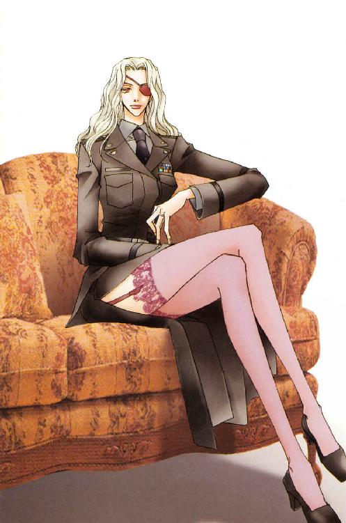
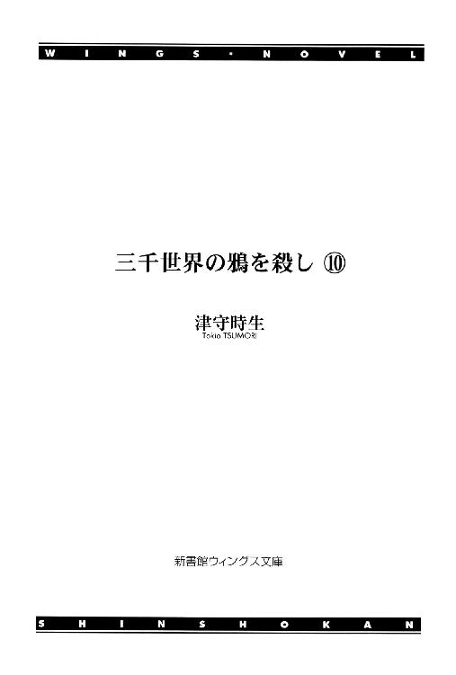
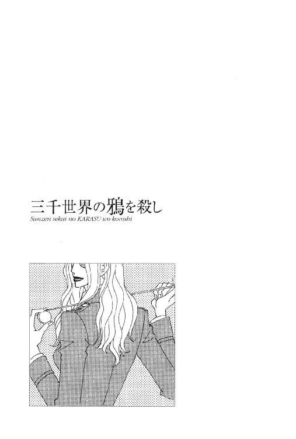
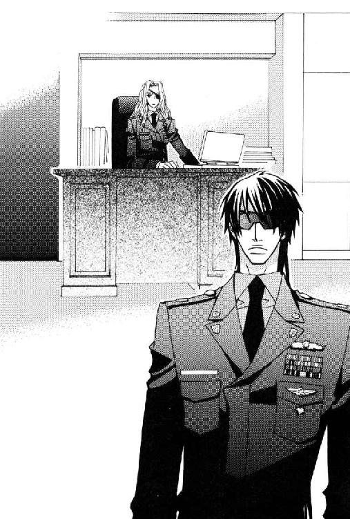
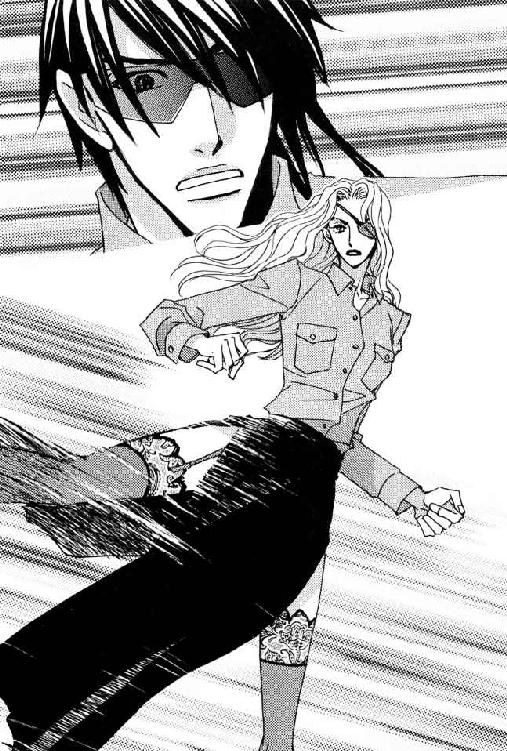
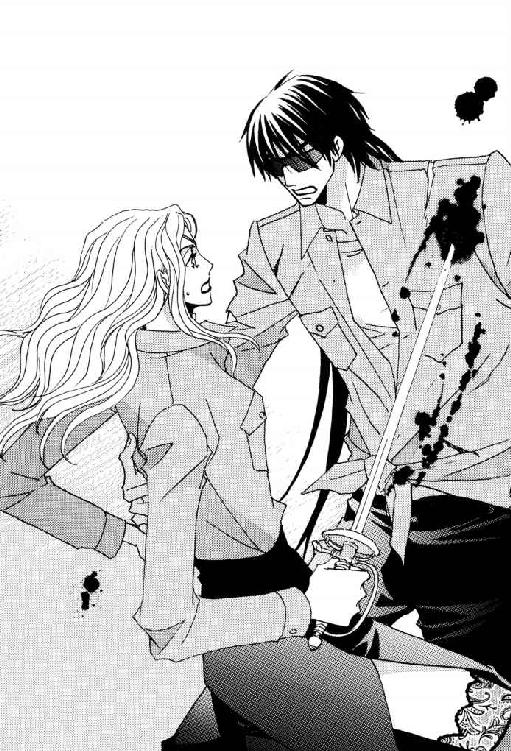
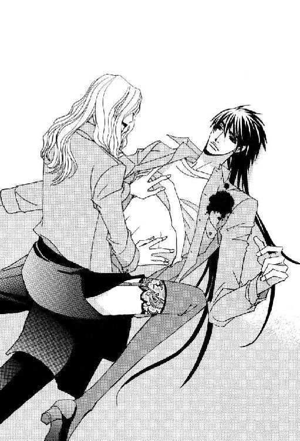
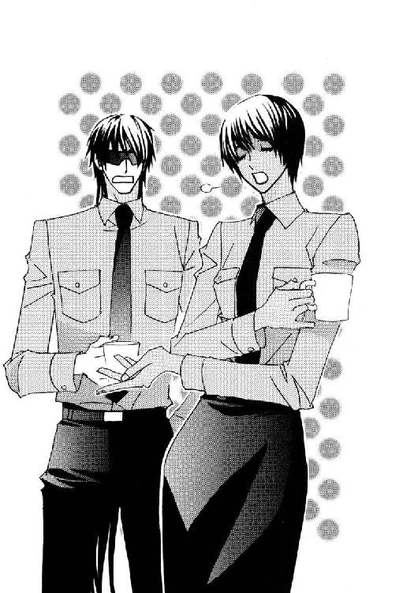
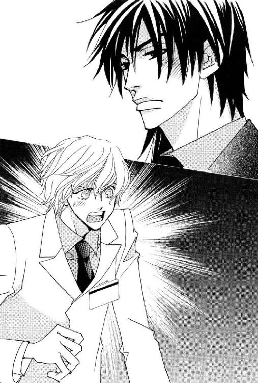
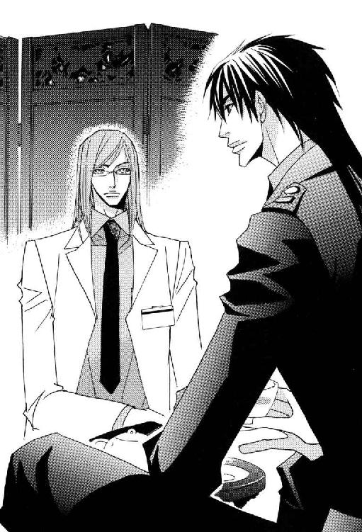

| 三千世界の鴉を殺し(10) (ウィングス・ノヴェル) | |
| 津守時生 | |




１
第二本部ビルは、通常士官たちが執務を行なう本部ビルからリニアカーで二十分の距離にあるＬ字形の建物だった。
本部と宇宙港を結ぶ道のちょうど中間地点に位置し、特別任務でイエロー・タウンの流民街に出撃する際、ライラが需品科の倉庫に武器を求めて駆け込んでいる。
最近では狙撃で破壊された携帯端末の新品を支給してもらうため、やはり彼女が需品科に立ち寄ったが、ルシファード自身が訪れるのは初めてだった。
──少し情報収集をしてくればよかったかな......。
セクハラといっても個々に対応は異なるだろうと思い、だれからも詳細を聞いてこなかったが、女性が相手となると半殺しにするわけにもいかない。
一度携帯端末を取り出し部下を呼び出しかけ、操作の途中で通話できないことを思い出す。ワルターやマルチェロに改めて聞くのも面倒になって、携帯端末を上着の隠しに戻した。
代わりに小隊長のアダン曹長が、時期外れに着任した上官のためにと作ってくれた基地内の案内図を思い出す。
第二本部ビルに入っている兵科は総務と需品、民事と法務、そして宗教の五つ。倉庫が必要な需品科や日常的な任務に不可欠な存在ではない法律と宗教関係の兵科が、第二本部ビルに入っているのはわかる。
だが、総務科が基地の最高指揮官と執務する建物を異にするというのは、大層効率が悪いのではないだろうか。
──それでいて財務科が本部ビルにあるのは、経理にうるさいブレッチャー司令官らしいっちゃーらしいケド。
この基地に着任して辟易したのは、戦艦勤務時代の四割増しという書類仕事の多さだった。
総務科とて通信連絡だけで片付く仕事ばかりではないだろう。日に二度は決済の必要な書類をかかえて、ふたつのビルを往復する兵士がいるはずだった。
本部ビルが手狭だというなら建て増しすればいいだけのことで、そのスペースは充分過ぎるほどある。
士官バーに何度か飲みに行ったり士官食堂のディナーで隣り合ったりして、偶然知り合いになった総務や法務の士官たちの顔を思い浮かべる。格別変わったところのない普通の──。
──待て。待て待て待て。ドクター・アラムートが言ってなかったか？ ＰＨ初代編集長のエカテリーナ何某さまが総務科本部にいるって......。
サイコ・ドクターズと全面戦争を戦い抜いた伝説の編集長がいる総務科。
そして今、自分が向かおうとしているのは、女好きの憲兵隊長アリオーニ大尉ですら忌避する女性集団を擁する需品科。
「もしかして......隔離？」
思わず声に出してしまったルシファードは、ついついネガティブな方向に思考が傾きがちな自分を叱咤する。
どんな目に遭おうとも、現況を把握して報告しなければ改善されようもない。
──猫の首に鈴をつけるネズミ......いや、せめて狼の首に鈴をつける羊......いや、あんまり代わりばえがしねえ。そもそも弱肉強食のケースに当てはめると、俺は食われる側になっちまうワケで、それは不吉すぎるし。
くだらないことで悩んでいるうちに、リニアカーは第二本部ビルの前に到着した。
正面玄関の車寄せで降り建物の内部に入ったところで、受付らしき窓口に出くわす。
飛び込みでやってきた来訪者と、各兵科の担当者との予定を調整するセクションらしい。宗教と法律関係は悩んだ末に近くを通りかかったからという理由で、発作的に訪れるものもいるだろう。
人気のない廊下から上体をかがめてのぞいてみたが、狭い室内にはだれもいなかった。
受付に用のない彼は興味を失い歩き出す。と、角を曲がって現れた男と接触しそうになった。
驚いた男が両手で持っていたものを取り落とし、ルシファードは素早くそれを受け止める。
「......失礼。そこつなマネをいたしました」
「こちらこそ驚かせてしまって申しわけありません、師父さま」
柄の悪い士官がめずらしく丁寧な口調で謝罪した相手は、半ば以上白髪になりかけている宗教科の大尉だった。
宗教科の聖職者たちは、各宗教界の本部が従軍経験のあるものから選抜して派遣してくる。彼らは軍服を着用していても、正当防衛を認められる状況でない限り、基本的には戦闘に参加しない。
自身は無宗教のルシファードだが、前線で兵士たちの精神安定に宗教が果たす役割の大きさは認めていた。行動と思考の規範を全面的に宗教の教義に依るのは賛成できないにせよ、強い意志と信念の持ち主が多い聖職者には敬意を払うことにしている。
銀河連邦宇宙軍法では無用の混乱と争いをふせぐため、彼ら従軍聖職者を総称して〝師父〟と呼ぶように定めていた。今では一般人にも広がり、正式名称のわからない宗教人への敬称として師父を使う。
地球系移民の惑星であり、駐屯している兵士の九十パーセント以上が地球系のカーマイン基地では、地球系宗教の聖職者しかいないと考えていい。それでもいくつかの宗派とそれによって異なる名称があったと記憶している。師父という総称があるのは便利だった。
ルシファードは右の手のひらで受け止めた植木鉢を、六十歳ほどに見える師父に差し出す。
満開にはもう少し間のあるピンクの薔薇が、上品な芳香を周囲に漂わせている。
「よい香りですね。育てていらっしゃるのですか？」
「はい。ようやく咲き始めたので、多くの方に楽しんでいただけるように温室から運んでくるところでした。ありがとうございます。あなたがとっさに受け止めてくださったお陰で、花を傷めずにすみました」
「こちらこそ美しいものを間近から楽しませていただきました」
ルシファードは幼少時につちかった演技力を発揮し、上品な口調で慇懃に応対する。
日頃から美貌をドブに捨てていると非難する副官が聞いたら、どこかで頭を打って記憶でもなくしたのかと疑いかねない別人ぶりだった。
大切そうな手つきで植木鉢を受け取った聖職者は、長身の士官を見上げて穏やかに微笑む。
この年齢で階級が低いのは、信仰の道に入ったのが遅かったのだろう。
「私もそっくり同じ言葉をあなたにお返しいたします」
同性に美貌をほめられてもうれしくないが、聖職者なだけあって純粋に芸術品を賛美するまなざしだった。
礼を言うのも変なので軽く会釈をする。
「受付を留守にしてすみません。法務のご相談でしょうか？」
「いえ、需品科に用があるだけなので」
「倉庫はこちらの正面ではなく、裏から回ったほうが早道ですよ。需品科の倉庫は、Ｌ字形の横棒に当たるところすべてになります」
「そうではなく軍服の採寸に──うわっ！」
呆然とした師父がまた植木鉢を取り落としかけ、ここまでの反応を予想していなかったルシファードは、最初の時よりあわてて受け止めた。
口の中で祈りの言葉を唱えた男は、悲しげなあきらめの表情で言う。
「花たちのトゲが、あなたの心まで傷つけませんように......」
「祈ってくださるのはありがたいのですが、できればもう少し勇気を鼓舞するものをお願いいたします。実態調査に来ながら、敵地目前で回れ右をして帰りたくなるのは大変まずい」
「実態調査と言いますと......？」
「部下たちに話を聞いただけですが、この基地の全男性士官にとって採寸中のセクハラは実に悩ましい問題だと思いました。部下たちの証言通りなら直接副司令官殿に報告し、早急に解決策を具申しようかと──」
ルシファードに最後まで言わせず、彼の両腕をいきなり鷲摑みにした師父は宗教的な情熱と歓喜に顔を輝かせて叫ぶ。
「おお！ 神よ、感謝しますっ。このような勇気ある若者を我が基地にお遣わしくだされたことを。──あなたは、あの恐るべき魔女たちの巣窟を滅ぼすべく降臨した大天使の化身に違いありません」
魔女とは穏やかでないが、トゲのある花にたとえるより、こちらのほうがよほど師父の本音に近そうだ。
しかし、需品科の女性士官たちと対決するからといって、大天使の化身にされるのは勘弁されたい。妙な思い込みは事態をさらに複雑にする。
そもそもどっちかっつーと俺、日頃から悪魔とか魔王とか呼ばれてたりするんですけどぉ？──と、師父相手にそれを言うのは全然シャレにならないので、感動で目を潤ませている初老の男には真面目な態度を貫く。
「まさかとは思いますが、師父さままで連中の被害に遭ったりはしていませんよね？」
温室で花を育てているという品のいい聖職者は、その問いに赤らめた顔を歪めてうつむく。今度は屈辱の涙を目に浮かべていた。
「自死は許されておりませんので、歯を食いしばって耐えましたが......。微力ながら少しでも悩める魂に寄り添いたいと着任した地で、よもや女性たちからこのような恥辱を受けることになろうとは......」
うなだれた首は細く、軍服の肩や胸も薄い。見るからに弱々しくて、これでは現役の女性兵士たちに腕力で対抗できなかっただろう。
聖職者らしい穏やかな雰囲気も、確固たる信念を持つ人間の余裕というより優しい性格からきているようだ。
この師父の過去に従軍経験があったとしても、籍を置いたのは肉体を鍛える間もないごく短期間で、かつ実戦をほとんど体験せずに除隊したとしか思えない。
従軍聖職者の資格条項が形骸化しているか、こんな辺境惑星の基地ならこの程度の従軍経験で充分だと上層部が判断したか。
前線とは別の意味ですさんでいる基地に配属されたこの師父もとんだ災難だった。
戒律で女犯厳禁の聖職者を手込めにするような鬼畜の所業はなかったと思いたいが、善良でおとなしい男を集団でもてあそぶのは人間として醜い。
被害者が一般兵士なら、ルシファードも軍隊式精神修養のひとつだと突き放して終わりにする。兵士のほうも被害を騒ぎ立てたところで、女にコケにされた情けないやつだと仲間からバカにされるだけだった。
だから今まで男性士官たちは泣き寝入りし、問題が表面化せずにきたのだろう。
だが、相手が宗教科の師父となると、行き過ぎた悪ふざけではすまない話だった。
──大方〝聖職者のおじさまだなんて禁欲的でステキ。嫌がる顔が萌えるわ～〟なんぞとほざいて、軍服をむしったんだろうな。
ルシファードは空いている片手を回し、当時の屈辱を思い出して涙ぐむ師父の背中を優しくたたく。
精一杯相手の思い込みに合わせた大天使風の言葉遣いでなぐさめる。
「それはあなたに必要な試練だったのです。従軍聖職者のひとりとして、この基地でこれからも勤められるかどうかという試練にあなたは耐え、立派に導き手としての力を神に示しました。恥辱を受けたことを恥じるのではなく、恥辱に耐え抜いたことを誇りましょう。転ばぬものが偉いのではなく、転んだ痛みにくじけず立ち上がったものこそ、地に伏して立ち上がれぬものの痛みを知り、救いの手を差し伸べられるのではありませんか？」
「......おお、あなたのおっしゃる通りです。私の中には汚れたものをさげすむ傲慢な心が育っていました。なんと情けない。あなたの言葉を心に刻み、虚心坦懐なる導き手であるよう日々励みましょう」
──あー、我ながらムチャクチャ胡散臭え。口から砂吐きそうだぜ。
などと思いつつ、涙をぬぐって微笑む師父にややこわばり加減の笑顔を返した。
薔薇の鉢植をもう一度手渡し需品科の本部に向かおうとするルシファードを、心の痛手から立ち直った従軍聖職者は激励する。
「つねに神の御心は、これから邪悪との戦いにおもむくあなたとともにあります。無事使命を果たされますよう、心からお祈り申し上げます」
──いや、だからさ。対決する意欲が低下するようなコト言うのはやめてくれって。
ほかの人間がやったら嫌がらせか呪いとしか思えない祈りの言葉を背中で聞きながら、まっすぐな廊下を歩き出す。
需品科本部はＬ字形ビルの縦に長い棟の一番奥にあり、横に伸びる棟と交わる部分の一階から四階を占めているという話だった。
晩秋の午後の淡い日差しが広い窓越しに差し込み、前庭にはほとんど葉を落とした木々が寒々とした姿をさらしている。
林の手前には石畳の小道があり、その道とビルのあいだに設けられた花壇が建物に沿って帯状に続いていた。
花壇の眺めも寂しい限りだった。鮮やかな色の斑の入った葉が一見花のように密集して生えている植物を一部に残すだけで、ほかのスペースはところどころに小さな名札の刺さった更地に戻っている。
名札の数だけ種類のある花々が、季節になれば花壇を埋め尽くして咲くのだろう。
戦艦勤務の長かったルシファードは、季節の移ろいを感じさせる寂莫たる光景に不思議な感銘を受けた。
人間を憩わせ目を楽しませるはずの木々や花壇が、決して美しいとは言えない状態で放置されている。
星間旅行客に快適な空間を提供する客船と違い、人間のために費やせるスペースの極めて限られた戦艦では、そんな〝ムダ〟は存在を許されなかった。戦艦に積み込まれたものは乗組員同様、必ずなにかの役割を担い、その役割を果たすことを義務づけられている。
効率も重んじられた。維持管理の負担に見合った効果がなければ排除される。
環境セラピー・ルームでは森林や海辺、深海などを立体映像で再現した上に、独特の匂いや湿度、気温を空調設備で調節し、室内を立体映像の自然環境に近づけた。
鳥のさえずりや潮騒に耳を傾けるうち、日が暮れて夜の気配が次第に濃くなっていく──といった仮想環境でも人間の五感は現実と錯覚し、ストレス発散とリフレッシュ効果は充分に上がる。
裸の木々、風に舞い散る落ち葉、土がむき出しの花壇。それらを温存させておけるのは、カーマイン基地のスペースに余裕があるからだ。
そして、時期がくれば木々は葉を茂らせて実を結び、球根や種は芽を出して花を咲かせる。
つまりスペースに余裕があるということは、時間に余裕があるということでもあった。三次元のスペースに時間という四次元の概念を加えたことで、空間効率の値は変化する。
──あ。なんかすげえエレガントな数式でこの概念を証明出来そうだ。あえかな光の中で演奏されるバイオリンの音色が、時にシャープな閃光となって弾けるような感じ？
初秋のわびしい庭を目にして足を止め、珍しくもほんの少し感傷にふけってしまった理数系の男だった。
文系の人間にとって、ルシファードの思考の流れは永遠に謎だろう。
ふと背中に多くの視線を感じて振り返る。
廊下側の部屋の窓に女性兵士たちが張りついて、食い入るように彼を見ていた。
獲物を発見した猛獣もかくやと思わせる強烈な眼光に、我知らず後ずさりしかける。
スクリーン・グラスの奥からちらりとドアに視線を走らせると、総務科第一分室という表示があった。
パープル・ヘヴン編集部の中心メンバー多数が在籍するという総務科のすぐそばを通りながら、目的地で待つものを考えまいとして風景に気をそらせた自分の失敗だった。
需品科本部に向かうところを目撃されるのは、この連中のろくでもない妄想を刺激してはなはだよろしくない。
ルシファードは即座にきびすを返して廊下を戻った。走って逃げれば追いかけたくなるのが獣の本能なので、とりあえず落ち着いた態度を装い、歩幅を広くして歩く。
引き返してきた彼を見て驚いた受付の師父が、窓を開けて顔をのぞかせる。
「どうしました？」
「総務の女性たちに見とがめられました。よけいな憶測をされたくないのでビルの外を回ることにします。需品科の倉庫から入っても本部には行けますよね？」
「もちろんです。案内人失格で申しわけありません。体育会系魔女の巣窟の途中に文化系魔女の分室があることを、あらかじめ注意申し上げるべきでした」
仕事場から廊下に出てこちらの動きをうかがっている女性兵士たちから目を離さず、ルシファードは相手の言葉にうなずく。
「なるほど。男を腕力で裸にむくか、想像力で裸にむくかの違いですね」
「そのように、はしたないことを言ってはいけません」
あけすけな言葉に頰を染めた聖職者は、上目遣いに軽くにらむ。
相手の歓心を買おうとするあまり愛玩動物のようにふるまうエセ天使のパトリック・ラッセルより、初老の師父のほうがよほど純情可憐だと思ってしまう。
ついに総務の連中は不作法にも断わりなく、さまざまな形状の小型カメラを彼に向け始めた。
そんな連中を悦ばせてやる義理はない。
「それでは改めて──行ってまいります」
黒髪の大尉は師父に小さく辞去の会釈をして、足早に玄関を出ていく。
ベスト・ショットを逃した女性たちのくやしがる声を聞きながら、善良で非力な師父は短い祈りの言葉をつぶやいた。
大小の物資運搬車両が駐車されているあいだを通り抜け、需品科倉庫の正面入り口に到着すると、警備の兵士たちが彼に警戒の目を向けてきた。
軍服を着ている人間なので銃口までは向けないが、ＩＤカードで身分を照会するまで警戒を解かない。
こうした駐屯基地だけではなく戦艦単位でも、横流しによる金品の授受を目的とした軍需物資の盗難は頭の痛い問題だった。
いくらコンピュータで管理しようと、それを操作する兵士が数字を改変すると発覚まで時間がかかる。その時間差を利用して横流しを行なった兵士は除隊し、発覚した時には行方不明というケースも多い。
宇宙軍から告訴を受けた銀河連邦警察は、そんな兵士たちを指名手配しているが、検挙率は必ずしも高くなかった。
在庫調査で出庫記録と各兵科からの申請、受領記録を照らし合わせ、食い違いから盗難の事実が判明するのはまだいいほうで、入庫記録の改変があると、総務科の購入記録と財務科の支払い記録とも突き合わせないと発覚しない。
ルシファードも艦長時代、通常航行中に何度か各兵科合同での抜き打ち検査許可を求められた。当然ながら交戦宙域や警戒宙域で行なう余裕はないので、緊急避難訓練と同じく平和な時にやるものという感覚がある。
避難訓練も本番では生命がかかるので常に真剣に行なうし、横流しを放置すれば補給困難な状況で物資の欠乏に陥る危険があるため、抜き打ち検査も厳しかった。
軍の戦艦の利用が多い宇宙港近辺や宇宙ステーションにある酒場では、需品科の兵科章をつけた兵士を探して近づき、言葉巧みに横流しを持ちかける連中がいつもうろついている。
そんな連中と兵士たちの接触を警戒し抑止するのも、憲兵隊が盛り場を巡視する目的のひとつだった。
一度、所属する艦隊の各憲兵科が連絡を取り合い、宇宙港とその周辺を所轄とする都市警察とともに総力を上げて軍需物資盗難の摘発に乗り出したことがある。
横流しをシステム化していた犯罪組織を三つ壊滅させ、それに関わっていた兵士や犯罪者たち多数を同時検挙という素晴らしい成果を上げた。
ルシファードの艦からも三人の検挙者を出した。害虫と同じで、いくら駆除しても悪心を抱く兵士は根絶できない。だからといって放置すると、宇宙空間ではそれが原因で乗員の命の危機を招く状況すらある。
悩ましい問題だった。
このように大抵の盗難は管理を任されている内部のものの犯行だが、いったん盗難が発覚すると犯人が特定されて盗難物資の流れが判明するまで、厳しい捜査が行なわれる。
出庫やひとの出入りの監視にミスがあれば、警備セクションも厳しく責任を追及される。まして、締まり屋のブレッチャー司令官が毎月末在庫一覧表をチェックするような貧乏基地ならなおさらだろう。
こんな平和な基地にしては、奇妙に感じるほど現場に緊張感が漂っているのも納得できる。
「第六連隊所属ルシファード・オスカーシュタイン大尉だ。需品科本部に呼び出されてきた。本部にはこちらからも入れると受付で聞いたのだが通してくれるだろうか。──総務科の前を通りたくねえんだよ」
彼がくだけた口調でつけ加えた最後の一言に警備兵たちは反応し、同情にたえないといったようすで笑う。
ひとりの兵士が警戒を解き、歩み寄ってきた。丁寧な口調で言う。
「照会のためにＩＤカードを一時お預かりできますか、サー。そして失礼ですが、来訪目的をお聞かせください」
「新しい軍服の上着を支給してもらうための採寸だ」
彼の返事を聞いた瞬間、警備兵たちは同時になんとも言えないうめき声を発し、そばに立つ兵士は手渡されたばかりのＩＤカードを取り落とす。
「......おいたわしい......っ！」
「そーゆーセリフをハモって言うんじゃねえよ」
受付の師父に続いて警備兵にまで衝撃をあらわにされると、半分やけになって口調もぞんざいになる。
戦闘服姿の警備兵は落としたカードをひろって機械に投入し、携帯者本人に間違いないことを画面で確認した上で返却した。
「入ってすぐ右に曲がり、真っ直ぐな廊下を突き当たりまでお進みください。そこにエレベーターがありますので、最上階四階の本部へどうぞ」
「つかぬことを聞くが、総務科の本部も四階か？」
「イエス・サー」
「そいつは、ノコノコやってきた餌食を窓から逃がさないようにっつーハラか？」
ブラックなジョーク混じりの問いかけに、歩哨ふたりは顔を見合わせた。そして左右に視線を外し、同時にため息をつく。
「......否めません......っ」
「またハモりやがって」
苦笑した男は需品科の倉庫側出入り口から第二本部ビル内に再び入った。言われた通り進もうとする彼の背中を、警備兵たちが呼び止める。
「大尉殿っ！ お帰りの際もこちらの出入り口をぜひご利用ください」
「俺たち、なにがあっても絶対に大尉殿の味方ですからっ。男の気持ちは男が一番わかりますから......っ！」
どういう時の男の気持ちなのか下手に問いただすと、立ち向かう勇気がなえかねない。肩越しに無言でうなずくにとどめた。
ルシファードの姿が窓越しに見えたとたん、室内にいた女性兵士たち数人が、ほぼ同時にイスから立ち上がった。
呼び出した側が彼の来訪を知っているのは当然で、手ぐすね引いて待ち構えていたとしても驚かない。
ドアがかすかな作動音とともにスライドし、彼が一歩室内に足を踏み入れた時には、一番近くに席のあった女性伍長が手を伸ばせば触れられる距離に歩み寄っていた。
伍長は軍人より接客業のほうが向いているのではと思うほど、愛想よく迎える。
「オスカーシュタイン大尉殿ですね？ 需品科にようこそ。お待ちしておりました」
「お忙しい中、わざわざご足労願いまして申しわけございません」
「そのかわりと言ってはなんですが、遅くても明後日には完成品をお届けできるシステムになっております」
「なお、お急ぎでしたら明日朝にお届けすることも可能ですので、御遠慮なくおっしゃってください」
「着用してなにか不具合がありましたら、すぐお直しさせていただきます」
ほかの女性たちも加わってリレー式に説明していく。男の側に口をはさむ余裕を与えず、説明した全員で取り囲んでしまった。
どの女性も軍人らしからぬ柔らかな態度と親しげな微笑みを浮かべて接してくるため、日頃むくつけき男たちとばかり接している士官の中には、気を許してしまうものもいるだろう。
中肉中背の彼女たちに囲まれても脅威と感じるより、なんとなくチヤホヤされているようで悪い気がしないというのが男の悲しい性だった。
あいにく幼い頃から、おのれの身を守らねばならなかったルシファードには、女性の媚態やおためごかしなど通用しない。
下心のある連中はなれなれしくすり寄ってくると相手の反応を見ながら気安く体にさわり始め、自分との接触に慣れさせる。そして相手の警戒心が薄れた頃合いを見計らい、強引に次の段階に進むのが常だった。
それを阻止するのに大事なのは、まず手の届く距離まで近づけさせないことだが、そこは敵も承知で先手を打つ。だてに数をこなしていない。
そうなると残る手立ては気迫だった。うかつにさわると目的を果たすどころか、自分の身が危うくなると思わせる雰囲気を作る。
こういう時に長身と目の表情を完全に隠す黒のスクリーン・グラスは威圧感があり、芸術品並みに整った顔は近寄りがたい印象を周囲に与える。
彼は無言の気迫で彼女たちを精神的に押し戻し、つけ込む隙を与えなかった。
歓迎を装った彼女たちのリレー言葉を無視し、頭越しに室内を一通り見回す。
カギ括弧に似た形の机が半分ずつズレて向かい合い、六つでひとつの島を作っている。その島が四つ。
机のレイアウトは色々違っていても、隣とのあいだをついたてで区切ってメモを貼り付けているあたりは、どこの事務所でも見かける眺めだった。
ルシファードの周囲を取り囲む女性たちのほかにも女性兵士はいた。
軽く眉をひそめてパソコン画面と向き合い仕事に没頭しているものや、仕事で通話中のもの、好奇心には勝てなくてちらちらとこちらを横目でうかがっているもの。
女性兵士全員が問題のセクハラ行為に参加しているわけではなく、賛成しているわけでもないらしいとわかって少し安堵する。
男性兵士たちは仕事に没頭している風を装っていても、こわばった姿勢や青ざめた横顔から内心の動揺がうかがえた。
彼らとて我が身は可愛いだろう。少数派が見て見ぬふりをするのも仕方がない。
目にした限りで判断すると、総務科本部で働く兵士たちの三分の二が女性だった。
カーマイン基地の男女比は男性二に対して女性が一。総務科は比率より倍の女性が配属されていることになる。
一般社会だけでなく軍隊でも男女差別は許されないが、性別による身体的能力の違いは無視できない。どうしても通信や事務職、主な仕事が軽作業の兵科に女性兵士を多く配置することになる。
ルシファードを含めてほとんどの男は、戦闘や狩りといった安全と生活の糧を確保する仕事で、その実力を最大に発揮する生物だった。
そのかわり女性ほど日常モードの性能はよくない。ひどいケースになると、あまりの無能さに人並みの日常生活を送ることさえ困難なものもいる。
有能な女性たちが日常モードの男たちを見てふがいないと極めつけるのも無理からぬことだが、同じ空間に共存している以上、男の基本的人権は守られるべきだった。
需品科トップの女性士官にそう訴えて、悪質なセクハラ行為をやめさせねばならない。
おのれの崇高な使命の低レベルさにふと、むなしさを覚えたが、早急に上着を調達する必要のある自分自身の問題でもあった。
仕事に戻るために嫌なことは早くかたづけてしまおう。
「ここで採寸するわけではないんだろう？」
「はい。これからご案内します」
「こちらへどうぞ」
部屋を出て先導するもの、来た方向の廊下に立ってさりげなく退路をふさぐもの、背後と両脇について誘導と急き立て役を担当するもの。
その役割分担と手際のよさに感心した。疑いの目で見ていなければ普通は気づかない。
ためしに言ってみる。
「案内役はひとりで充分だ。ほかは仕事に戻ってくれ」
「ありがとうございます、サー。ですが、どうぞお気遣いなく」
「くれぐれも失礼のないようにと申しつけられておりますので」
「私たちも少佐殿に呼ばれておりますから」
「少佐？」
「我が需品科の最高指揮官ドミニク・バンカー少佐殿です」
需品科の規模からして、おそらく少佐が最高位だろうという予想は当たった。
戦闘時に上級者がおらず同格の大尉がふたりいた場合、部隊の指揮権は軍に入隊した日が一日でも早い人間にゆだねられる。
今は平時だし上級者が指揮をとれるからには、需品科の大尉とルシファードのどちらの入隊日が早いかは問題にならない。
つまりこの需品科内でルシファードに命令できる上級者──正面切って彼にセクハラしそうな人間は、バンカー少佐ひとりだった。
説得すべき人間がひとりだけで済むのはありがたい。直接対決は望むところだった。
案内の女性が廊下の途中にある一室の前で立ち止まり、入室許可を求めた。
──逃げようにもビル中央の部屋じゃ窓がねえじゃん。
最初から逃げるつもりはないにせよ、万が一の事態を考えた退路の確保は子供の時からの習い性だった。
すすめられて入ったとたん、先客たちの品定めをする視線にさらされる。
──これは......かなりタチ悪いよなぁ。さすがに少しムカついてきたかも。
大柄な女性士官たちが数人、書類を手にして室内のイスに座っていた。一見仕事中を装っているが、実態は巣穴で犠牲者を待ち構えていたメス狼の群れだろう。
この状況を男女逆にして考えたら、どれほどひどい人非人の所業か簡単にわかるはずだ。性犯罪厳罰主義のライラなら、その場にいた男たち全員を射殺した上で、断固無罪を主張するに違いない。
男も女も、ひととしての尊厳を損なわれれば傷つく。
先導役だった女性士官が、この有様に内心かなり不快感をつのらせている男を上官に引き合わせた。
「バンカー少佐殿、オスカーシュタイン大尉殿をお連れいたしました」
「ご苦労さま」
低い女性の声がゆっくりした口調でねぎらう。
低い中にも甘さを含む声で、どこか退廃的な響きのある物憂い調子が、思わず耳をそばだてるほどセクシーだった。
ルシファードはその声に惹かれ、奥の執務机前に座る需品科の最高指揮官に視線を向ける。
一目見て、背筋に戦慄が走った。

──どうして今までだれも、こんな女が親玉なんだと俺に教えなかったんだよっっっ！ ××××っ、××の×××っ！
彼に需品科の危険を語った男たち全員に対し、心の中で猛然と罵倒を浴びせる。自分自身は無宗教なので従軍聖職者に対しても遠慮などしない。
ドミニク・バンカー少佐の第一印象は白。白い大理石で作られた彫像を連想させた。
ゆるくウエーブのかかったプラチナ・ブロンドの長い髪に血の気のない真っ白な肌。目が赤みがかった茶色で、暗赤色の口紅をつけている。
顔立ちは整っているが、個性とも言える欠点をすべてなくした典型的な美人の顔と言えなくもない。
地球系人類として見ると、年齢的には三十代半ばから後半くらい。若くはないものの、おばさま扱いするにもかなり無理があり、心身共にもっとも充実している年頃だった。
イスに座っているので身長まではわからない。
ルシファードに衝撃を与えたのは彼女の存在感だった。
陰と陽なら陰。ただ決して陰気なわけではなく、静かなたたずまいの中に秘められた圧倒的な力を感じる。
満腹の肉食獣が、けだるそうにくつろいでいる感じに一番近いかもしれない。彼女と比べると、ライラはまだ少女の面影を残した成長しきっていない若さがある。
この女性と対等に向き合えるのは、副司令官のラクロワ中佐と軍医のサラディン・アラムートくらいだろう。第六連隊隊長のマオ中佐ですら貫禄負けする。
──......ダメかも、俺。このひと、すげーこわい......。
整っているせいで没個性になっている少佐の顔の中で、唯一強烈に個性を主張しているものがある。
左の目を隠す眼帯だった。
光沢のあるワイン・レッドの布を張った眼帯と同色のひもは、ファッションで着けるには相当な無理がある。眼帯の奥から左頰の半ばまでのびた黄緑色のケロイドが、眼帯の装着に深く関係しているのは間違いない。
美女の片目をふさぐ眼帯は痛ましい反面、妙に倒錯的だった。そのせいだけではなく彼女は妖艶でもあった。
妖艶と言うとあのおぞましい青鱗人のブラッディ・レスを思い出すが、彼女のからみつく濃厚な色気ともまた違う。
肌につけた香水が体温で自然に立ち昇るような、肌の温もりを感じさせる色気だった。そのほうが官能的で男を惹きつける。
──......でも......でも......こーわーいーっっっ！ なんでアイ・パッチ！ どうしてアイ・パッチ！（泣）
内心錯乱しながら一切動揺が外見に出ないという、こうなると損なのか得なのかわからない体質のルシファードは、迫力満点の少佐に敬礼した。
「機動歩兵科第六連隊所属ルシファード・オスカーシュタインであります」
「初めまして、大尉。私はドミニク・バンカー。夫のブライアンが第四連隊の連隊長を務めているのよ」
なるほど言われてよく観察すると、左手の薬指に飾りのない指輪をはめている。
ワルターや憲兵隊のアリオーニ大尉なら即座にチェックしているだろうが、女性が既婚か未婚かにあまり興味のないルシファードにすると、彼女に自己申告してもらったのはありがたい。
ライラが白ゴリラと呼んでいるブライアン・バンカー中佐は、どこの軍隊でも大変よく見かけるマッチョ・タイプの職業軍人だった。
そういう男の常として、ルシファードの長髪もスクリーン・グラスも、父親が宇宙軍中央本部のエリートだということも、ルシファード自身が第一等勲章を三つもらって英雄扱いされている存在だということも──つまりなにもかも気に入らず、目ざわりな存在と見なしている。もし彼の連隊に配属されていたら、日々目の敵にされて面倒な状況に陥っただろう。
彼の妻の前でうかつな真似をすると、怒鳴り込まれる可能性は高い。
が。
そんなコト、今のルシファードには知ったことではない。需品科のセクハラ問題もなにもかにも知ったことではない。
──いやーっっっ！ 絶対に喰われるーっっっ！ ライラ助けて～。←もはや半泣き。
「わざわざ、ここまで来てもらってごめんなさい。おわびに私が採寸するわね」
されたくありません。貴女以外の女性にしてくださいと言ったら、彼の希望はかなえられるだろうか。
侮辱と受け止められて機嫌を損ねたあげく、そっけなく拒絶されて終わるだけかもしれないし、案外笑って軽く一蹴されそうな気もする。どちらにしても逃げ道はない。
ルシファードのように手強い男から抵抗する気概を奪える女性は、この部屋の中で彼女しかいないのは確かだった。
──ええい、最初からのまれっ放しでどうする、ルシファード・オスカーシュタイン！
逃げ腰の自分に気合を入れる。
窮鼠猫を嚙む。見栄っ張りと思われようと、ここで男の意地を見せなければ、自分に望みを託した男たちに顔向けができない。
「なるほど。あなたが獲物の牙を折って、餓狼の群れに放り込む仕組みですか」
室内にいる女性たちのあいだから、彼の挑戦的な言葉に対して小さな驚きの声が上がった。
自分たちのボスにこんな恐れ知らずなセリフをぶつけた男は初めてだった。
美貌も度胸も桁外れなその男は、バンカー少佐を真正面から見据えて皮肉な笑いに唇をゆがめている。
生意気な男に上官がどう思い知らせるのか、部下たちが意地悪な期待とわずかな不安を抱いて注目する中、ドミニクはゆっくりとイスから立ち上がった。
ルシファードはスクリーン・グラスの奥で目を見張る。
背が高い。百八十センチのライラより目線が上になる。おそらく彼女は夫のバンカー連隊長と並んでも変わらないか、ヒールの高さ次第で高くなるかもしれない。
今までバンカー中佐が自分にどんな態度を取ろうとも、個人的にはなんの感情も持っていなかったルシファードだったが、初めて少し尊敬の念がわく。
この迫力満点な妻と毎日同じ家で暮らせるだけで、すごい精神力だと思う。
バンカー夫人は若造の嫌味ににっこり笑って答えた。
「あら、牙だけじゃないわよ。可愛い部下たちが頭からのみ込みやすいように固い骨はみんな粉砕してから渡しているの」
負け。ルーちゃん全然歯が立たず。
堂々と居直る相手のセリフに敗北感を嚙みしめつつ、気の毒な師父に大天使の化身扱いされた男は、いざとなったら自力で窓を作って脱出しようと覚悟を決めた。
だれしも我が身は大事だ。
窓を作るつもりで壁を全壊させてしまう程度のことは許容範囲の誤差。天井まで吹き飛ばしたりしないよう、なるべく平常心で力を使わねばならない。
需品科の少佐は自分の執務机の左後方にある扉の前に移動し、足を止めて顧みる。
「こちらへどうぞ、大尉」
「アイアイ・マム」
いけない秘密の小部屋？ 拉致監禁用？ 品揃え豊富な拷問道具？？？
頭の中を駆け巡る豪華絢爛な恐ろしい光景とお道具。
早くも飛び去りかける平常心のしっぽを急いで捕捉しつつ、ルシファードは体育会系魔女の元締の招きに応じて、内心嫌々そちらへと歩き出す。
背後で押し殺した笑い声が聞こえた。それにつられて小馬鹿にした複数の笑い声が上がる。
女性士官たちの笑い声があからさまな嘲笑に変わる前に、ルシファードは肩越しに振り返ると一瞬だけ殺気を放つ。
即座に笑い声は途絶えた。彼女たちは横っ面を張られたような顔で呆然としている。
ドミニク・バンカー自身にならともかく、そのふざけた取り巻きにナメられる覚えはない。
戸口で待っていた彼女は、やんわりと彼のした行為を非難した。
「気持ちはわかるけれど、女を相手に凄むのは感心しないわ」
「性別問わず、おのれの分をわきまえるのは処世術として大切なことでしょう？」
「あなたの言う通りね。教育が行き届かなくてごめんなさい」
メンツに頓着せず、あっさりと前言を撤回して謝罪する潔さに好感を持つ。男同士ほどではないにしても、上級者が下位のものにわびる時、ここまであっさりとした態度を取れないのが普通だった。
２
ドミニク・バンカーに促されて渋々入った奥の部屋は、あらかじめ想像したどんなものとも違っていた。
絨緞が敷き詰められた部屋の中央に模造毛皮の敷物が広げられ、猫足の長椅子やそろいのデザインのテーブルが並んでいる。
室内を見回すと彫像風の置物や造花を噴水のようなボリュームで飾った巨大な床置きの花瓶があちこちに置かれ、壁には薄物をまとった豊満な婦人たちとボンレスハム体形の天使とが踊り狂っている額縁入りの絵がこれでもかというほど飾られていた。
ベビーピンクと金色が強烈に目立って、悪趣味さに軽いめまいがしそうになる中、唯一の救いはソファの背後の壁に交差して飾られた二本のサーベルだった。
柄やガードの部分に凝った装飾が施されているものの、充分実戦に耐えるデザインをしている。ただし、アンティーク調の室内装飾に合わせて調達してきた樹脂製の模造剣だとしたら、ごっこ遊びができる程度の代物だろう。
それにしても豪華を装った安っぽい部屋で不快に感じる。
ざっと見たところ軍人の給料で買う勇気が出ないほど高級な品は、中央にあるソファ・セットだけだった。必ず転勤のある身では、一部の例外をのぞき一生無縁に終わる品だろう。
軍艦勤務で私物としてそのソファ・セットの持ち込みが許されるのは、駆逐艦以上の艦長くらいしかない。
「ソファに座って。お茶を入れるわ」
「アイ・マム」
ルシファードは上官の言葉に上の空で返事をする。すぐ近くにある床置きの花瓶の造花に関心が向いていた。
さまざまな種類の花を組み合わせたアレンジメントの中に手を突っ込み、彼の注意を引いた一本を抜き出す。
妙に途中で突っかかるのをあえて無視し、強引に引っ張ったそれの茎部分には、同色のテープを巻いて目立たなくした小指の先くらいの膨らみがあった。
花弁の中央には雌しべに偽装した小型カメラがあり、最初はそれが彼の注意を引いた。茎の膨らみはバッテリーと発信装置らしい。
百歩譲って、この部屋に入れなかった連中が楽しむために仕掛けたのならまだいい。その映像を記録しているとしたら立派に犯罪行為だった。
あとのお楽しみ用だと主張しようと、セクハラ被害者の口封じに使わないとだれが確約できるだろう。
これひとつでも立派な証拠として提出できるが、そもそも需品科の女性たちがどうしてこんな真似をするのかという点を不明なまま放置するのは、問題の根本的な解決にはならない。
「造花が気に入ったのなら、何本か持っていってもかまわないわよ。どうせこんなにたくさんあるのですもの」
「大変気に入らないので、何本か処分させていただいてよろしいでしょうか、マム？」
不穏な言葉に支度をしていたティー・セットから顔を上げたバンカー少佐は、男の手にした造花がなにを意味するか悟った時、隻眼をわずかに見開いた。
すぐに軽く眉根を寄せ、小さなため息をつく。
「......まあ、あきれた。悪事の動かぬ証拠を押さえられてしまったというわけね。どうぞ、好きなだけ家捜ししてちょうだい」
隠しカメラの存在に驚いた彼女の態度は控え目なだけに自然だった。自身の関与を否定するために演技したとは思えない。
だが、たとえ盗撮にかかわっていなくても、部下の監督不行き届きは追及される。
告訴確実な証拠を前にして動揺を見せないのは、ふてぶてしく居直ったというより彼女の胆力だろう。
最高責任者の許可を得たので、遠慮なく捜索に取りかかった。
造花に紛れたものは、ほかにいくつもあった。彫像の一部にはめこんだものや絵の額縁を利用したもの、テーブルの下に貼り付けたもの、部屋の四隅の天井に飾った仮面の裏等々。
データを総合して立体映像を作るつもりなのかと思ったほど、部屋のあらゆる角度から撮影されていた。盗聴装置もふたつ発見したが、これは映像ほど位置に影響されないため、多くは仕掛けなかったのだろう。
隠し場所が安易な上、押収したカメラもインターネット通販で簡単に手に入る物ばかりなので、これ以上徹底して捜索を行なう必要はないと判断する。
プロ用の小型化された専用機材となると待ち針以下だった。探知装置を使用しなければ発見できない。
とりあえず取り外せたものだけをテーブルの上に置き、ルシファードは布張りの大きなソファに腰を下ろす。
彫像の目に仕込んだものなど容易に外せなかった場合は、とりあえず壁に向けて置き直したり、移動させた床置きの花瓶で視野をふさいですませた。
肘掛イスに座って先にお茶を飲んでいたドミニク・バンカーが、ティー・カップ越しにテーブルの上の戦利品を眺めて言う。
「ずいぶん手慣れているのね。確認が早くて動きに無駄がなく、かつ的確。情報部の教育でも受けたの？」
「六歳になった年から九年間、かつて軍の情報部とも仕事をしていた母とふたりで賞金稼ぎやボディガードといった危険な仕事をしていました。この程度のことは一応たしなみとして、ね。情報部の捜索はもっと徹底していると思いますよ」
ルシファードの仕事ぶりから二重軍籍を見抜いた彼女の炯眼に感服しつつ、涼しい顔で疑惑をかわす。
ウソとしか思えない本当の話は、聞いた人間の興味を引く。特にほとんどの女性は幼い子供の境遇に反応する。
果たして、少佐も渋面を作った。
「感心できないお母さまね」
「仕方ありません。俺も両親も、一般人の範疇になにひとつ入らないんですから。獰猛な肉食獣の子供を草食獣には育てられません。──ところで、このフラチなお道具類は破壊してよろしいでしょうか？」
「お好きにどうぞ。あなたにもお茶を入れるわね。ミルクとお砂糖は？」
「いいえ、お茶はいりません」
ひとつひとつを指のあいだにはさんで、潰したり折ったりする。
「あら、せっかく自慢のティー・セットなのにつれないこと。別に一服盛ったりしないわよ」
「単に早く用をすませて仕事に戻りたいだけです。男には居心地のよくない部屋ですし」
「殿方の好みじゃないせいね。少しでも採寸をリラックスしてもらおうと思って、お気に入りのソファ・セットを持ち込んだのに......残念だわ」
美貌の女少佐は気落ちした口調で言う。
「ソファ・セットと周囲の安物とのすさまじいミスマッチを解消しただけでも、好感度は上がるはずです。よほどがさつな男でなければ、一生お目にかかれないような高級ソファの良さくらいはわかると思いますが」
「なぐさめは結構よ。軍人の男なんて一生砲台や操縦席のシートに座って暮らせばいいのよ」
どうやら家具にこだわりのあるらしい彼女のすねたようすが、束の間少女めいて愛らしく、ルシファードは微笑を誘われた。
「大尉クラスの給料のほぼ一年分に匹敵するソファに座っていると教えてやれば、どんな筋肉ダルマでも優雅にふるまおうと努力するでしょう」
「まあ、うれしい！ ようやく見る目のある男性に出会ったわ」
「母が厳しい審美眼の持ち主で、つきあって色々目にした結果なだけです。所詮無粋な男のひとりとしては、これを購入した際のバンカー連隊長殿の態度のほうが気になります。その結果次第では連隊長殿をもう少し尊敬してもいいような気になるかと」
中佐の給料でも笑って許せるレベルの買い物ではない。
バンカー夫人はほがらかに笑った。
「これは私の貯金で買ったのよ。子供の頃からずっとあこがれていたメーカーなの。ブライアンが中佐に昇進すると同時に巡洋艦の艦長になったお祝いと、それを機に結婚した記念。彼ったら指輪の代わりに買ってやるって宣言したものの、値段を聞いて急に無口になってしまって」
それは無口にもなるだろう。
生活必需品のほとんどを支給され、戦艦勤務では娯楽の場も限られてしまう。これで貯金できないほうが不思議なのだが、男社会のつき合いはそう単純ではない。
面倒見のいい上官だと部下に慕われて頼りにされるには、時間外のコミュニケーションが重要だった。そして、やつらは牛馬並みに飲みかつ食うのである。
男のメンツと妻への愛がかかったソファ・セット。しかし、預金残高は──。
相変わらず積極的に尊敬したいとは思わないものの、苦境に陥った時の彼の心境には若干同情心がわく。
「彼のお財布の状況くらいわかっているわよ、副官だったんですもの。自分の夢は自分の力でかなえるものでしょう。そのソファが私室に入ったら、この上でメイクラブしましょうねって言ったんだけど──」
うわあ、御馳走様だった。ボンレスハムにバラの刺青より、独身士官にはよほど刺激的なお話である。
「──何度誘っても逃げちゃったわ」
「そ、それはやはり環境的に落ち着かないとゆーか、男の傷ついたプライドがちょっとうずくとゆーか、ライフスタイルの問題とゆーか......」
もごもご。
「私もソファも堕ちたものだわ。こんなところでつまらない結婚生活の鬱憤晴らしに男をいたぶって。くだらない人生だこと」
「そう思われるなら、やり直したらいかがですか？」
「ま、お説教？」
笑顔なのに気が遠くなるほどこわいんですけども。
「単なる前向きな選択肢の提示ですよ。現在の進路で行き詰まったら、進路変更で乗り切るのはセオリーでしょう。離婚するもよし、除隊するもよし。あなたほどの女性なら、どこででもやっていけると思いますよ。ソファ・セットをお供に連れて」
「ソファ・セットをお供に連れて？」
オウム返しに言って面白そうに眉を上げた今度の笑顔は、優しくて素敵だった。
ルシファードはいたって真面目な面持ちでうなずく。
「せっかくかなえた夢ですし、俺なら自分の付属物として背負っていきますね。値段の問題ではなく、もはやアイデンティティーとしてこだわりたいな、と」
「男って時々物に対して強い思い入れをするのよね。ブライアンも『親父が死んだ十二の春、エルガー社のバタフライ・ナイフだけが俺の心の友だった』なんて言っていたわ」
口元を隠しても声が笑っているのはごまかせない。今にもプププッと吹き出しそうだった。
「もしかして、そこで少佐殿は笑っちゃったんですかー？ バンカー連隊長殿の心の中に今も生きている十二歳の孤独でナイーブなブライアン少年は、きっとすごく傷ついちゃったと思いますけどー？」
「大丈夫。手のひらに爪の跡が残ってしばらく消えないほど、固く拳を握って必死で笑いをこらえたわよ」
「またそういうムゴイことを。単に男はロマンチストなんです。どんな時にも一緒だったという豪華なソファに横たわり、ひとり孤独を見つめて心の傷を癒す美女。謎めいた美しいストーリーだと──別に拳を握って我慢しなくても結構ですよ、マム」
ルシファードの許可をもらって心置きなく声を上げて笑ったドミニク・バンカーは、口紅と同じ色のマニキュアを塗った指先で目尻の涙をさりげなくぬぐいつつ礼を言う。
「笑ったりしたけれど、あなたにそう言ってもらえてうれしいわ。本当よ。このソファには愛着があるもの。大切にするべきだったわ。自暴自棄になって自分もソファのように投げやりに扱ってしまった。後ろ向きだったわ、確かに。──いい加減にブライアンへの未練は捨てて、軍人としても女としても仕切り直さなければね......」
自嘲気味な響きの加わった終わりの部分は、半ば彼女自身に言い聞かせる言葉だった。
意外。
ブレッチャー司令官がニコニコ笑ってお小遣いをくれることより意外。
こんな女性が未練で別れられないという事実、その一点だけでバンカー中佐を見直す。
「もっとも決着をつけると言ったって、私ひとりで出来るものでなし。あの弱虫に私の顔を見て話をさせるだけでも一苦労だわね」
「は？ 弱虫ですか？」
「そうよ。腰抜けの臆病者と言ったほうが正確かしら。この基地に転任して三年、同じ家に住みながら妻の顔を正面からまともに見ることもせず、話をしようとすると忙しいとか疲れているとか約束がほかにあるとか、そんな口実で逃げてしまうの。それで夫婦間の問題がかたづくと思って？」
「思いません。しかし、それを結婚したことのない俺に言ったところで、夫婦間の問題解決の一助にもならないのでは──」
「そもそも女々しいのよ。いつまでも失敗体験を引きずって、負け犬気分に酔っているとしか思えないわ。立ち上がって現実を直視するより楽だからでしょうね。甘えた子供と同じ。私はママじゃないのよ」
「そ、そんな臓腑をえぐる超鋭角的指摘をなさったら、連隊長殿はますます心の小部屋に引きこもってしまいますよ」
なぜか女性が男性を責めるセリフはどれも似ていて、幸い今のところ身に覚えがないルシファードですら、少々痛覚にさわるものがある。
「なにも言わずに自分の心情を察して欲しいだなんて、夫婦関係を手抜きするにもほどがあるわ。せめて体で関係をつなぎ止めるくらいの努力もしたくないっていうわけ？」
「そ、そんな赤裸々な告発を俺にされたって、一体どうしろと？ つか、なんでここで人生相談？ 俺、回答者としての適性に恐ろしく欠けていると思いますよ？」
「というわけで、私は夫の属する男という種族に対する怒りと欲求不満の鬱憤をこうして晴らしているという話」
「オチはそこですかっ！ そんなオチありですかっ！」
「私だけじゃないのよ。ある日、お茶の時間のグチ大会で、ほかの女性士官たちもみんななにかしら、男にはひどい目に遭わされているとわかって、復讐しようという結論に達したの」
その飛躍した論理のどこに正当性があるのか、ルシファードには全然わからない。かろうじてわかるのは、男運の悪い需品科の一部女性兵士たちの八つ当たりで、基地の男性士官たちはセクハラされたという点だった。
問題の根本的解決など自分にできるわけないという結論に達する。これは司令官命令という強権発動で抑え込み、人事異動でメンバーを解散させる手段しかないだろう。
「......つかぬことをお聞きしますが、この一連の復讐的八つ当たりセクハラについて、バンカー連隊長殿はどのようにお考えだと思われますか？ 推測で結構ですから」
「私が当てつけに起こしている騒ぎだとは、いくらなんでもわかっているんじゃない？」
──シメる......！
彼女の答えを聞いてルシファードは即座に決意する。
夫婦間でなにをモメようが個人の自由だが、そのとばっちりでほかの人間に迷惑がかかるのなら話は別だった。
ドミニクは自分の社会的地位をすべて捨てる覚悟で臨んでいる。地位より鬱憤の晴れるほうが大事という女性に、いくら理を説いてもムダだった。
古来から伝家の宝刀『だって許せなかったんですもの』を抜いた女性は強い。
責任はすべて妻をそこまで捨て身にさせた夫側にある。敵前逃亡をくり返したりせず真剣に話し合っていれば、多くの男性士官が屈辱を味わうこともなかった。
ただでさえ情緒的な会話の苦手な体育会系のバンカー中佐が、こういう魅力的かつ手強い妻と対峙するのは、相当なプレッシャーがあるだろう。そんな事態にだけは陥りたくないものだとルシファードも思う。
しかし、ドミニクは彼の妻なのだ。快適な共同生活をともに築く義務のあるパートナーに対し、一方的に責任を放棄して人生の三年間を憤りと失望のうちに過ごさせたのは、ブライアン・バンカーだった。
自分の無責任がほかの男性士官たちの迷惑になっていると知りながら、今日まで見て見ぬふりをしてきたのは許しがたい。
「どうしたの、急に押し黙って。怒った？」
笑って優しくたずねる女性は、ルシファードのような若造が怒ったところで痛くもかゆくもないのよという余裕を漂わせている。
細い片眉を上げて少し意地悪くからかうその表情は、洗練された大人の女にしかできない。
このひとはなんて優雅に色っぽいんだろうと思いながら答える。
「無事ここから生還できたら、上官だろうがなんだろうが、被害者を代表してあなたの夫をボコっちまおうと決意したところです」
「ボコってしまおうって......ボコボコに殴るという意味？」
「イエス・マム」
なにを意見されても決意は変えませんとばかりに即答した男を、あきれたように見遣った隻眼が、やがて母のような慈愛に満ちた微笑みに細められた。
「やんちゃねえ......。さすがにその歳で、アルヴ・ストレナーゼ大勲章を三つも胸に飾るだけのことはある暴れん坊だわ」
「......そのあとで今度は俺が副官にボコられるのは確実ですけど」
ぼそりと彼がつけ加えた言葉に破顔したドミニクが手を打つ。
「知っているわ！ あなたの副官って黒髪の可愛いお嬢さんでしょう？ 食堂であなたたちが一緒にいるところを何度か見かけたわ」
ドミニク・バンカーからすればライラ・キムはまだ可愛い子猫ちゃんだろう。
「だからといって採寸に手心は加えないわよ、坊や。あなたのような空前絶後のハンサムを取り逃がしたら、私が部下たちから突き上げられてしまうわ。だれしも我が身は可愛いもの。悪く思わないでちょうだいね」
「えーとー。一応俺の権利を確認しておきたいのですがー。友軍の女性兵士に暴力をふるうと憲兵隊に逮捕されますが、こちらも貞操がかかっていますから当然抵抗します。その過程で少々痛い思いをさせただけでも告訴されるのでしょうか？」
「まさか。告訴なんてしたら、自分たちが相手にした行為も言わなければいけないでしょう。逮捕されるのはこちらだわ。骨折のように医師の手当てが必要なケガをさせない──それが暗黙のルールだと思って」
そうは言われても、平気で女性に殴る蹴るの暴行を加えられるサディストでない限り、一対多数の攻防は圧倒的に男に不利だった。
「その代わり約束するわ。こんな不毛なバカ騒ぎはあなたで最後。自分がしている八つ当たりの醜悪さにうんざりしていたから、ちょうどいいきっかけね」
「どうせきっかけにするなら、俺のあとでやめるのではなくて、俺の前でやめてはいかがでしょう？ 即断即決。俺的にはすごくおすすめしたい考え方ですが」
「おばかさん。最高にして最上の獲物で締めくくるのが有終の美というものよ」
なんとか餓狼の群れから逃れる道はないかと、ルシファードは最後の悪あがきをしたが、バンカー夫人は年下の士官のはかない希望を笑顔で粉砕する。
テーブルの上から巻尺を取り上げ、真横にゆっくり引き出しながら言った。
「あなたは私を楽しませてくれそうな、だけど今までで最も手強い獲物だという予感がするの。──さあ、服を脱ぎなさい」
──きゃー、いやーっ。たかが採寸なのに、どうしてこんなにこわいんだよーっっっ。
ブラッディ・レスとその手下ふたりに追い詰められた時とまったく状況は違うのに、それに匹敵する危機感がある。
眼帯が悪の巨大組織の女幹部といった暗く凄みのあるイメージを抱かせるからなのか。
それに初めて見た時から気になっていたのは、眼帯の下から頰にかけて残る奇妙な色のケロイドだった。
手術でいくらでも元通りに治せるはずなのに、人並み以上に美しい女性が顔面の傷を放っておくというのは、裏によほど深い事情があるのだと思い、理由を聞くこともその部分を注視することも避けたが──。
自分はどこかで、あれとそっくり同じ色のケロイドを目にしたことがある。
思い出せない。というより、積極的に思い出したくない領域に属する記憶だった。
まさかそちらの方面に淡泊なおのれが、巻尺を見て緊縛プレイを連想する日がこようとは思ってもみなかった。
だが現実にセクハラの被害者が存在する以上、巻尺がロープに早変わりするのではないかという疑惑にかられて落ち着かないのは、自意識過剰な自分の被害妄想とばかりも言えない。
うかつに隙をみせて背後を取られまい、などと警戒しても採寸で背後に回るのは当然なので、よけいに緊張して疲れる。
最初の段階にワイシャツを脱ぐか脱がないかで一悶着あり、ワイシャツを着た上から上着を着るわけだから、この状態で採寸して構わないのだと押し切ったのは、ルシファードのささやかな勝利だった。
その時、ドミニク・バンカーとのあいだでかわされた会話──。
「ワイシャツ一枚で守れる貞操だなんて、ずいぶん安いのね」
「気のゆるみは服装の乱れから。小事と思って見逃し続けた果てに待つのが、大きな陥穽とあっては笑えません」
「......着たままっていうのも萌えるのよね」
「その不穏な間はなんですか？」
またある時、背巾を測る彼女がワイシャツの背中を指でたどりつつ──。
「あなたはワイシャツの下にアンダーウェアを着る主義なのね。ダサイんじゃなくて？」
「俺の知る限り、着用していない男性兵士はおりません。衛生問題、保温機能、皮膚の保護。アンダーウェアの果たす役割は大きなものです。格好のためにそれらを無視すると、緊急時に大きな差の生じる仕事ですから」
「確かにそうね。素肌にワイシャツを着るとこすれて痛いもの。特に女は敏感だし」
「そういう話題に反応しない男はいないと思いますが、それと完全に同じ視点で女性におのれも見られていると知ったら、大半の男は興醒めします」
「あら、そう？ でも男のひとの場合、胸毛で保護されるじゃないの！ 純毛百パーセントの天然下着でしょ」
「......バンカー先生ぇ。ボク、急にものすごーく気持ち悪くなりました。早退して家に帰ってもいいですかー？」
女性側の際どいセリフの攻めに対し、正面から受け止めることもあれば時に受け流し、あえて背中を見せて逃げることもためらわないという変幻自在の構えで防戦する男性側。
幾多の攻防ののち、やっと採寸の終わる時がきた。
「袖回り......と。これで終わりよ。お疲れさま」
左手首に取り付けたリストバンド状の端末に数値を入力すると、需品科の管理コンピュータにデータが送られる。
専用ソフトがその数値の入力を受けて型紙を作り、該当する生地を裁断する機械にその型紙に従った裁断を行なうよう直接指令を出す。
裁断された生地を仕立て用トルソーにかけながら、生地に残されたしるし同士を仮止め用の器具で止めていくのは人間の仕事だった。本縫いは機械のマニュピレーターが行なう。
この段階で希望があれば本縫いを仮縫いに変更し、試着したのちに調整して本縫いに取りかかる。
あとは肩章やモールといった個々の階級によって異なるアクセサリーを装着し、開閉部に磁気ファスナー加工を施して完成だった。
ひとりが二着以上頼むので多少時間は多く見積もられているが、普通は三日以内に完成品を渡される。
それだけの施設を有しながら、なぜ採寸だけが巻尺を使う原始的な方法なのかというと、唯一の計測機械が壊れているせいだった。
故障箇所の部品を交換するだけで直せるのだが、あまりに古い機械のためにもう部品の在庫はないというメーカーの話で、新型の計測機械を購入しようにも優先順位が低いために予算が通らない。
ブレッチャー司令官のケチもとい節約主義が、セクハラ採寸の遠因でもあると知った男性士官たちは、ますます大佐をきらいになっただろう。
ルシファードは第二本部ビルを出るまで気を抜かないよう自分に言い聞かせつつも、最大の難関をクリアできて安堵した。
「ありがとうございました、マム」
たったこれだけのことをするのに、予想以上の時間と気力を使った気がする。
ともかく自分の体にさわる口実を与えないことが、最大のセクハラ防止対策だった。あとは気安く近づけない雰囲気を作って──。
彼が体育会系魔女の巣窟脱出計画を頭の中で作成中、バンカー少佐はテーブルのほうに移動しながら手首の端末を外そうとして、不意に小さな悲鳴を上げた。
叫んだ時にはもう横様に倒れる途中だった彼女は、左手に持っていた巻尺をとっさに放り出し、そばに立っていた男性士官にすがりつこうとする。
布の引き裂ける音。
「いっ......たぁ～い......」
絨緞の上に倒れ込んだ女性がうめく。
ルシファードは倒れかかった彼女がつかんだせいで、はめていた全部のボタンがちぎれて飛び一部が引き裂けた自分のワイシャツと、倒れた彼女の姿を交互に眺めた。
作為ありの疑いは濃厚だが、完全にそう決めつけられない微妙なところだった。
ドミニクはのろのろと上体を起こして、左足首に片手を添える。
その近くには模造毛皮の敷物の盛り上がった縁があり、どうやら彼女は左足を段差のある場所に乗せて足首をくじいたらしい。
はずしかけた手首の端末に注意が集中している時、左目に眼帯をしている彼女の死角に段差がきた。そのせいで不運にも転倒した。──これは納得できる。そこまではいい。
倒れかかった彼女が本能的に助けを求め、そばにいたルシファードのワイシャツをつかんだことで、ボタンは飛び布地は裂けた。──ほかの場所でならともかく、需品科本部でのこれは限りなく黒に近い灰色だった。
しかし、あまりにも状況とタイミングが完璧で、もしかしたら本当に転んだのかもしれないとこちらに迷う余地を残している。
ため息をつく。
裏切られるのを半ば覚悟しながら、なお女性の身を気遣わずにいられないのは、マリリアードの徹底したフェミニスト教育の結果だった。これが敵だったら見向きもしない合理主義は、Ｏ２と一ヵ月も精神連結した影響だろう。
ルシファードは自力で立ち上がりかけていた女性士官に歩み寄り、両腕に抱き上げて肘掛けイスの前まで運んでいった。
イスに腰を下ろした隻眼の女少佐は、絶対に自分のした行為の目的を疑っているはずの男を見上げる。
「怒らないの？」
「あきれてます。それを通り越して、ちょびっと感心さえしてます。さあ、これで次はどうするんですか？」
腰に手を当てて見下ろす男の余裕ある態度が少ししゃくにさわったドミニクは、今に見ていらっしゃいとムキになりつつ、サイドテーブルに手を伸ばす。
画像電話で隣室に待機している副官を呼び出した。
「足をくじいてしまったみたいなの。すぐに手当てしておきたいから、スプレーと患部を固定するテープを持ってきてくれる？」
『アイ・マム』
「持ってくるのはひとりで充分だからな」
脇から機動歩兵科の男性士官が、素早くつけ加えた。
それには返事がなく通信は切れる。
ルシファードは天井をあおぎ、運命のカウント・ダウンを始めた。
ゼロになる前にドアは開き、大勢の女性たちがわらわらと入ってくる。
「少佐殿、大丈夫ですかぁ？」
「応急処置だけですませず、軍病院に行かれたほうがいいですよ」
「そうです。気づかないうちにヒビが入っていることもありますから」
エサに餓えたヒナ鳥でもあるまいに、いっせいに口を開いて上官を心配する彼女たちの甲高いさえずりが耳に痛い。
採寸が終わったからには長居は無用だった。ルシファードはソファの背にかけてあった上着を取り上げる。
その上着のすそにとりすがる手。
「どうしたんですか、シャツのそれ。そんな格好じゃ外を歩けませんよ」
「着替えてから仕事に戻ればいいだけだから、かまわないでくれ。──上着から手を離せ」
最初で最後のチャンスなのだから、こんないい男を絶対取り逃がすまいとする女性兵士に、バンカー少佐が言葉で加勢した。
「私が転びかけた時に大尉にすがって、やっちゃったの。申しわけないから、だれかお裁縫の得意なひとが取れたボタンをつけてあげてちょうだい」
「私がやります！」
「私も！ みんなでやれば早くすみますし」
「取れたボタンを見つけましたぁ」
次々手を挙げる彼女たちの声にかき消されないよう、ルシファードは声を張り上げる。
「結構ですっ！ もう帰りま──あ、こらっ、上着を返せっ」
素早く彼の手から上着をひったくった女性兵士が、ソファの裏側へと走って逃げる。追いかけようとした彼の両腕に二、三人が飛びつき、ぶら下がるように抱きついて引き止めた。
「オスカーシュタイン大尉殿、つーかまえたっ！」
「つかまえたって──あのな、ふざけるのはやめろ。腕を離せよ。投げ飛ばすぞ」
「早くワイシャツ脱いでくださぁーいっ」
「それはいいって──うわっ！」
足払いをかけられたルシファードがバランスを崩し、両腕を拘束していた女性たちは嬌声を上げながら、集団で男の体をソファの上に押し倒す。
「ワイシャツ脱ぎましょー」
「それー、みんなでむしっちゃえ～」
「いやーん、暴れないでくださーい」
きゃっきゃっと笑いながら体重をかけて抑え込む彼女たちの明るく軽薄なノリに、ルシファードはうめいた。
──ここは女子校かぁ──っっっ！
こんなノリで裸にむかれるのだとしたら、屈辱とか腹が立つというよりバカバカしさに脱力して、怒鳴る気力も失せる。
だが、相手によって態度を変えているはずなので、あの気弱そうな師父の時にもこんな風に明るく笑ってごまかすノリだったとは思えない。
彼が対処に迷っているうち、黒いスクリーン・グラスに手をかけられた。それと気づいて制止する暇もなく顔から抜き取られる。
「きゃあっ」
ルシファードを抑え込んでいた女性兵士五人の体が、同時に小さく宙を舞って模造毛皮の上に落ちた。
──やべぇ。念動力使っちまったよ。
いつものように壁を吹き飛ばすほど派手に暴発しなかったのは、無意識に女性たちを気遣ったせいだろう。自制がきいた自分をほめてやりたいが、どちらにしてもこの場をごまかす必要はある。
片手で顔を覆った彼は、上体を起こすなり鋭く命令した。
「気をつけっ！」
バンカー少佐以外の女性たちは他を従える力のある彼の号令に反応し、直立不動の姿勢を取る。彼に投げ飛ばされたと思った女性たちも、打ち身の痛さをこらえて従う。
「これからバンカー少佐殿とふたりきりで大事な話し合いを行なう。諸君ら全員はすみやかに退室せよ！」
「アイ・サー！」
有無を言わせぬ口調に体が反応し、即答してから女性兵士たちは我に返った。
ドミニクはその機を逃さず、見事にこの場を掌握しかけた相手から主導権を取り返そうと口を開く。
「そんな情けない格好で命令したって、威厳もなにもあったものじゃなくてよ」
「威厳はなくても尊厳はありますよ、マム」
彼女の軽い嘲笑を冷ややかな黒眸がはね返す。
想像以上の美貌に正面からにらまれた需品科の指揮官は息をのみ、再度反撃するタイミングを逸した。
彼女の干渉を阻止したルシファードは、断固として一同に出ていくよう促す。
「行け。──それからそこのふたり。上着と眼鏡を返したまえ」
「......失礼いたしました、サー」
戦利品を手にしたふたりは小声でわびつつも、命令者の素顔をのぞき込もうと頭を下げてみたが、男は片手で顔を覆ってしまい、奇跡かと思ったほど美しい顔は拝めなかった。
不機嫌なオーラを全身から発散させる彼にはとりつくしまがなく、もう一度素顔を見せてくれと頼める雰囲気ではない。
未練たらたらな女性たちを追い出したルシファードは取り戻した眼鏡をかけ、女性たちに脱がされかけたおのれの服を直し始めた。
外されたベルトをはめ、ズボンの磁気ファスナーを閉めた状態に戻す。
ズボンを脱がされかかるより、スクリーン・グラスを奪われたほうに強く反応した自分に心境は複雑だった。
──女の面前で下半身をさらすより、素顔をさらすほうがイヤなのか、俺。ワイセツ物陳列罪よりヤバイ顔なのか、俺。
自分の妙なバランス感覚にひとこと文句を言ってやりたい。
外に引き出されたアンダーシャツは中に入れたが、ボタンの大半がなくなったワイシャツの裾は戻さずウエストで縛った。
黙って身繕いをする男を見守っていた女性将校が、好奇心に負けてたずねる。
「そこまで綺麗な顔をしているのにどうして隠すの？ もったいないわ」
「俺自身が作成になにも関与していない顔のことで騒がれるのは好みません」
目にしたとたん金縛りになる人間が多いので、やむを得ず眼鏡で顔を隠すようになったという説明をするのが面倒だった。
当然、そんな裏事情を彼女は知らない。
「ごめんなさい、無神経だったわ。私の片目についてあなたはなにも聞かなかったのに」
「いえ。俺のコレは、していたほうがスムーズに事が運ぶというだけの話です。少佐殿の深刻さとはまったく別の次元の問題ですから、気になさらないでください」
「......考えてみると全部同じ問題なんだわ。ブライアンと別れないのも、病院に行って頰のケロイドと目の治療をしないのも。ブライアンにしてみれば忘れたい悪夢の過去が、妻の顔をして毎日突きつけられるのだもの、私を見ないのも当たり前だわね」
あえて詮索するつもりはないが、ルシファードは彼女のケロイドの原因を思い出そうと試みる。バンカー夫妻にとっても悪夢という話だから、自分が嫌な記憶に分類しているのは正しい。
──戦艦の艦長になってからあとの話だよな。俺と同じく艦を剝奪されて左遷されたっつーことは、相当深刻な判断ミスを犯したと見なされたワケで......。
同じなのは戦艦を下ろされて銀河系の端っこのバーミリオン星に流されたというところまでで、バンカー中佐の階級はそのままだった。作戦行動により前代未聞の結果を招いたルシファードと異なり、普通の基準で責任を問われている。
そうなると手がかりは戦艦名だけだが、それが不明な上に黄緑色のケロイドを見たのが別件だった場合、戦艦名を知ったところで思い出すきっかけにはならない。
お手上げだと早々に降参する。
夫婦の問題から目の前の問題に思考を切り替えたバンカー少佐がたずねた。
「ところで、ふたりきりでの大事な話し合いってなに？」
「えーと、それはですねー......」
念動力の使用をごまかすための方便だったと言うわけにはいかない。どんな形でも決着をつけなければ、ここから解放してもらえないのはもうわかっていた。
困ったルシファードは話のネタを考えつくまでの時間稼ぎをすることにした。
ソファから立ち上がって部屋を横切り、ドアの前に立つ。予想した通り自動開閉機能をオフにしてある扉は開かない。少々乱暴だが、反応を知りたくてドアを蹴る。
扉一枚をへだてた向こう側で、同時に女性たちの悲鳴が上がった。
壁にあるドアの調整装置のカバーを開け、自動開閉機能のスイッチを切り替えると、隣の執務室に通じる扉はすみやかに開く。
ドアに張りつき、中にいるふたりの会話に聞き耳を立てていた女性たちが、あわててその場を取り繕おうとしていた。
部屋に仕掛けた盗撮および盗聴装置をすべて壊されてしまった彼女たちは、コップまで持ち出している。
──なんだか既視感が......。
軍病院の外科のナースたちもコップを使っていたような。お約束のアイテムなのだろうか。
盗み聞きが発覚しても居直る勇気のない彼女たちのあわてぶりを堪能してから、腕組みをしたルシファードはことさら厳しい声を作って言う。
「どうやら君たちには、執務室からも退去命令を出さねばならんようだな」
「お言葉ですが......っ！ バンカー少佐殿の身を心配するのは部下として当然の心情ですっ」
「別に大尉殿を疑うワケじゃありませんが、少佐殿はか弱い女性なんですぅ。万が一のことでもあったらって思ったら......っ」
「大尉殿は怒っていらっしゃるから、すごくこわいし」
口々に訴える彼女たちの言い分を一通り聞いたあと、スクリーン・グラスの大尉は意地悪くケッと笑って言った。
「か弱い女性だぁ？ どの口で言いやがるか、白々しい。採寸にきたか弱い男たちをよってたかってオモチャにしやがったのは、どこの基地の需品科の話だ？ んー？ 俺はおまえらの女ボスとタイマンでとことん話をつけるためにきたんだ。邪魔しやがったら四階の窓から外に放り出すからな。おら、出てけ出てけ！」
横暴だとか人非人などという抗議を一身に浴びつつ、強引に執務室からも外野を追い出した彼は、廊下側の扉をロックする。外から配線をいじって停電状態を人為的に作らない限り開かない。
念のため、なんちゃって豪華な採寸兼休憩室のドアも内側からロックした。
これでは自分もこの部屋から出られない。うまく立ち回れば無事に帰れるところだったが、結果的に自分で自分を窮地に追い込んでしまった。
３
部下たちの申し立て通りにか弱い女性だったら、密室状態で著しく不安がるはずのドミニク・バンカーは、冷めた紅茶を飲みながら余裕の笑顔で相手をからかう。
「今の口調があなたの地なの？ ずいぶん最高級品の外見と落差があるのねぇ」
「ガッカリさせて申しわけありません。副官からは、せっかく親からもらった美貌をドブに捨てるマネをするなとか、私に恥ばかりかかせるなと怒られていますよ。俺に言わせれば顔に合わせて気取って生きられるか、くそったれという感じですね。下品なろくでなし士官として好き勝手やってきて、一度も後悔はありません」
「責めているんじゃないのよ。綺麗な夢の王子さまに憧れる歳でなし。無頼なくせに綺麗な男のほうが、ずっとセクシーだと思うわ」
「はぁ......。ありがとうございます、マム」
後ずさりしたくなるようなものを彼女の口調に感じないでもなかったが、ルシファードは全男性士官のために踏みとどまった。
一応セイフティ・ガードとして旦那の話題を持ち出しておく。
「ちなみにバンカー連隊長殿には、軍人にあるまじき長髪に色眼鏡のチャラチャラした××野郎だと思われています。中佐殿の所属中隊だったら、今頃俺は丸刈りですね」
「所属が違ってなによりだわ。ブライアンは軍人にありがちなマッチョ信仰のひとだもの。でも、あんな顔をしていて純情で可愛いのよ。一生懸命やせ我慢して突っ張る姿を見ていると、守ってあげたくなるし」
「......コメントは差し控えさせていただきます」
男女の仲はブラックホール並みに奥が深いと思った。それについてカジャ・ニザリが辛辣な言葉を吐くのもわかる気がする。ルシファードにとっては永遠の謎だった。
「あなたはウワサの副官と結婚しないの？」
「彼女は俺の姉のような存在で恋愛関係ではありません。プライベートまで俺の面倒をみるのはごめんだと言われましたし」
「まだまだ若いわねぇ。うまくおだてて使えばいいのに。男なんて操縦次第よ～」
「独身男の結婚の夢を砕くようなことを言わないでください、少佐殿」
「あなたってそんなにハンサムなのに遊んでいる雰囲気がないのよねぇ。でも、気になるひとのひとりやふたりはいるでしょう？」
「......ええ、まぁ......」
以前にメリッサにも似たようなセリフを言われたが、顔の造りと女好きは必ずしも相関関係にないと思う。
ワルターやマルチェロはモテるから女好きなのではなく、女好きでマメに口説くから多くの女性相手に浮名を流すのだ。
美貌と関係があるならサラディン・アラムートは基地で一番の女たらしになるはずだが、現実に彼は大のつく人間嫌いであり、特定の女性と親しくなるつもりはないらしい。──特定の男性とは親しくなっているようだが。しかもそれが自分だったりするのだが。
綺麗でセクシーで働き者でこわくて変なドクターは好きだが、そんなことを告白しようものならホモにされてしまう。
遊んでいないだけでライラに遊ばれることはあるし、普通の男並みに女性は好きなつもりだった。メリッサも好きだし、目の前にいる女性も大変魅力的だと思う。──うかつにそれを言うと喰われかねないが。
「あなたの感じからすると、年上かしら」
「......ええ、まぁ......」
考えてみれば数ヵ月違いのライラも含めてみんな年上だった。最大はサラディンの二百歳違いで、それより年上となるとブラッディ・レスくらいしか思いつかなかった。
だが、いくら美人でもあんな気色悪い快楽殺人狂の相手など死んでもごめんだった。青鱗人の女と関係を持つというのは、本当に内臓を喰われることを意味するのだから冗談ではない。
「ねえ、この基地に着任してから、ずっと禁欲しているわけじゃないでしょう？ 特定の相手はいるの？」
「今の質問はどう聞いてもセクハラですよ、少佐殿。そういうプライベートな質問にお答えするつもりはありません」
ライラに寝込みを襲われた話をしたら、あら私も～などと襲われる危険がある。
そのほかには同じ相手へのレイプ未遂などというとんでもない状況が何度か。自分の意志ではなかったと言い切れないのが、昨日一回混ざっているのがなんとも情けない。
──自覚がないだけで俺、欲求不満なのかなぁ......。
ぼんやりと考える男にドミニク・バンカーは大胆な告白をした。
「地位を利用したセクハラじゃないわ。女としてあなたに個人的な興味があるの。どんなタイプが好みなのか知りたいわ」
「好みのタイプですかぁ？」
髪が長くて綺麗で、物腰が柔らかくて上品だけど人間的な凄みもあって、色っぽいけれど知性派──。
具体的に言えば自分の母親──といっても、がさつなフリーダム・ゼロではなくマリリアードが表層意識に出ている時の母が理想だった。
子供心に大きくなったら母親と結婚したいと思うのは男の原点のようなもので、マザコンと呼ばれても事実は曲げられない。
改めて考えると全然母親に似ていないが、ドミニクは好みのタイプの条件にほとんど当てはまる。
しかし、離婚寸前であっても彼女は人妻だった。ブライアン・バンカー中佐と厄介な関係になるのは困る。
メリッサもワルターとのいきさつで距離を置くしかない。
その点、人間嫌いなだけあって人間関係で問題が起こりそうにないサラディンは──。
──ちょっと待て、俺。今非常に自然にドクター・アラムートのことを考えてなかったか？ いやそんなことより、さかのぼってヤバイことを考えてなかったか？
思わず記憶をたどる。レイプ未遂云々は事実なので仕方がないとして、それ以外はそれほど問題視するほどでもない。
安堵しかけて──凍りつく。
好みのタイプに男も入れてしまう自分は大問題。
──待てっ。落ち着け、俺。好みの女性のタイプというのが暗黙の了解事項なんだから、女性の範囲ならドクター・アラムートは入らねーぞ。よし、大丈夫だ。ちょっと早とちりしただけなんだぞ、俺。
だが、無意識のうちに同性まで範囲を広げていたのも自分だった。
自爆。
「どうしたの？ 好みのタイプを聞かれると、気にさわることでも思い出すの？」
「......ノー・マム。バンカー連隊長殿に決闘を申し込まれるような問題発言は、極力控えるべきだと自制したところです」
「あら、お上手だこと。──さて、坊や。どう決着をつけるの？ ずっとここにいるわけにもいかないでしょう？」
時間稼ぎを見抜かれていた。もはや腹をくくるしかない。
「あなたの旦那ばかりをシメるのは不公平ですから、不本意ながらあなたにもそれなりのことをしようという結論に達しました。──先程ひねった足首の具合はいかがですか？」
「単に転んだだけで別にひねってはいないわ。遠慮なくいらっしゃい」
──あー、もー、本当に甘ちゃんだよなぁ、俺もさぁ......。
予想はしていたが、悪びれもせず言われるとおのれの甘さをぼやきたくなる。
「それでは、失礼して──」
「きゃあっ」
つかつかと歩み寄ったルシファードは、女性のウエストに腕を回して手前に抱えこむなり、平手でお尻をたたき始めた。
ショックで束の間硬直していたバンカー少佐だが、すぐ我に返ると上体をひねりながら無礼な若造の顔面に肘打ちを送り込む。
その動きを読んでいた男はのけぞって攻撃をかわしつつ、彼女の身体から手を離す。
即座に受け身を取りつつ落ちた床を転がり、三メートルほど離れて飛び起きたドミニク・バンカーは、怒りと屈辱で顔面を紅潮させていた。
地をはうような低い声で、たずねるというよりもはや断罪に近い口調で問いかける。
「私にこんなマネをして、ただですむと思って？」
「ノー・マム。思っていません」
ルシファードは肩をすくめて短く答えた。
本当は泣きそうにこわい。覚悟の上の暴挙でも、この立場を代わってくれる男がいたら一年間昼食をおごってもいいと思う。
もちろんそんなヒーローがいないから、ここにこうして自分が半分逃げ腰で需品科指揮官と対峙するはめになったのだ。
おとなしく五、六発彼女に張り倒されれば、この部屋から解放してくれるのではないかと期待したのだが──。
肘打ちを放ってから床を転がり、立ち上がるまでの彼女の動きを見ると、相当格闘の訓練を積んでいる上に筋力も男性並みにあるのがよくわかる。されるがままに殴られたり蹴られたりすると、かなりダメージを受けそうだった。
相手の力量を感じ取った身体が、勝手に警戒態勢に入っている。
下手に抵抗すると彼女をさらに怒らせて報復が長引くのは明らかだったが、身体が自然に動いて防御するのはしようがない。
──素直に裸にむかれたほうが丸く収まったかな......。
だが、スクリーン・グラスだけははずせないし、彼女たちは絶対彼の素顔を見ずには放免してくれないだろう。
「覚悟の上で地雷を踏むとはいい度胸ね、坊や」
ドミニクは凄みのある笑顔を向けながらネクタイをはずし、上着を脱ぐと部屋のすみに放った。続いて軍服のタイトスカートの両脇にある磁気ファスナーを上までオフにする。
ロングのタイトスカートは両側とも足のつけ根近くまで開く。
ここまで深いスリットをいれるくらいなら、男性兵士と同じく日常の軍装をズボンに統一するほうが合理的だった。
スペースが限られている戦艦勤務では、戦闘に突入すると足の踏み場もない状況になるエリアもある。駈け足で移動することも多いので、男女共に活動に支障をきたさないズボン着用と定められていた。
従って地上勤務の女性の制服がズボンでも不自然ではない。
だが、女性のタイトスカート姿は美しい。その一点で地上勤務はスカート着用と定められたのではないかと考えるのは、さほどうがった見方でもないだろう。
ルシファードとて男なので、女性の腰から大腿部にかけての曲線を引き立てるタイトスカート着用は大歓迎だった。
しかもこんなに際どいスリットを拝めるとなれば、なお結構だった。──ただし、蹴ったりしないという条件つきで。
もちろんそんな条件を飲むはずもないバンカー少佐は、いきなり両者の距離を詰める。
その時、すでに彼女の右足は回し蹴りを放つ態勢に入っていた。
ルシファードは蹴りの間合いから出る回避行動に移る。
と──。
ドミニク・バンカーのストッキングは左目の眼帯と同じワイン・レッドだった。眼帯と色をそろえるあたり、彼女は粋なおしゃれをする。
そのストッキングは途中で終わっていた。パンストではなく、上の部分が収縮してとまる長靴下タイプのものかと思えたが、彼女の足がほぼ真横まで上がった時、ストッキングの上部にとめられた同色のヒモらしきものがのぞいた。
おのれの目を疑う。
──あ......あれはもしやっ、憧れのガーターベルトではっ？

そちらに気をとられて回避行動が遅れ、彼は腹部に強烈な蹴りの一撃を受けて吹き飛んだ。
絨緞の上をうしろに回転して素早く起き上がる。かなりの苦痛だったが、目にしたもので頭がいっぱいの彼はあまり意識しない。
一般人なら悶絶してその場に倒れ込むか、下手をすると内臓破裂を起こしかねない威力の蹴りを受けながら、ダメージを受けたようすもなく平然と起き上がった彼に対し、ドミニクは面白くないという顔を露骨にした。
相手の態度が虚勢ならすぐわかる。
次の攻撃として間合いに踏み込むや否や、早い拳の突きを数度くり出す。
すべて手のひらで脇に受け流された。
「この......っ！」
下からの蹴りは充分な速さがあったが、男はうしろへ飛びすさって逃れる。
その動きに軽くあしらわれたと感じたドミニクの隻眼が、きつい光を帯びた。
ルシファードのほうは矢継ぎ早の攻撃も機械的にかわしているだけで、早く確認することばかり考えている。
下からの蹴り上げは間一髪でかわせたほど鋭いものだったが、それで確かに彼女はガーターベルトでストッキングをとめていると判明した。
感動。
喜怒哀楽の強弱の振り幅が他人より狭いルシファードにしては、かなり強く針が最大の方向に振れた。
──よもや......ガーターベルトをしている女性に宇宙軍で遭遇できるとは......っ！
彼にとってガーターベルトは優美な女性──すなわち理想の女性の象徴だった。
色々複雑な事情があって、彼の母親はひとつの肉体にふたつの人格が共存していた。
女性的なスキルと精神感応が必要な時だけラフェール人の王子マリリアードの人格が表面化し、それ以外はフリーダムという剛胆な女性船長の擬似人格が肉体をコントロールする。
女性としての盛装が求められる時に男性の人格が必要というのは倒錯した話だが、現実にラフェール人の王子の〝演じる〟女性はどんな社交場に出ても貴婦人として通用した。
ラフェール人の王子はその生い立ちから多分に衣装道楽な面があり、それによってつちかわれた美意識は盛装の際、最大限に発揮された。
それはマリリアードのこだわりでもあったのだろう。最もフォーマルなロングドレス着用の時には必ずガーターベルトを使い、その上でナイフや拳銃を隠し持たねばならない場合には、リング状のガーターを使った。
いくら優雅でも本質は大変男らしいひとだった王子が、女性用の下着を身につけねばならなかった時の心境の推測とその考察は別の機会にゆずるとして──。
ルシファードの中で、母が世界で最も美しい女性である時の記憶とガーターベルトは密接に結びついている。
ただし、現在自分の属する軍隊という集団の性質上、同僚の女性たちにはあまり夢を抱かないよう心がけている。
それがまさかガーターベルトなどという優雅な下着をつける主義の女性が、身近に出現するとは予想もしなかった。
これを感動せずして、いつ感動するのか。
──えーっとぉ、普通ガーターベルトだけ違う色ってコトはねーよな。眼帯と色をそろえるくらいおしゃれな女性なんだから、ここは当然......だよなっ！ 絶対......だよなっ！
別のよこしまな──ある意味男ならわりとよくある目的ができて、ルシファードは俄然格闘に対し積極的になる。
いけると思った蹴りもかわされたドミニクは、相手が下がることを前提とした踏み込みで殴りかかったが、ルシファードは下がらず彼女の突きを内側から外へ払った。
その反動で上体がひねった形になったところへ足払いをかける。
虚を突かれてうしろにバランスを崩した彼女の背中を受けとめつつ、一方の足の膝裏に手を入れたルシファードは、彼女の身体をソファに向けて放り投げた。
ソファは女主人の身体を落下の苦痛から守ったものの、勢いを殺し切れずに背もたれのほうからひっくり返る。
深いスリットがわざわいしてスカートはその務めを果たさず、ガーターベルトと同じ色のレースで作られた下着があらわになった。ガーターベルト本体は下着の下につけるものなので目にすることは出来ない。
非常に手のこんだ豪華なレースをあしらったデザインで、女性の下着の値段などまったく知らない男が見ても相当高級な品だというくらいはわかる。
──ああ、女のひとっていいなぁ......っ。もう最高......っ！ 幸せだ、俺......っ。
この基地に左遷されて、よかったかもしれないとさえ思う。
ライラは豪華な総レースの下着をつけた時の自己愛的な女の陶酔感をルシファードにはわかるまいと言ったが、そんな下着をつけた女性を見た時の男の感動と衝撃だって彼女にはわかるまい。
それはもはや、ある種のファンタジーだった。自分たちとはまったく違う美しい異生物を見た時の不思議な驚き。
その美しい異生物は、必ずしも男に幸福だけを運んでくれるわけではなかったが──。
攻撃で圧倒しているはずだった自分が、投げ技で醜態をさらしたことに激怒したドミニク・バンカーは、ソファの背の一部に手をかけ、もう一方の手で短い足をつかむ。
「えっ？ あっ？ ちょっと......まさかマジですかっ。やめましょうよ、少佐殿っ！ 大事なソファでしょう！ とっても高いんだし、こんなことで壊したら後悔しますよっ」
だが、外見から想像もつかない怪力を発揮した彼女は、男の制止も聞かずに反動をつけて大きなそれを投げた。
視界いっぱいに広がるそれをどうするか、ルシファードは迷った。
──仕方ねえ、拝観料だ。
自分に向けて投げつけられたソファの端の片側を両腕で受け止める。
重さはさほどではないが勢いがついていることでもあり、バランスを取りながら下に降ろすのがむずかしい。その場で円を描くように回転しつつ勢いを殺し、同時に受け止めたのとは逆側を下げていって、なんとか床に軟着陸を試みる。
そのソファの上に少佐が飛び乗った。
「うわ......っ」
その重さまで想定していなかった彼は、かかえていたソファから手をすべらせる。
幸いひっくり返ることもなく、多少乱暴な置き方になったものの、そのまま床に着地した。
持ち主はソファのスプリングを利用して飛び蹴りを放つ。
ルシファードは脇によけたが、着地した彼女がその場でうしろ回し蹴りを放つに及んで前に跳躍した。ソファの肘掛け部分に両手をつき、跳馬の要領でさらに高く宙を飛んで回転し着地する。
いずれも紙一重の差とはいえ、ここまで見事に攻撃をかわされると、さすがにドミニクも怒りより尊敬の念がわいたらしい。
攻撃を中止し、拍手して言った。
「大した反射神経ね。地球人がそこまで動けるとは思わなかったわ」
「俺、地球系ではありませんけど」
「えっ？ ......まぁ、そう言われるとなんとなく......。まぎらわしいわねぇ、もう！」
勝手に勘違いしながら理不尽に怒る。
そういう叱責には慣れているので、ルシファードは軽く切り返す。
「お言葉ですが、そうおっしゃるからには少佐殿も地球系ではないんですよね？ 外見からは地球人にしか見えませんよ」
「私は地球系よ。八分の七は地球人だもの。ただし、体質的には四分の三かもしれないわね」
「ああ......、ひょっとしてご両親のどちらかが六芒人の──」
部下のグラディウス・ベル軍曹は六芒人と地球人のハーフの父と地球人の母とのあいだに生まれたクウォーターだが、六芒人の体質は優性遺伝のため、四分の一でも外見や身体能力はほとんど六芒人と変わらない。
さらにクウォーターと地球人とのあいだに子供が生まれると、外見や能力がどうなるかは知られていなかった。ルシファードも知らない。
「そうよ。容姿に六芒人の特徴は出ないの。強いて探すなら赤味が強いこの目と平均より高い身長かしら。そのほかはご覧の通り、身体能力が地球人より六芒人に近いこと」
「......だまされますねえ。お美しいのでよけいに」
複雑な心境のうかがえる口調の称賛を受けて、ドミニクは楽しげに笑う。
「だから私は弱い男が嫌い。女のくせにふざけたマネをするなと言うなら、男が上だというところを見せてもらいたいわね」
「なるほどー。そうやって、今まで抗議する気概のあった男たちの口をふさいできたんですか。地球人の男女の筋力差を考えればアンフェアだとは申しませんが、あなたを生粋の地球人だと思った連中は完敗して思い切りヘコんだでしょうねぇ。しばらく立ち直れなかったりして」
「弱いと見くびっている女を本気でブチのめそうとするような男がどうなろうと、私の知ったことではないわ」
もっともだとうなずきつつも、ルシファードは負けた相手を切り捨てて顧みない彼女の発言に反論する。
「全面的には同意しかねます。あなたがたたきのめした連中も、最初はあなたに対して手加減したはずですよ。士官学校入学時の適性検査に心理試験は入っていますし、卒業後も常に紳士であれと要求される士官ですから、全力で女性を殴ろうとする男ばかりではなかったと思いますが？」
「わかっているわ。別に私は男嫌いじゃないもの。男のふがいなさに腹を立てているだけ。きちんと現実と向き合って筋を通して欲しいのよ。腕力でなく精神力を要求しているの。自分のプライドを守るために逃げたら、なんの問題の解決にもならないわ」
「俺は逃げるより早々に全面降伏するほうを選びますが、論理的に平行線をたどる女性と深刻な感情的対立をしたくがないために逃げる男はいます。もちろん逃げ続けるバンカー連隊長殿をかばおうという気はさらさらありませんし、おふたりの問題に介入する気もありません。ただ俺の個人的な体験から言わせてもらいますと、たぶんおふたりの感情はまったく嚙み合っていないと思いますよ」
「どういうこと？」
問題を直視できなくて逃げ回っている男の妻は、若い男の意外な指摘に顔をしかめた。
「ふたりが一番重要だと考えるポイントが、同じ問題のはずなのに全然違う可能性が高いということです。Ａにとって命の次に大事なものが、Ｂにはどうでもいいという価値観のズレは、男女間では特に大きくなります」
「つまり問題は最初から存在しないかもしれないということ？」
「イエス・マム。ただしそれが判明しても、解決するとは限りません。自分の大切なものをないがしろにするやつは、絶対に許せないと激怒して破局するケースもあります。ともかく争点を明確にするのが解決への早道でしょう」
「わかったわ。逃げるブライアンを追わずにいた私も同罪なんだし、彼を責めず冷静に話し合ってみる」
「お互い前向きに生きるために結論を出そうと言われたら、連隊長も覚悟を決めるでしょう。──とアドバイスしたところで、もう帰っていいですか、俺？」
ルシファードの切実な期待を隻眼の美女は今回も笑顔で踏みにじった。
「あら、ダメよぉ。逃げ回っているばかりで、ちっとも私の相手をしていないじゃないの。私たちのあいだの問題にもちゃんと決着をつけましょうね」
どんな問題でも自分の気が済むまでは解決したとみなさない。
彼女は精神的にも肉体的にもタフな女性だった。
第二ラウンド開始。
ドミニク・バンカーはなんと壁に飾ってあったサーベルを手に取って、そのうちの一本をルシファードに投げ渡した。
「腕力の違いを気にして徒手格闘ができないなら、剣の技量で戦いましょう」
「勘弁してください。こんなレトロな武器を使って戦ったことなどありません。しかも模造品にしたって刃を潰していないなんて、危険すぎます」
「士官学校ではなんでも武器にして戦えと教わらなかった？ 棒とナイフを扱った訓練はしたでしょう。その応用よ」
かなり違うと抗議したかったが、彼女はそれ以上の抗弁を許さず優雅な構えで攻撃に入る。
突いたり切ったりする攻撃なのはナイフと同じでも、間合いや武器の構え方が違うし、打ったり抑えつけたりする棒の使い方とはまったく異なるので、頼りはおのれの反射神経だけだった。
彼女は相手が初心者なのも頓着せず踏み込み、巧みに手首を返して次々と素早い攻撃を放ってくる。
刃が風を切る鋭い音の連続はひとつにつながって聞こえ、さまざまな角度から銀光が襲う。
室内を逃げ回り続けて十分。
ルシファードのワイシャツは腕、肩、胸と何ヵ所も切り裂かれ、かなり外見上悲惨なことになっていた。
ズボンも大腿部にななめに開いた切り口が二ヵ所。
そのうちのひとつは明らかに皮膚までかすめたが、訓練中浅手を負わせた程度で攻撃の手を休める軍人はいない。痛みを覚える傷は治癒能力で勝手に治るため、彼も気にしなかった。
剣先が大きく空を切る低い音。
「わっつ！」
金属が触れ合う高い音が二度響く。
ルシファードは手にした剣でフェイントも含めた横からの攻撃を弾き返すと、油断なく周囲に目を走らせて退路を確認する。
なんとか相手の動きを読んで攻撃を予測できるようになった彼は、防御のフォームなど気にせず、とにかく剣の一撃をふせぐことに専念しながら抗議した。
「少佐殿～。俺は新しい上着を作ってもらうためにきたのに、どうしてシャツとズボンをダメにされるんですかー？」
「ついでに新しいものを仕立てればいいでしょう。ちょうどいいじゃない。終わったら、また採寸してあげるわ」
「それってまた新しいお仕置きですか。もうたくさんですぅ。許してください～」
本気で哀願する。
これだけボロボロにされれば彼女のメンツはたつだろうし、セクハラ採寸をやめる確約をもらったルシファードも名より実をとったことで目的は果たした。
「あなたみたいに綺麗な男をいたぶるのって、すごく愉しいわ～。この快感はクセになりそう」
その言葉通り一向に動きの鈍るようすもない彼女は、はつらつとして陽気だった。
八分の一だけでも生まれながらの戦士といわれる六芒人の血を引くだけあって、日常の優雅な立ち振る舞いにかかわらず、戦いが彼女の本領らしい。
「心の底から楽しそうに言わないでください。俺はマゾに目覚めたりしませんから、これ以上お付き合いできません」
「結構さまになってきたわよ、あなた。基本を教えればすぐに上達しそう」
「マゾにですかっ？ フェンシングにですかっ？ 後者はともかく、前者は断じて願い下げです。ほかを探してください」
「そんな情けない声を出してもごまかされないわ。あなたはちゃんと余力を残しているでしょう。私を甘くみているわけではなさそうだから怒らないけれど、全力で戦わないところが憎らしい」
「甘くみるなんてとんでもない。余力があるというのは、単にあなたが味方だからです。敵なら即座に全力を出して、必ず殺します」
語調も変えず極端なことを言う彼に驚いたドミニクは、攻撃の手を休めずに問い返す。
「必ず殺す？」
「武器を持った敵と相対したら、こちらが殺される前に殺すのは当然でしょう？ フェンシングはできませんが、ただ殺すならこの武器で充分です」
スイッチを切り替えるごとく生死をコントロールするのは、幼い頃から身を守る術を教えこまれてきた彼には自然な感覚だった。護身と殺人は防御と究極の防御の違いでしかない。
宇宙軍の兵士たちと異なるこの男の感覚にドミニクは興味を覚える。
殺人を禁忌とせずに敵を制圧する選択肢のひとつと考えるのは戦場の論理だが、宇宙軍の戦闘は宇宙空間での対戦艦戦だった。対個人戦における生殺与奪を当然のこととして語る兵士はいない。
地上勤務は個人戦を想定した訓練をするが、この基地に左遷されてくる人間の大半は戦艦勤務が長かった。宇宙軍の英雄とまで呼ばれる活躍をした男も例外ではないだろう。
自身の軍歴に関係なく殺人を日常の感覚で行なえるというのは、いくら軍人でも普通とは言えない。防御として敵の抹殺を口にしたからには快楽殺人者とも違う。
残るのは──。
「あなた、やっぱり情報部の人間？」
「敵なら殺すと即座に言ったからですか？ 最初に申し上げたように俺は士官学校に入る前にもう、銀河連邦警察のライセンスを持った一人前の賞金稼ぎでしたよ。俺が軍人らしくないのはそのせいでしょう」
本当はそうとばかりも言えないが、自分が欠落した人間だからだなどと説明する余裕はないし、必要な場面でもない。
隻眼の女少佐はうっとりとつぶやいた。
「根っから戦う男というわけね。久々に楽しませてくれる相手と出会ったわ。──本気にさせてあげる」
「は？ うわっ！」
宣言した彼女が次々とくり出す鋭い突きは、先程までのものと違い明らかに身体の急所をねらっている。
不慣れな武器で防戦するのにも限界があり、やむなく彼女の思惑通り攻撃に転じた。
彼女の攻撃を受けているあいだに剣の扱いと基本的な身体の動きを見て覚え、それを手本に動く。とっさのことで我流の動きも混ざるが、色々な格闘術を身につけた上での動きにはムダがない。
素早く前に踏み出し、剣の側面で攻撃を受け止めると手首を返して反撃に移る。
めまぐるしく攻守は入れ替わり、手の動きと同様に足も一瞬たりとも同じ場所にとどまらず、前後左右に移動していく。
まるでダンスのようだった。
彼女は優雅で抜け目ないパートナーとして彼を情熱的に攻め立て、彼は相手の奔放な動きを半ば受け流し時に押し戻す。
ふたりの戦いには早いリズムがあり、力とスピードのつり合う互いが相手だからこそ、このリズムで戦える。
早く正確に相手を殺すことに専念してきたルシファードは、今まで個人戦を楽しむという感覚は持たなかった。
しかし今、彼女が口にした〝楽しませてくれる相手〟という言葉をおのれの実感として理解できる。
気を抜けば確実にケガをするほど真剣であっても殺し合いではなく、戦闘技術の向上を目的とした訓練とも違う。
緊張感の中で自分の動きを計算し制御しながら、相手の意表をつく攻撃に対しては即興で応じていく。
面白い。自分を無目的に開放する楽しさとでも言うのか。こんな危険性はないが、勝敗や肉体の鍛錬と無関係に趣味でやるスポーツが近いかもしれない。
ドミニクの実力があって成り立つ面白さだった。彼女が筋力の劣る女性だという理由で徒手格闘は受け身に徹したが、惜しいことをしたかもしれない。
ブライアン・バンカーは彼女との対話を逃げ続け、夫婦の語らいの時間を失ったが、自分も対等につき合う機会を放棄した点で、彼と同じく不誠実だった。
ルシファードが反省した時、肘掛けイスの脇にあとずさった彼女の左足がなにかを踏みつけてすべり、大きく後方にバランスを崩した。
倒れかけた彼女の背後には、銀製の茶器や花瓶の載った硬化ガラスのテーブルがある。
──やばいっ！
ルシファードがサーベルを捨てて両手を伸ばしたのと、彼女の体がなんとか踏みとどまろうとして無意識に動いたのは、ほぼ同時だった。
「い...ってぇ......っ！」
「なんてことっ！」

女性士官が手にした剣の先がルシファードの左肩に突き刺さり、そこを中心にしてワイシャツに黒っぽいしみが広がっていく。
危うくテーブルに倒れ込んで頭部を負傷するところだった彼女は、自分を抱きとめてくれた男を傷つけたと知って激しく狼狽する。
急いで剣先を引き抜く。止血するために彼のワイシャツを使おうとして、しばってあった前の結び目をほどきかけた。
それをルシファードが制止する。
「......大丈夫。もう血は止まりました。傷口もすぐふさがりますから」
「なにを言っているの！ そんな浅手じゃないでしょう。腋窩静脈はかろうじてそれているけど、剣先が肩胛骨で止まった手応えがあったわよっ」
彼女の言葉を聞くだけで痛い。
「傷はすぐに治ります。そういう体質なんです」
「だったら見せてご覧なさい！」
「まだ血が乾いていませんから汚れますよ」
「そんなこと気にしている場合っ？」
ドミニクは男のシャツの結び目を解いて大きく前を開き、アンダーシャツの首をつかんで強く引くと左肩口をのぞき込む。
シャツが血を吸ったおかげで、ふさがっていく傷口がきれいに見えた。
「まあ......まあまあまあ......みるみる消えていくわ。地球系じゃないって言ったわよね？ こんな風に傷の治る種族なの？」
「ええ、まあ......時々そんな人間が出るといいますか......。それよりシャツが伸びきる前に手を離していただけますか」
血に染まったシャツの首を気にしても無意味なのだが、超能力に関係する部分は極力ふれて欲しくない。
まだ衝撃から覚めていない面持ちの彼女は素直に彼の求めに応じ、ルシファードはあちこち切り裂かれた上に血のしみまでできたワイシャツのすそを結び直す。
バンカー少佐は黒髪の大尉を見上げ、改めて謝罪する。
「ごめんなさい。ケガをさせるつもりなんかなかったのに申しわけないことをしたわ」
「わかっています。これは事故ですから、お気になさらず。ご覧の通り治りましたし」
微笑んで軽く会釈する彼の右肩に顔を埋め、ドミニクは背中に片手を回す。
「その上、私が倒れてケガをするところを助けてくれたのよね。ありがとう、オスカーシュタイン大尉」
年上の女性から控え目な花の香りが匂い立つ。バラより甘さの少ない凛然とした香りだった。
もっと妖艶で甘い香りの香水が似合う気もするが、凛々しく清楚な香りは媚びない女である彼女の誇り高い精神性を象徴している。
人妻でなければ腰に手を回して抱きしめたいところだが、動揺する彼女をなだめるように背中を軽くなでて言う。
「あなたはよく動いて死角をおぎなっていましたが、イスの陰にあった物までは気づかなかったようですね。──立ち入ったことをおたずねしますが、その左目は培養手術で治せないのですか？」
「正常に機能していた眼球を摘出しただけだから、復元は可能だそうよ」
「この基地の軍病院にはドクター・アラムートという天才外科医がいらっしゃいますから、診察を受けてはいかがです？」
「......そうね。ブライアンとの唯一の絆だと思って、意地でそのままにしたけれど......彼はかえって顔も見たくないという態度だし。新しく出直す決心をつけなくちゃ」
夫と話し合うと決めた彼女は、すべてを清算するつもりらしい。
女性が片目を失った上、顔の傷跡を消さずにおくというのは、よほどの勇気と覚悟だった。そうまでして共にいたいと願った夫との関係が改善しなかったのは、さぞ空しく残念だろう。
「せめて除隊する前に軍病院でこのケロイドを消してもらわないと損だわ。寄生虫検査にひっかかって、どこの惑星にも入れてもらえないなんて厄介はごめんよ」
「寄生虫？」
その単語がずっと思い出せなかった記憶のどこかを刺激する。
「繁殖していた部分は薬で焼いたから一匹も残っていないんだけど、虫の体液で変色した組織を残しておくと、間違いなく悪いほうに勘ぐられるでしょう。緑爆虫に寄生された過去を隠さないなんて正気じゃない、脳に虫が回っているんじゃないか、ってね」
「グリーン・ボム......！ そうか、ワルトハイム号救難事件だ。不運にも関わってしまったのは巡洋艦バルバロッサ」
その事件の全容を記録したデータは、各戦艦の艦長宛に最重要通達とともに送られてきた。
なんらかの理由で宇宙船が救助を求める信号を発信した場合、近くを航行する船はすみやかに救助に向かわなくてはならない。それは民間も政府関係も宇宙軍も関係なく、全宇宙船船長の義務だった。
だが、相手方に治療方法が不明の伝染病や寄生虫に感染した人間が乗船している場合、特例として救助義務の放棄が認められる。
バルバロッサ号は伝染病の発生している民間の客船ワルトハイム号の生存者を救助し、その結果、自分たちの艦内にも感染者を蔓延させてしまった。乗組員の半数が死亡し、救助したはずの客船の乗客五十七名も、船長を含めた四十九名が死亡。
最終的にたった八名の民間人を助けるために部下の半数を失ったバルバロッサ号艦長は、軍の査問委員会に判断ミスだと糾弾されて処分を受けている。
その伝染病の原因が、体長〇・五ミリの黄緑色の虫〝緑爆虫〟だった。肉食の虫は麻酔作用のある体液を出しながら獲物の体内に侵入し、体組織を食べて分裂し増殖する。生殖機能を持たない原始的な虫は、まるでウイルスのような生態を持つ。
寄生した獲物の動物の体内で充分増殖したあと、近くを通りかかった別の獲物の存在を察知するなり獲物の皮膚を食い破って〝爆発〟し、黄緑色の膿混じりの血を新たな獲物に浴びせかける。
その血や膿とともに付着した虫は、その部分から新しい獲物の体内に潜り込んで、また犠牲者を増やしていく。
爆発するまで体内を食われながら気づかない犠牲者が、キャリアーとなって次の犠牲者のもとへ移動するという〝伝染病〟だった。
「グリーン・ボムに汚染された宇宙船は絶対に救助するなという宇宙軍の通達で、すっかり有名になってしまった巡洋艦バルバロッサの艦長がブライアンだったのよ」
「......そうでしたか。ただ、あのデータを見た限り、私はバンカー連隊長殿の判断に致命的な誤りがあったとは思えませんでした。あの事件はグリーン・ボムの生態を含めて、不審な点が多すぎます」
「ありがとう。第一等勲章を三つもらっているあなたにそう言ってもらえると、いまだにブライアンの判断は正しかったと考えている私も励まされるわ」
客船ワルトハイムは定期便ではなかった。
救難信号を発信した時点で受信可能宙域を航行していた宇宙船は、銀河連邦宇宙軍のバルバロッサ号と僚艦ドルイド号、民間の貨物船の三隻だった。
伝染病と知って民間の貨物船は救助義務を放棄し、二隻の巡洋艦艦長が救助の義務について話し合った末にバルバロッサ号が救助を行なうこととなった。
「生存者がいるエリア以外は完全閉鎖し、すべて空気を抜いた上で潜伏期間も過ぎていた。生存者の衣類も全部廃棄したのに、なぜ再発生したのかは解明されないままでしたね」
「私たちは客船から回収した非常用食料が怪しいと思っている。真空パックされたものにグリーン・ボムがまぎれ込んでいるはずがないと言われたけれど、それ以外考えられないのよ。完全に制圧したと判断したのに」
「データで見る限りグリーン・ボムは、増殖スピードが早すぎて次の寄生先を得る前に犠牲者を殺す可能性がある。生態が不自然で、生物兵器臭いなと思いました。それにあの記録映像。内容から判断して客船に乗っていた人間が撮影したようですが、犠牲者の多くにかなり接近し、冷静かつ詳細に撮っていましたね。撮影者は感染の危険を感じなかったのでしょうか？」
ルシファードが並べ立てる疑問点を、当時副艦長だったドミニクはいちいち深くうなずく。
「あれは客船の船医が撮影したものよ。生き残った民間人八名のうち、彼を含めて五名が医療スタッフだった。もちろん犠牲になったスタッフもたくさんいたけれど、治療と並行して記録撮影をする彼らは、感染の危険をまったく考慮していないように見えたわ。査問委員会で参考人として招致された船医が、戦艦バルバロッサは救助義務を放棄すべきだったと証言したせいで、ブライアンの立場は一気に悪くなったの」
「自分も救助されたくせに？ それならどうしてあんな記録撮影をしていたのです？」
「自分たちが全滅したあと、調査に入ったひとたちに寄生虫被害の貴重な記録を提供したかったと言ったわ。多くの人命を救う役に立つのなら、自分の死もムダではないと考えるのが科学者というものですって」
「乗客の所有物以外は──つまり、その記録映像は医療スタッフの公的記録ですから、宇宙船を所有する船舶会社のものになりますよね。法律ではほかの宇宙船が救助を放棄した場合、最終的に船舶会社が自社の船をどうするか決定することになっています。生き残っていたスタッフ八名と記録映像を、船舶会社による最終捜索で回収する約束が秘密裡になされていたとしたら、バルバロッサが救助義務を放棄してくれたほうが彼らには都合がよかったでしょう。医療スタッフにグリーン・ボムが忌避するなにかを与えておけば、感染の危険もなく安心して記録が撮れる。──そして、非常用食料の調達と積み込みに船舶会社が関与するのは当然です」
「ええ。私たちは査問委員会の調査チームに対し、船医たち医療スタッフと船舶会社を調査するよう要求したわ。だけど特に報告すべき事項はなし、ですって」
ドミニクの声音には、ルシファードが感じたのと同様にあからさまな不信の響きがあった。
グリーン・ボムと推測される〝伝染病〟に感染した宇宙船が救助を求めてきた時、宇宙軍の艦艇は救助義務を放棄せよ、というのが最重要通達の中身だった。
こっちが危険になるから見捨てろという指令は、救助した戦艦に対して責任の生じる宇宙軍上層部の考え方を示している。
戦艦は通常任務でも常に二隻から四隻の同型艦同士で戦闘単位を編成する。僚艦まで危険にさらす可能性を考えると、当時艦長だったルシファードも通達には従うほかないと判断した。
だが、同時に上層部は臭いものにフタをして、この事件の裏にあったなにかを隠したなとも思った。大きいほど組織は腐敗し人間も堕落する。
「査問委員会を指揮した将軍が、船舶会社のバックにいる連中と──たぶん軍需産業部門をかかえている企業体と後ろ暗い関係があるんでしょうねえ」
「大方そんなところだと私も思ったわ。つまりバルバロッサ側の救助は、連中にとって大きなお世話だったということ。部下たちを大勢犠牲にしたブライアンは、自分の判断ミスだと裁定が下ったことより、そちらに打ちのめされてしまった」
「しようがないでしょう。バンカー中佐殿のなさった救助は誇るに足る勇敢な行為だと思いますが、バルバロッサ号は運が悪かったんです。下っ端軍人の俺たちはそう考えてあきらめるほかありません」
ルシファードは肩をすくめる。突き放した無神経な言い方に聞こえるが、彼の言う通りどうしようもないことだった。
事件の真相は闇に葬られて終わった。
たとえ宇宙軍の英雄が当事者であったとしても、査問委員会の裁定は同じだったろうと暗に言われ、ドミニクも寂しげにうなずく。
「私も彼にそう言ったわ。口惜しいけれど仕方がない、私たちはこれからも生きていかなければならないんだもの。だけどブライアンは、私まで巻き添えでバーミリオン星に左遷されることはない、夫婦でなければ別々の任地に転任されるから離婚しようと言い出して──」
それから現在までの経緯は想像がつく。お互いに相手のためを思ったのに、深刻なすれ違いに終わってしまうケースはよくある。
「すべてはあなた次第でしょう。負け犬のまま自己憐憫に浸って生きていくのか、過去を吹っ切って新たな生活をこの基地で送るのか、離婚の有無を機会として連隊長にもう一度選択させるんですね」
「ちょっと言い方がひどいんじゃなくて？」
まだ夫を愛しているドミニク・バンカーは、年下の男の容赦ない寸評に気分を害した。
「あいにくと俺は過去の失敗をまったく振り返らない主義なので、連隊長殿の鬱屈には全然共感しません。そもそも少佐殿のような妻が残ってくれるなら、残りの人生勝ったも同然でしょう。巡洋艦の一隻や二隻失ったところで、俺なら気にしませんけれど」
「まぁ......。すごいお世辞ね」
「いや、マジで。戦闘能力は高いし、状況判断は的確だし、副官としても伴侶としても最高レベルでしょう。その上、豪華なソファ・セット付きの美人。俺的に高ポイントなのはガーターベルト着用！ 粗末にする連隊長殿にはそのうち必ず天罰が下ります」
機嫌を直した彼女が笑い出す。
ひとしきり声を上げて笑ってから、目の前の男を抱擁して言った。
「ありがとう、オスカーシュタイン大尉。あなたとこうして話せてよかったわ。女友達にはさんざんグチを言ったけれど、だれか男のひとに話を聞いてもらいたかったみたい。おかげでどんな結果になろうと後悔しない決心がついたわ」
「そういう時期だっただけだと思いますよ。考えてもいなかったことを口に出しては言わないものです。俺は年下だから言いやすかったんでしょう」
「それなのにケガをさせてごめんなさい」
「そのことは、もういいんですよ」
はからずしもワルトハイム号救難事件以来の鬱屈をすべて吐き出す形になったドミニクは、おそらく無意識のうちに導いてくれた男に対して心から礼と謝罪の言葉を述べる。
敵愾心や警戒心の壁が消えたふたりのあいだには、敬意と親密さが生まれていた。
この程度はいいかなと思いつつ、ルシファードは彼女の白い頰に片手を添えてワインレッドの眼帯に軽くキスをする。気持ちは充分わかったので、謝るのはこれきりにしましょうという意味だった。
親愛の仕草に託した彼の心情はすんなりと女性士官に伝わる。眼帯に唇が軽く触れただけの淡いスキンシップは、誤解など生じる余地はなかった。
なのに──。
かえってドミニクは、さりげなくそんなことのできる相手に〝男〟を強く感じた。頰に触れた長い指の感触を反芻するうちに心臓の鼓動が早くなっていく。
夫の大きくて武骨な手には温もりと安心感がある。戦う男の力強さを感じさせるその手が彼女は好きだった。
いかつい外見の夫とはすべて対照的なように見えて軍人になる以前から戦う男だった美貌の大尉は、人間離れして整った顔に見合うとても綺麗な手をしている。
女の指とも違う硬質なラインを描く長い指の先が、優しく頰の上をすべっていった。
束の間の接触がもたらしたわずかな快感は、より多くを望む飢餓感を目覚めさせ、おのれの素肌に触れる瞬間を想像させずにはいられない。
──男の綺麗な指にそそられるなんて倒錯的ね。楽しいわ、こういう気分。
ドミニクには自分の欲望も面白がる余裕がある。
自分の行為がもたらした予期せぬ彼女の反応も知らず、ルシファードは採寸の時に脱いだ自分の上着を探しに行く。
黒い上着は最初にソファが置かれていた位置近くの床にあった。背もたれに掛けておいたのが、ドミニクと共にソファがひっくり返った時、そこに落ちたのだろう。
ワイシャツとズボンは情けない有様になったが、一張羅になってしまった上着だけは死守できて安堵する。さすがにもう帰るなとは言わないだろうと思ってひろい上げた。
一方、ざわめく自分の気持ちを静めようと思い、絨緞の模様に視線を落とした女性士官は、先程自分が踏みつけて危うく転ぶところだった物を見つける。
それは一冊の雑誌だった。
「まあ！ パープル・ヘヴンなんて持ち込んだのはだれ！」
上着についた繊維くずを軽く手で払っていた男は、憤然とした彼女の言葉に振り返り、その手にある最新号を見て事情を悟った。
「ケガをしなくて本当によかったですね。それですべったのが原因だと男たちに知られたら、なにを言われたことやら......」
そこまで言って、悪いと思ったがつい笑ってしまう。
快活な笑い声がドミニクの耳を心地良く刺激した。
話す時の落ち着いたセクシーな低音とまた少し違う。こういう若々しい声で笑うのかと、軽い驚きを感じながら耳を傾ける。
上着を取り戻して笑いながら戻ってきた男の足元に、彼女は絶妙のタイミングで例のゴシップ雑誌を投げた。
ねらい通り、すべりやすいグラビア・ページのあるそれを避けようもなく踏んだ男は、それがなにか気づく暇もあらばこそ模造毛皮の上にひっくり返った。
「......少佐殿～。これは笑ったお仕置きですかぁ？」
「いいえ、違うわ」
ホールドアップの格好で倒れたまま、情けない声で問いかける男にまたがって、腹の上に腰を下ろす。
黒いスクリーン・グラスの真ん中を人差し指に引っかけて抜き出し、転んだ拍子に彼の手を離れて落ちた上着のほうへと軽く放り投げた。
隠すもののなくなった素顔を改めてのぞき込む。
陶然とするほど整った美しい顔の中で、髪と同じ黒の双眸がドミニクのまなざしを受け止めた。鋭く冴えた光の星を宿す闇色の目には、不思議な黄金の環が輝いている。
この男のすべてが興味深くて魅力的だった。
隻眼の女少佐はあでやかに笑いかける。
「あなた素敵ね、とっても」
その言葉に反応した黒髪の大尉は、当惑げに見開いた目をしばたたかせる。
その表情がどこか幼く初々しくて、これから悪さを仕掛けようという年上の女のいたずらな気分を一層あおった。
彼女は上体を起こしてワイシャツのボタンをウエストまで外し、今度は相手のワイシャツのすそを縛った結び目をほどきながら、小声で歌うように並べていく。
「わざと逃げ回る姿も戦う姿も素敵だし、大きな手の長い指も笑う声も素敵。神秘的な黒い目も──」
アンダーシャツをめくり上げて、腹筋の浮き出た腹部に手のひらをはわせる。
「──身体も素敵」
片手で顔を覆った大尉が何事かをつぶやいた。
両脇の下に手をついてのぞき込む。
「聞き取れなかったわ。なんて言ったの？」
「まさかこの流れで、いつものパターンに陥るとは思わなかったと言ったんです」
「いつものパターン？ うふふ......。なんとなくわかっちゃったわ」
「わからなくていいんです......っ！」
不本意そうに強めた口調の中に照れと意地が混ざった。
少年のような含羞を感じ取ったドミニクは笑みを深くする。上位の人間に対してさえ不敵な彼の素の心に触れた気がした。
男っぽい包容力があって女のあしらい方も巧みなのに、不思議と遊んでいる男特有のいやらしい色気がない。ガーターベルトに喜んでいるし、強引に言い寄っても嫌悪感を見せないばかりか過去の経験もほのめかすあたり、絶対にホモ・セクシュアルではない。
根本的にフェミニストなのだろう。
こんな綺麗でいい男から肉親のように優しく大切に扱われたら、おのれに自信のある女ならもどかしくて押し倒す。
そして優しいこの男は困惑しつつも、彼女たちの大胆な所業を怒れないに違いない。
「あなた、女につけ込まれやすいんじゃなくて？」
「つけ込んでいる最中の女性に言われたくありません」
「本当に嫌ならやめるわよ、坊や」
ルシファードは目を覆っていたおのれの片手をどけ、到底本気とは思えない提案をした彼女を見返す。
予想した通り、眼前には絶景と言っても過言ではないすばらしい光景が待っていた。

前をはだけたシャツのあいだからのぞく彼女の下着はすべておそろいで、繊細なレースをふんだんに使った絶妙な曲線のデザインは、男の目には美術工芸品の域に達しているように映る。──値段も美術品並みに違いない。
ドミニク・バンカーは女性としてかなり背が高いのに肩幅は平均並みだった。全体の比率から細く見えることでもあり、着瘦して見える。
だが、胸部に位置するワインレッドの下着に包まれた立体構造物の質感と量感、奥行きは圧倒的で美しく、思わず造物主に感謝したくなる。
この眺めを見て否と答える男は、ホモか女性嫌悪症か不能か戒律の厳しい宗教の信者か不倫を絶対に許さない貞操観念の持ち主か──。
どれにも当てはまらないルシファードは、ため息をついて言った。
「ひとつお願いがあるんですけど。ガーターベルトを俺に外させてもらえませんか？」
「あら、外さなくても出来るわよ？」
「そーゆー淫らなことをしたいワケじゃありませんっ！」
独身男がガーターベルトをさわれる機会など滅多にあるものではない。なにしろ子供の頃からの憧れの象徴なのだ。どのように装着するのか構造を知りたい。
しかし、それを日常身につけている女性は、彼のロマンなど解さずさらりと言ってのけ、彼女の口にした格好のあまりのいやらしさに淡泊な男は悲鳴を上げた。
人妻は妖艶に笑ってさとす。
「おバカさんねえ。こういうことは思い切り淫らにするものよ」
「普通でいいんです普通でっっっ！ 俺は普通が好きなんですぅっ」
「自分はなにひとつ普通じゃないくせに、おかしなことを口走るのはこのお口かしら？」
ドミニクは身をかがめ、本気でうろたえ騒ぐ可愛い男を唇で黙らせる。しかも渋々応じる彼の怠慢を許さなかった。
のしかかった彼女は勝ち誇り、相手の唇のラインを指先でたどる。
「ほ～ら。こんなキスをするひとに普通が好きだなんて言われて、だれが信じるの？」
「......そりゃあね。俺だって男ですから、相手があなたのような女性なら否でも応でもご期待に背くまいと努力しますよ」
百倍楽しいに決まっている。──口の回りが黒い、ボサボサの毛並みの大型ワンコなんぞとチューするよりは。こんな比較例を出すこと自体、自分の人生が大変間違った方向に進んでいる気がする。
つい視線を脇に流して不貞腐れてしまった彼の態度を、ドミニクは照れ隠しと受け止めた。
ルシファードの片手を取って、長い指の関節に小鳥がついばむようなキスをする。
「あなたの好きになさい。男の手がする仕事の中で、一番ロマンチックなものは女の下着を脱がせることだもの」
綺麗な手の男は刹那の情事の相手に限る。もし夫にしたら、自分はその指が仕事で触れる書類にまで嫉妬するだろう。
４
結果的に需品科で裸にむかれてしまったのは、対外的に負けと見なされるのだろうかと、どうでもいいことをルシファードは考える。
目的は果たしたことでもあり、引き分けくらいに思いたい。
そんなことより、これからは上官の妻との不倫が発覚して左遷されたワルター・シュミットを揶揄できなくなるし、勤務時間中に通信ブースで婚約者と男女の行為に及んでいたボビー・ヘインズも厳しく処分できない立場になってしまった。
年上の人妻と昼下がりの情事をやらかしたにしては、なんとも情けない格好だと内心ぼやきつつ、ルシファードはもはや廃棄処分にするしかないワイシャツにそでを通す。
彼の背後では、長椅子になかば横たわった下着姿のドミニクが、上まで上げたストッキングの片足にガーターベルトをとめている。
肘掛けに背中を預けた彼女は、もう一方の靴下を膝上まで上げたところで手を止め、振り返って自分を見ている男に声をかけた。
「どうしたの？」
「高級ソファと下着姿の美女の組み合わせは、実に豪華な一枚の絵になるなと思って、見惚れていました」
「本気で感心するあたりが坊やねえ。もう少し退廃的にけだるく言うのが大人の男よ」
「はぁ。退廃的ってどう......？」
たたずむだけで耽美なサラディン・アラムートならいざ知らず、情緒もヘッタクレもない自分が退廃を気取るのはムリがある。
彼女はうしろから両手を回し、床に長い足を投げ出して首をかしげる男を軽く抱きしめた。
「あなたがあと十年早く生まれてくれれば、絶対乗り換えるところなんだけど」
「どうでしょうねえ。俺、あと十年たってもあまり変わらないと思うので、やっぱり少佐殿を支えられるほどの男にはなれなかったと思います」
「Ｄよ。私の大切なひとにだけ許している呼び方。ドミニクのＤ。普通はドムだけど。あなたの愛称はルシファ？」
「はい。両親や昔からの知り合いはルーシーと呼びますが、現在の図体でそう呼ばれたくはありませんね。おかげで子供の頃、女の子と間違われて大変でした」
「私と反対だわ。女の子なんだからドミニカとつけるべきなのに、ドミニクのほうが可愛いって母が言い張ったそうよ。私がズボンをはいて男の子たちとばかり遊んでいたから、近所に息子だと思われて困ったみたい」
「俺は別にスカートなんか──」
──はいていたっけ、仕事で。
「あらあら。どうしてそこで言いよどむの？ なにかまずいことを隠したわね。すみやかに白状しなさい、命令よ」
「いえ、これって後先逆じゃないかと思っただけです。こーゆー会話は知り合って最初にする気が......なんて、やるコトやっちゃってから言ってもむなしいですけど」
交差した両腕で首を軽く絞められたルシファードは、笑って別の話でごまかした。背中に押しつけられた豊かな胸の感触が大変よろしいので、腕を離してくれとは言わない。
「出会ったとたん、名乗る前から頭の中で私を裸にしているのがわかる目をした男も多い中、あなたの態度は充分紳士だったわよ」
ものすごくこわくて、それどころじゃなかったんですけど──とは本人に言えない。
「俺はそんな身の程知らずではありません」
「あなたにそう言われたら、ほかの男たちはどうしたらいいのかしら」
「少佐殿を一時の快楽の相手と見なしていいか悪いかもわからない野郎たちなど、どうなろうと俺の知ったことではありません。......だけど俺は、少佐殿に一時の快楽の相手と見なされましたねぇ。そもそも俺を押し倒した女性たちはみんなそうでした。俺ってそーゆー男に見えるのでしょうか？ 気にし始めると悲しい結論に達しそうで、極力考えなかったんですけど」
淡々と言いつつ、そろそろ真剣に考えるべきだろうかと思う。
うしろから腕を回していた年上の女性は、物悲しい思いにとらわれかけた彼の頰へ肩越しに軽くキスをする。
「その逆。あなたをずっと独占できるなんて思う女がいたら、それこそとんでもない身の程知らずだわ。ひととき最高の夢を見たいだけ。女は現実主義者なのよ」
「現実の俺だって男三人女三人の六人の子持ちになって、犬二匹猫一匹を飼える庭付き一戸建てに住むのが夢ですが？」
「可愛らしい夢だこと」
全然誠意のない相槌を打たれて、さすがに文句のひとつも言いたくなる。ひとときの最高の夢だなどと持ち上げられても、実態は後腐れのない都合のいい男扱いだった。
「どーせ俺は超絶美形の分際で、分不相応な小市民的幸福を追求してますよ」
「あらあら。怒らないでちょうだい。どんな夢でも努力を忘れないことが大事だと思うわ。ただあなたの夢は、相手がいないと実現しないのがつらいところね」
「......少佐殿。微妙にフォローになっていません、それ」
「既婚者として忠告するけれど、結婚に夢を持っているうちが花なのよ。結婚生活はささいな対立と妥協をくり返し、惰性で続く単なる日常にほかならないわ」
今度は身もふたもない。
──そういえば、ここに来る前にマルチもメリッサに将来の夢を打ち砕かれていたっけ。明日は我が身ならぬ、直後は我が身かぁ。
ドミニクやメリッサの結婚生活が不幸だったのは、亭主の責任以外のなにものでもない。男に容赦がないのは当然だった。
「肝に銘じます......」
「厳しいことばかりを言ったから、今度は想像して楽しいことを教えてあげる。──私の眼帯は全部下着とセットで作ってあるの」
「それはすぐに気がつきました。とても粋なおしゃれですよね。女のひとって素敵だなと思いました」
「シルクばかりじゃなく、黒革の眼帯もあるの」
「黒革というのは眼帯としてプレーンな......え？ セットですか、それも？ 黒革の？」
それは想像すると楽しい──より、ドミニクの場合はなんだかこわいのでは？
「そうよ～。あなたの好きなガーターベルトも全部。今度ふたりだけの時にこのソファの上で見せてあげるわね」
「ほかにも革製品を持ち出されて、恐ろしい目に遭わされそうですから結構です。そもそも人妻が年下の男を相手に、そのように淫らな誘惑をするものではありません」
笑いを含んだ言葉に強い拒絶の意志はなく、言外に男女の駆け引きの余地を残している。
再度の関係を持ちかけたドミニクは、即座に応じなかったルシファードの答えに満足した。
こんな風に精神的な遊びのうまい男と一緒にいると気持ちが華やぐ。自分が女であることを軽々と楽しませてくれる男は滅多にいなかった。顔も身体も性格も極上品で、ちょっと坊やなところがよけいにそそられる。
だから、うしろから抱きしめた耳元に甘くささやく。
「いまさらブライアンに私の楽しみを邪魔する権利があると思って？」
「うーん。そこを突っ込まれると連隊長殿も苦しいですよねー......」
「なのにどうしてあなたが困った顔をするのかしら？」
「いくら直属の上官ではないと言っても、立場上、間男というのはいかがなものかとー」
「ま。間男だなんておこがましい。頭の黒いツバメちゃんが」
「こんな巨大なツバメはいません。幸せをもたらしてくれる青い鳥は、自分のすぐそばにいたという寓話を聞いたことがありませんか？」
「筋肉隆々とした白い類人猿じゃなくて？ それこそ巨大過ぎて目に入らないわよ」
「わはははは......！」
副官のライラが白ゴリラと呼んでいるバンカー連隊長が、妻にまで同じ認識を持たれているというのはおかしい。
ルシファードが足をバタつかせて笑っていると、携帯端末の呼び出し音が響く。
自分の上着から聞こえるとわかって取りにいくために立ち上がった彼は、長椅子のすぐそばに落ちていたドミニクの服をひろって手渡す。
「はい、オスカーシュタイン大尉。......はい、多少面白い事実をつかみました。......これからですか？ ......できれば少々お時間を......そうなりますと、大変お見苦しい姿でうかがうことになってしまうのですが......複雑な事情がありまして......イエス・サー。それでは、すぐ本部に出頭いたします」
通話を終えた彼は、手にした自分の上着に携帯端末を戻すとスクリーン・グラスをかけた。
すでにネクタイを締めて、上着に手を伸ばしていたドミニク・バンカーは、今のやり取りから見当をつけた相手の名前を言う。
「ブレッチャー司令官殿？」
「司令官殿が相手なら、こんな格好では絶対に出頭しませんよ。呼び出しはラクロワ副司令官殿です。カーマイン市に出かけねばならない急用ができたので、定時報告を待てないと言われました。中佐殿はユーモアのわかる方ですし、こちらもうまく話をするつもりですから少佐殿はご心配なく」
「この行状を全部報告してもかまわなくてよ。処分覚悟でなければ、こんなふざけたマネはできないわ」
すべてを失おうとも意志を貫く覚悟を決め、断固として行動する女性の潔さは、社会的地位を失うことが死に等しい大半の男に理解不能な恐怖を与える。
需品科における女性士官たちの行状を耳にしようと、ブライアン・バンカー中佐が知らないふりを決め込んでいるのは、妻の決意に恐怖するあまり思考停止している部分もあるだろう。
個人主義の女性は地位に恋々とするより、自分の気持ちの筋を通すことを大事にする。ある意味、男たちよりよほど男らしい。
ルシファードも男の変種でまったく地位に執着しない性格だが、ここまできたらドミニクの傷は少ないほうがいいと思っていた。
「わかっています。単に俺が勝手にあなたをかばいたいだけなので」
「私が言うのもなんだけど、あなたは女に甘すぎるわ。基本姿勢を改めないと、これから先もつけ込まれ放題のしゃぶられ放題よ。女は綺麗な生きものだと思ったら大間違いなんだから」
年上の女性は少し意地悪な笑みを浮かべ、甘ちゃんの坊やに対して優雅にお説教した。
「確かに女性は綺麗なだけの生きものではありませんよね。ええもう、幾度となく思い知らされていますとも。ただ、こちらも一応相手は選んでいるつもりですし、俺の副官が言うには男はバカで子供で手間がかかるそうですから、迷惑をかけているのはお互いさまでしょう」
「あなたたちは磨き合ういい関係のようね。微笑ましいこと。私たちも、かつてはそうだった気がするけれど......」
「未来は現在の選択次第で変わります。あなたの選択が幸福の道へ続きますように」
ルシファードは憂いに沈みかけた女性の片手を取って、手入れのいい指先に口づける。
「今度はお酒を飲みましょう。あなたのチャーミングな副官も一緒に」
「喜んで。──それでは失礼します、Ｄ」
親しいひと用の愛称を呼ばれた女性は、うれしそうに笑って小さく手を振った。
採寸に使用した部屋を出て、バンカー少佐の執務室のドアを開くと、ちょうどようすをうかがいにきたらしい女性兵士の集団と鉢合わせをする。
傷は完治しているのに肩の血のしみを見られるのは騒動のもとになる。ルシファードは前を止めず袖だけを通して上着を着ていた。
それでもシャツやズボンをサーベルで切り裂かれた跡は隠しようもない。ボタンの取れたワイシャツの裾を外に出してしばったラフすぎる格好は、到着した時の端整な姿との落差をより強調した。
彼女たちはルシファードの服の惨状に息を呑み、続いてバツの悪そうな顔になる。
ラクロワ中佐に呼ばれていることでもあり、無視して立ち去るつもりだったが、今までの犠牲者のためにメリッサ・ラングレーに授けられた復讐法を思い出す。
これで終わりにするとバンカー少佐が言ったということは、仕返しのチャンスもこれ以降はないことになる。
第二本部ビルの受付をしていた気弱そうな師父のためにも、やはり敵討ちはできる時にしておくべきだろう。
「俺さぁ。ちょうど昨日、亜空間通信で親父と話をしたんだけど、早く結婚して孫の顔を見せろと言われちまってね」
もちろん大ウソだが、昨夜彼に父親から亜空間通信が入ったのは本当なので、裏を取られても問題はない。ウソをつく時に多少の真実をまじえるのは詐術の基本だった。
本当の父親は息子がホモだろうがヘテロだろうが知ったこっちゃないと言い放った、ありがたい放任主義者だが、需品科の女性兵士たちにその発言を知るすべもなく、彼の私的な話に興味を引かれて注目する。
「ここにきたら、男の多い機動歩兵科と違って素敵な女性が多かったから、採寸が無事に終わったらだれかをお茶に誘おうかなーと思ったんだよ」
ええぇーっ、そんなぁこんなハンサムにお茶だなんて、やだわ、どうしましょう私～っと、声を出さずに色めき立つ彼女たちに対し、ルシファードは両手を広げて肩をすくめた。
「だけど見てくれよ、この有様。俺は今後なにがあっても需品科の女性には近づくまいと思ったね。クズ野郎にどんな目に遭わされたのか知らねえが、あんたらはいい男をつかまえるチャンスを自分で潰しているんだぜ」
愕然とする彼女たちの顔から血の気が引くのを見て、なんだか気の毒になってきた。
メリッサが授けた女性ならではの発想にもとづく報復は、少々効き目があり過ぎる。とはいえ、もはや引っこめるわけにもいかず最後の仕上げに取りかかった。
「まともな男なら目の前にいる女性が需品科の所属だと聞いたとたん、心理的にドアを閉めてカギまでしっかりかけるだろうな。俺も未来の愛娘の母親は、絶対ほかの兵科で探すことに決めたよ。──じゃあな」
軽く言って足早に立ち去りながら多少後悔の念がわくのは、ドミニクの指摘した通り自分が女に甘すぎるからだろう。
メリッサはルシファードがやれば最大の効果を発揮する復讐法だと言った。
逃がした魚が大きいほどショックも大きい。たとえ承知の上でやったとしても、無視するにはあまりに惜しい極上の魚だった。
この階に来て最初に入った部屋から、ふたりの男性兵士が書類を持って出てきた。
彼らは採寸に訪れたルシファードの変わり果てた姿を見て蒼白になったが、すぐ何事かを決意した表情でこちらにやってくる。
怒りに拳をにぎりしめた彼らはルシファードの脇を素通りすると、ショックから立ち直れず悄然と立ち尽くしている女性兵士たちに向けて怒鳴った。
「きさまらぁっ、ふざけるのもいい加減にしろっ！」
「恥を知れ、恥をっ！ 男をなんだと思っているんだ！」
女好きのアリオーニ大尉ですら餓えたメス狼の群れと呼んだ同僚たちに表立って抗議するのは、彼らにしても相当な勇気が必要だろう。
傷つけられた同胞の誇りのために、負け戦を覚悟で勇気を振り絞る彼らの気持ちをありがたく思う。
肩を怒らせたひとりの男の背中を軽くたたいて教えてやる。
「もうしないそうだ。バンカー少佐殿から確約をもらった」
「そっ......それは本当ですか......っ？」
「ああ。ご覧の通りだが、きっちり話はつけた」
信じられないという顔で振り返った彼らは、断言した男の微笑みに感情を爆発させた。
「大尉殿ぉーっっっ！」
ふたりの男にいきなり飛びつかれて受け止めきれず、うしろによろめく。
「ありがとうございます、ありがとうございます......っ。俺たち、どんなに......どんなにみじめで恥ずかしかったか......っ！」
「よその兵科のやつらにうしろ指をさされて......なにも言い返せず......つらくて......っ」
「あー、よしよし。よく耐えた頑張った。偉かったぞ。もうこれからは、そんな思いをしなくてもすむからな。安心して職務に励め」
「大尉殿ぉーっ！ ありがとうございますぅーっ！」
まさか抱きついて泣かれるとは思っていなかった。ともかくねぎらってから、急ぎの仕事があるので離してくれと頼む。
「ありがとうございました、サー。大尉殿の英雄的行ないは我々需品科男性兵士一同、生涯忘れませんっ」
あげく男泣きの最敬礼で見送られ、自分はこれから先の人生で何度男たちの涙を見るハメになるのだろうかと、ブルーな気分で一階まで降りた。
倉庫側の出入り口では、二名の警備兵と共に師父が所在なげなようすで立っていた。
祝福して送り出したものの美貌の士官の身が心配でたまらず、受付にじっとしていられなかったらしい。
「おお、神よっ！」
神の遣わした大天使の化身とまで呼んだ男の姿を目にしたとたん、初老の従軍聖職者が絶望の声を上げる。
その叫びに振り返った警備兵たちも鋭く息を呑み、わななきながらユニゾンで言った。
「......おいたわしい......っ！」
「だから、そーゆー言葉をハモるんじゃねーって。──師父さま、ご安心ください。バンカー少佐殿と真剣な話し合いをした結果、二度とセクハラ採寸は行なわないという確約をいただきました」
「ハレルヤ！」
晴れ渡った青空の下、高らかに響く師父と兵士たちの三重唱。
そして今度は警備兵ふたりに抱きつかれ、つい先程の体験がくり返される。
ルシファードは男たちから受ける熱く激しい涙の抱擁も、女性兵士たちからの集団セクハラ並みに威力があると思った。後者のような衝撃力はないかわりに、ボディ・ブローのようにあとからジワジワ精神に効いてくる。
「大尉殿っ。俺たち、何度言葉にもできないほど痛ましい姿を目にしたことか......っ」
「なぐさめることもできず、涙で見送ったあの人々の姿が目に焼きついて......っ」
「あー、よしよし。よく耐えた頑張った。（以下同文）」
「大尉殿ぉーっ！ ありがとうございましたぁーっ！」
今度のユニゾンをとがめるわけにはいかない。
こちらは全然うれしくない抱擁を解いて、これで需品科での試練は打ち止めだろうと思ったら、涙に目を潤ませた師父が進み出てルシファードの右手を両手で取った。
「あなたは神の栄光と正義を体現する戦いの大天使でした。心から感謝いたします」
うやうやしく手の甲に接吻までされて、締めはこれかいとげっそりする。
受付の師父との出会いで始まって、出口で師父から感謝のキスをされて終わるというのは出来すぎのドラマのようだ──と、受難続きの主人公は思う。
はしゃぐ警備兵たちと改めて神に感謝の祈りを捧げる師父の姿を、スクリーン・グラスの奥からいささか複雑な気分で見つめた。
師父の信仰する宗教に限らず、人妻との姦淫を快く認める宗教は寡聞にして知らない。救いの大天使とやらが魔女の親玉となにをしてきたか知ったら、感涙にむせんだ男たちは相当なショックを受けるだろう。
繊細な男たちの心を傷つける気はない。真実は神のみぞ知るとか知らぬが仏という慣用句もあることだし。
俺だったら神を拝むより素敵なガーターベルトを拝みたいなーなどと意味の違うことを考えつつ、ルシファードは需品科の入っている第二本部ビルをあとにした。
すでに外出する仕度を整えていたラクロワ副司令官は、本部ビルで彼に与えられた私室に入ってきた部下の格好を見て大いに驚き、続いて口元をゆるませた。
そのまなざしは、やんちゃな息子を見守りいつくしむ父親のそれだった。
「この基地は君の周囲限定で波瀾万丈だな、オスカーシュタイン大尉。今度はどこでだれにやられたんだね」
「昨日使用不能にした二着の上着を補充すべく、需品科へ採寸に行ってまいりました」
「ははあ、なるほど。色々面白いウワサは聞いている。君を相手にしてそこまでできるのは、ドミニク・バンカー少佐くらいだな」
「イエス・サー。副司令官殿は需品科に採寸に行かれたことは？」
渋いナイス・ミドルの魅力で女性に人気の高い中佐は、口の片端をつり上げ思わせぶりに笑い、部下の質問に対し質問で答えた。
「君は娯楽地域の大型販売店の中に、紳士服のオーダー・メード・コーナーがあるのを知っているかね？」
──汚ねえ......っ！
若い大尉は短くうなっただけで思ったことを口に出すのはこらえる。下手に口を開いたら、いつものクセで上官におびただしい罵倒語を浴びせかねない。
彼の心の声など百も承知の年長者は、涼しい顔で続けた。
「開戦前の情報収集は大事だ。時として戦わずに済むことがあるという好例だよ、大尉」
「肝に銘じます、サー」
これが銀河連邦宇宙軍中央本部情報部部長だったら忠告にとどまらず、うかつで怠慢な部下に氷の針を全身に突き刺すようなイヤミを言っただろう。
ただし部長の息子は、真面目な部長の部下たちと違ってろくにダメージは受けない。相手の一番痛いところを的確に突くイヤミに感心し、口喧嘩の参考にしようとありがたく拝聴するか、父親の性格の悪さにちょっとうっとりする程度のものだった。
父親より身長が高くなった息子は、もう父親にヘコまされて泣きながら母親の足に抱きついた純真な幼児ではない。
「念のために言っておくが、司令官殿はそこを利用していらっしゃらない。つましく支給品を使われている」
あのケチな司令官が自腹で制服を作るはずもなく、需品科の女性たちが基地の最高指揮官にセクハラをするはずもない。──彼女たちをわずかなりとも知るものとしては、階級が理由ではなく、単に異性として関心がなかったという説を強く推したいが。
「ブライアン・バンカー中佐が艦長を務めていた巡洋艦バルバロッサに、私のかつての部下が乗っていたんだよ。だから私はたまたま、彼ら夫妻がこの基地に転任される原因となった事件の詳細を知る機会を得た。他人事ではないと大いに同情している。以来、あの夫婦のことは気にかけているのだが」
「......それをおふたりには？」
「言っていない。ブライアンは誇り高い男だ。自分の判断ミスだと裁定の下った事件で、私に同情されていると知ったら逆に傷つくだろう。夫婦仲がこじれたあげくドミニクがあの悪さを始めた時、私の権限で強制的にやめさせることは可能だった。だが、それではあの夫婦になんの役にも立たんし、根本的な問題の解決にもならん。だから、なにか大きな変化があるまで、しばらくようすを見ようと──」
「しばらくぅー？」
部下のかなり剣呑な響きのある突っ込みに言葉を切った副司令官は、いいわけをあきらめて潔く白旗を掲げる。
「すまん。......どう仲裁していいのか、私にはわからなかったんだよ。彼女をできる限り傷つけたくなかった」
「彼女がこわかったのではなくぅー？」
結果として貧乏くじを引いた部下の追及はどこまでも厳しい。彼がとんでもない目に遭ったのは、現在の姿から一目瞭然だった。
ラクロワ中佐はセクハラ採寸を問題だと思いつつ、今日まで放置してきた責任を自覚している。個人的感情で部下の監督義務をおこたったやましさも手伝い、ルシファードの上官に対する敬意を欠く態度にも寛大だった。
「......あそこまで腹をくくった女性はこわいものなしだ。それをこわくない男がいるかね？」
どいつもこいつも弱虫毛虫──っっっ！
と、ルシファードは本部ビルの屋上で叫んでやりたいところだった。
だが、転任して日も浅いくせにほとんど情報収集をせず、出たとこ任せで需品科に乗り込んでいった自分の甘さを一番先に責めるべきだろう。
それが結果的に問題解決につながったと言えなくもない。あれほど迫力のある女性が首謀者だと最初から知っていたら、自分も絶対に敵前逃亡していた。
基地の男たちを悩ませていた問題は無知で無謀な転任士官のおかげで消滅したが、この事態を招いた元凶がまだ手つかずで残っている。
「副司令官殿。バンカー連隊長殿をボコってもよろしいでしょうか？ というか俺やります。宣言します。止めてもムダですから」
「止めたりせんよ。君にはその権利があるし、被害に遭った男性士官たちの気持ちを考えればその程度の報復は妥当だと思う。──それで君が孤軍奮闘した結果はどうだったんだね？」
「二度としないという確約をいただきました。厳しい処分は覚悟しているとのことです。しかし、私としては──」
「わかっている。彼女に寛大な処分をと言うのだろう？ そもそも需品科における採寸時のセクハラについて、憲兵隊に被害届は一件も出ておらんのだ。ウワサだけで立件し、彼女たちを処分することはできん」
悪しきマッチョイズムの蔓延した軍隊では、女性兵士にズボンを下ろされたと泣いて訴えるような兵士は、同性から弱虫と見なされて逆に排斥される。
あのドミニク・バンカーなら、そのあたりまで計算に入れて事を起こしかねない。だからこそ今日までウワサにのぼりながら、あんな行為が看過されてきたのだろう。
──やっぱり俺、女性に甘すぎるかも。
室内に白けた寒々しい空気が流れる。
気まずい雰囲気をなんとかしようと、ラクロワ中佐が口を開く。
「その、だな。今回の君の基地に対する多大な貢献には、個人的に勲章を授与したいくらい感謝する。ありがとう、大尉」
「勲章なんてもらってもうれしくありませんね、ぜーんぜん」
ぷいと横を向いた部下が、すっかりやさぐれた態度で答えを返す。
中佐も困り顔で再び黙り込む。
やがて、どちらともなく吹き出した。ゲラゲラ笑って肩をたたき合う。
「いや......本当によくやった。基地の男性士官たちを代表して、君には礼を言う」
「一時は泣きそうでしたよ。最初、司令官殿の予算の締めつけが厳しいゆえの八つ当たりだという話を聞いていたのに、実際に需品科へ行ったら全然別の事情でしたし。でも、バンカー少佐殿は決して話のわからない方ではありませんでした。今までだれも男が真剣に彼女から話を聞こうとしなかったせいで、感情的にこじれたようです」
「......そうか。しかしなぁ、真剣に話をしろと言われてもなぁ。かつて妻から真剣な顔で『あなた、大事なお話があるの』と言われるたび、何度心臓が止まりそうになったことか......！」
「はあ......」
ルシファードの場合、ライラにこう切り出されると隠れてやった悪さがバレたのかと思って心拍数が上昇する。
ほかの男たちが女性と真剣な話し合いを忌避するのは、感情的になった女性と論理的な話し合いが成立せず、問題が解決しないまま一方的に激しくなじられ続ける不愉快さにあるらしい。
自分はそういう緊張感を持たないのでわからない。ライラはまず怒鳴ってゲンコツ一発、続いてお説教というコースだが、ルシファードにもわかるように丁寧かつ論理的に、なぜ怒られるのかを話す。
「男と女はツボが違うんですよ」
「ツボとはどういう意味だね？」
「別の単語に置き換えるのは少々困難です。要点というと男の側に誤解が生じるので......。互いに大事だと考える部分が違うというか......」
説明するほうも要領を得ない。
過去に妻との間で勃発した不愉快な出来事の記憶をたぐりつつ、ラクロワ中佐も彼なりに考える。
「価値観の相違による齟齬、かな？ いやしかし、それは男同士でもままあることだ。利害の対立でなければ話し合いで解決できる。......なのになぜ、女性相手だと交渉が不成立に終わるのだろう？ そこが不思議でしようがない。限界まで譲歩したし、落としどころも提示した。私は間違っていなかったはずだ。あれで交渉が決裂するのは理解できん」
「ですから、それではツボがズレていますよ、副司令官殿。女性にとって論理的整合性やメンツが立つことや利益確保は最重要課題ではありません」
「......理解できん。やはり女性は別生物だ」
うめく上官の結論に部下も重々しくうなずく。
「生物学的にはともかく、精神的にはそうかもしれません。彼女たちが話し合いで最も重んじる部分は、相手が自分の感情を理解し時に共感することなのです」
「はぁ？ そんなもの、問題の解決になんの役に立つ。具体案がなくては無意味だろう」
「彼女たちにはすべてに優先する大事なポイントなのです。自分の気持ちを理解し共感した相手でなければ、いくら話し合いなどしても時間のムダと判断します」
「おおお......っっっ！ それはまさしく〝所詮私の気持ちを全然わかってくれないあなたとなんか、いくら話し合っても時間のムダなのよっ〟だな！」
中佐が目を輝かせる。どうやら夫婦喧嘩で幾度となく言われたセリフらしい。
「そのポイントをクリアするのが、必須の前提条件ですね。そこをないがしろにすると、彼女たちは話し合いのテーブルにつくことすら拒絶します」
「すばらしい......っ。感謝する、大尉。私は天啓を得た心地だ」
「しかし、彼女たちの感情を理解するのは困難ですよ。まして共感するなど至難のワザだと思いますが......」
ラクロワ中佐は感動の面持ちで部下の手を熱く固くにぎったが、画期的な説を唱えたルシファードは解決策としての致命的な欠点を指摘した。
タフな交渉人である副司令官は、さえない表情の部下に向かって不敵に笑う。
「なんの。フリだけで充分だ。妻はそれで満足するだろう」
「バレたら最終戦争が待っていますが」
「大丈夫だ。私が何年結婚生活を送っていると思う。さまざまなスキルを磨いた歴戦の勇士にその程度のこと、なにほどのことか」
結構黒い親父だ。部下に頼りにされるのもむべなるかな。
結婚に憧れる純朴な独身男の夢がまたひとつ壊された。
人間は他人と相対する際、自分と同じだという前提がなければ不安でたまらず、警戒し合ってスムーズにコミュニケーションが取れない。
男女の場合、その前提条件が障害になっていた。
反対にルシファードには他人と思考形態が違うという前提条件があるからこそ、副官のライラは相互理解に必要な思考の過程を省かずに説明し、彼も他者を観察して分析する。
そうまでしても共感に必要な感情のない彼は時々ライラを怒らせてしまうが、ないものは改善のしようがない。
本心を偽り、相手をだましてまで続ける結婚生活にどんな意味があるのだろう。
昔、マリリアードが息子に言った。
急な上り坂や下り坂があるから平坦な道を歩きやすく楽だと感じる。平坦な道しか歩いたことがなければ、自分が楽をしていると気づかずに変化のないつまらない道だと不満に思う。
ルシファードはその話を何種類かの調味料やスパイスを加えた料理に置き換えて納得した。スパイス自体は決して美味ではないが、その存在が味を複雑に変化させ、単調な味に飽きて途中で食事を放棄するような失敗から救う。調味料の必要性はさらに大きい。
つまり不実や不和をスパイスと考えると、それが結婚生活を長く続ける秘訣ということになるのか。量を間違えると破綻するところも同じだった。
だが、調味料やスパイスの中には、原材料が発覚すると相手に撃ち殺されかねない代物も稀にある。夫婦間では浮気に相当するかもしれない。
賞金稼ぎ時代、母親とふたりで仕事に降りたとある惑星の地方都市で、大変美味な郷土料理を食べる機会があった。その地方秘伝の味という話だったが、材料はともかく味を決定する調味料がわからない。それを入手しなければ味の再現は困難だった。
多くの人間に手を尽くしてたずね、果ては調理場の見習いを買収してまで調べようとした。それも拒絶された時、母親は奥の手──マリリアードと人格を入れ替わって精神感応で調味料の材料を探るという手段に出た。
食べた直後だったら、ふたりとも吐いただろう。その地方に生息するグロテスクな虫を捕らえて乾燥させ、砕いて粉末にしたものを調味料に使うなどと、だれが考えついたものやら。
息子が一生その料理を口にすまいと決心するそばで、ラフェール王家直系の王子の魂を持つ母親は調味料の素となる虫の捕獲に走った。
彼女は虫の粉末を分析器にかけて成分を調べ、虫とは無関係な材料で同じ味の調味料を作り出すことに成功した。以来その味は、ルシファードにとって〝おふくろの味〟のひとつになっている。
見上げた料理人根性だと褒めたたえる息子に、マリリアードは香水の話をした。
だれしもが芳香だと認める香りにも糞尿の臭いと同じ成分が微量含まれているという。人間も薬も食べ物も同じ。毒だ、悪しきものだと避けられる部分が微量なりとも入っているほうが、より魅力的で力を発揮する。
善のみが至高ではなく、悪すなわち排除ではない──。人間は心も体もそう感じるようにできている。個々に比重は違っても。
日頃の言動から判断するに、ラクロワ中佐は夫人を心から愛している。だましてでも結婚生活を快適に送りたいというのは、そうまでしてもこれから先も夫婦でいたいということだ。
そちらのほうが、単純に愛しているより思いが深いのかもしれない。
ルシファードはそれを知ったら上官が赤面するような結論を出し、笑顔で激励する。
「中佐殿の健闘をお祈り申し上げます」
「うむ。──すっかり話がそれてしまったな。本日の定時というには少々早いが、進捗状況を聞こうか」
「私も需品科に行ったので、ほとんど午前中しか仕事にならなかったのですが──」
やっと呼び出された本題に入れた。
極秘プロジェクト立ち上げまでの話は省き、侵入した〝イヴル〟のコンピュータとデータに話の要点を絞る。
別の銀河系から漂着した巨大宇宙船の搭載コンピュータの話には、副司令官も興奮を隠さなかった。
「オスカーシュタイン大尉。その話は大変面白い。明日時間を作るから、ゆっくり聞かせて欲しいのだが」
「アイ・サー。アリオーニ大尉のようにあとから加わった人間もいますので、時間短縮のためほかのメンバーも集めて、まとめて話してよろしいでしょうか？」
「もちろんだとも。急な弔問さえ入らなければ今夜集まって聞きたいところだ。ひとは予定通りに死なないから、弔問が急なのは当たり前の事なのだが......」
「弔問？ どなたか親しいひとがお亡くなりに？」
副司令官は苦笑して手を振る。
「仕事だよ。大統領補佐官が今朝未明、自宅のビルのベランダから墜落して亡くなられたそうだ。自殺する理由がないので事故だと見なされているが、バーミリオン星大統領は納得していない。従って公式発表はまだだ。大統領からは例の攻撃衛星の件もあり、弔問を装って我々と情報交換をしたいという連絡があった。司令官殿にお供する。君の同行も考えたのだが、君は目立つので再び狙撃される可能性も皆無とは言えない。極秘プロジェクトは君の存在なくして成り立たないから、今日は慎重に行動すべきだというのが司令官殿のお考えだ。──私も同感だよ」
「差し支えなければ、マーベリック少佐殿を弔問の一行に加えていただけませんか？ 別件ですが、宇宙軍中央本部から惑星政府に話は通っているはずです」
基地に所属しない士官を連れていけというルシファードの提案に軽く眉を寄せたラクロワ中佐だったが、すぐ相手の意図するところをくんでうなずいた。
「彼は君の目だな。別件というのは、昼過ぎに司令官殿に入った亜空間通信のあれか？ ブレッチャー大佐殿は本部が今回の事件の横取りをねらっているのではと、通信のあと疑心暗鬼に陥ってしまわれたのだが──」
「単に本部の士官が基地に滞在し活動することを正当化する口実です。中央本部も注目していると言ったほうが基地の地位も向上し、惑星政府との交渉も対等にできます」
「なるほど。司令官殿の説得は私がしよう。なに、造作もない。本部から全権を委任されているというハッタリが使えますよとでもささやけば、喜んで同意してくださるだろう。支度があるから、君は今すぐマーベリック少佐に連絡したまえ」
「ありがとうございます、サー」
ルシファードは理解のある上官に礼を述べて、携帯端末を取り出す。
ラクロワ中佐は有能かつ好人物で、軍人の中でも好ましい部類に属する士官だったが、適度に腹黒いほうが頼りになるのも確かだった。
５
過去の経歴にヴァンダイク方面軍指令本部勤務のある兵士のリストと、第一回から今年にいたるまでの基地の年間予算額及びその主な内訳。
上官のルシファードに需品科からの出頭要請を伝えたあと、ライラ・キムは中隊の日常業務の一環である書類仕事を片付けつつ、基地のホスト・コンピュータのデータ・バンクにアクセスし、以上の情報を収集した。
その結果をメールの添付ファイルにして、通信科を始めとする第三者に盗み見されないよう処理した上官の個人用アドレスにメールで送る。具体的にどのような方法をとったのか不明だが、上に超のつくパソコン・マニアの彼のやることに不安も疑問も持たない。
問題は自分だ。
ヴァンダイク方面軍指令本部勤務のある兵士は、丸暗記しようとして覚え切れないというほど多くはないが、面識のない人間の顔と名前とあっては、確認用にリストを携帯するのが望ましい。
紙に打ち出すのは持ち歩きに若干不便で、だれかに見られる可能性も高く危険だった。
しばし考えて、データを携帯端末用のメモリー・ディスクにコピーすることにした。文字情報だけなら適当なディスクの空き領域に充分収まる。
祝賀会の模様を写したディスクを幹事のワルター・シュミット大尉からもらっていたことを思い出し、机の引き出しからすぐに探し出す。
消去防止のプロテクトを外してパソコンの汎用ドライブに挿入し、空き領域に自分の調べたデータを入れた。
イベント男のワルターは実にマメだった。準備万端でそつなく仕切るだけではなく、このようにアフター・フォローまで万全なところも好感が持てる。
ルシファードなどよりよほど組織の中にあって、万人受けする才能と性格だった。あの女癖の悪さがなければ順調に出世できただろう。
画像電話の呼び出し音が私室のリビングに鳴り響く。
ライラはちょうど使っていたパソコンの画面を切り替えた。
自分に用があるのは黒髪の上官か、親しいメリッサくらいだろうと思って応答した彼女は、画面に現れた白髪の美少年に驚いた。とっさにあいさつの言葉が出ない。
『忙しいところをすまない、キム中尉』
「あ、い、いえ。ライラで結構ですわ、ドクター。......あのっ、まさかルシファがなにかマズイことをしでかしました？」
自分が用件を言う前に相手から問いかけられたカジャ・ニザリは、鮮やかなオレンジ色の両眼を見開いた。
すぐに声を上げて笑い出す。
いつもの皮肉っぽさが影をひそめたカジャの笑顔は、ライラの目を楽しませてくれたので、いらぬ心配をしても損はなかった。
実年齢はさておき、こんな華やかな美少年は映画の世界でもまずお目にかかれない。
『真っ先にそんなセリフが出るとは、本当に苦労させられているんだな。心から同情するよ。安心したまえ、ライラ。単に大尉への伝言を頼みたいだけだ』
「申しわけございません。恥ずかしい早とちりをいたしました」
『悪いのは君にそんな心労をかけるあいつだろう。──緊急の用事でプロジェクトのほうに連絡したんだが、自室に戻ったと聞いたので携帯端末に呼び出しをかけた。なのに応答しない。こちらも忙しいので、やつが出るまで何度も呼び出していられない。というわけで伝言を頼まれてくれないか』
通話中の医師の背後から、申し送りをするナースたちの声が聞こえてくる。忙しい病棟の雰囲気は充分こちらにも伝わった。
「アイ・サー。上官には責任を持って伝えますので、どうぞ」
『都市警察の水麗人が目覚めた。都合がつき次第早急に内科病棟までくるように』
「了解いたしました」
『よろしく』
通信を切ったライラは、医師の話に首をかしげる。ルシファードがわざわざ部屋に戻るという話は解せない。彼の私物のノート・パソコンと、その他の必要と思われるものは全部持って出たはずだった。
上着の採寸で需品科に出頭したあとで、なにかあったのだろうか。
──......災厄の王だものね。きっとなにかあったんだわ。
隣にライラがいるのを知りながら、宿舎に戻ると連絡してこない点に引っかかりを感じる。
用がないから連絡しないだけという普通の理由か、なにかまた彼女に怒られるような悪さをしたか──だ。悪さのほうに食堂のランチ代一回分を賭けてもいい。
携帯端末の呼び出しに応答しないというので、とりあえず在室の有無を確認するために立ち上がる。
使っていたパソコンを終了させて電源を切り、書類を決済済みと未決済のものに分けて、提出用ケースに納めた。
深夜勤務の彼女が書類ケースを持って出る必要はまだないが、緊急事態に対応できるようにいかなる時も身辺を整理しておくというのが、ルシファードの副官としての不文律だった。
自室を出た彼女は上官の部屋の前で来客用のブザーを鳴らす。
少し待っても反応がないため、自分が代理で設定したドアを開くパスワードを打ち込んで、勝手に中に入った。
入ってすぐ、ソファの背にかけられた軍服の上着に気がつく。左胸に並ぶ略綬でそれがルシファードのものだとわかった。
視界のすみで捉えたものに違和感を覚えて視線を向けると、どこの部屋にも置かれている筒状のゴミ箱だった。
本日未明、彼女が切った上官の長い黒髪で溢れていたそれは、一度空にされてオカルトめいたあの眺めを思い出させるものはない。
今度はゴミ箱に収まり切らず、上に丸めて乗せられた布の塊が、違和感の正体だった。
広げてみると、大腿部や膝を何ヵ所もななめに切り裂かれた軍服のズボン。さらにゴミ箱の中には、同様に切り裂かれたワイシャツとアンダーシャツが突っ込まれていた。
左肩に開いた二等辺三角形の穴を中心に生地を黒く染めているのは、明らかに血。
昨日の午後にコートを含む制服一式を使用不能にして、夜に着替えたばかりの上着とワイシャツをまた使用不能の廃棄処分にした。
血まみれで切り裂かれた軍服を捨て、おびただしい量の長い黒髪を捨て、また血のしみのついた使用不能の軍服を捨てる。
だれかにゴミの記録を取られていたら、バスルームにリンチ殺人の惨殺死体でも隠しているのではないかと疑われるところだ。
──昨日の今日で、またケガなんかして......あのひとはまったく......。
ライラはため息をつくと、廃棄処分の制服を手際良くたたんでゴミ箱に戻す。
出血量はさほど多くないので、傷口はすぐにふさがったのだろう。それでも昨日の失血量を考えると、たかがこの程度のケガなどと笑って見過ごせない。
着衣の穴は銃で撃たれたのではなく、細く鋭利な刃物の先端で突かれたらしい。
上着の隠しに彼の携帯端末があった。これで内科主任が呼び出しても、ルシファードに連絡がつかなかった理由はわかった。自室へ着替えにきた彼は、ついでにシャワーを浴びて血の汚れを流す気になったのだろう。
あとはだれがどんな理由で彼をこんな目に遭わせ、彼はどう対処したか──。
それは本人に聞くしかない。
彼の軍服の略綬を指先でゆっくりとたどる。あんな性格だから勲章など、もののついでにもらったと思っているだろう。
副官として大半の任務を共に戦った彼女の胸にも同じか、彼のものより一ランク下がった勲章の略綬があるので、時々各勲章をもらった任務を思い出す。そして──よくぞこうして生きていられるものだと身震いした。
そのうちの半分以上は、彼と一緒でなかったら自分は今ここに存在していないというほど過酷な任務だった。
敵には徹底的に非情だが、味方にはこれほど頼りになる上官はいないと思われている。ライラも同感だった。
だから自分のいない場所で、つまらない理由でケガをして欲しくない。そんなことは、そのヘンの無能な連中にさせればいい。
飲料ディスペンサーでコーヒーのパネルを押した時、寝室のドアが開いて新しいワイシャツに着替えたルシファードが出てきた。
副官の姿を目にして、その場に固まる。
「......俺にもコーヒー」
「都市警察のガーディアン・レッドが目覚めたそうよ。あなたに連絡がつかないのでドクター・ニザリに伝言を頼まれたの」
「そうか。ますます仕事に戻れなくなったな。──ひょっとして呪いがかかっているのは、この基地じゃなくて俺なんだろうか？」
手渡されたコーヒーを一口飲んだ男は、はなはだ不本意だという口調でつぶやく。
彼がぼやきたくなる気持ちもわかる副官は、にやりとしながら自分の分のコーヒーを改めて注文する。
「恨まれる覚えは山ほどあるものねぇ。でも単なる〝間〟の問題じゃないかしら。戦艦勤務と違って、この基地は人間が多すぎるのよ。雑用ひとつかたづけるにしても、かかわる相手はややもすると複数になり、行動範囲が広いから関係者以外の人間との接触も増えて、それから派生する雑事も増えるという悪循環──。そんなところじゃない？」
「まったくその通りだ。そのいい例が今日の昼食の時だな。あのメンバーが部屋を出入りして目立たねえと思うか？ 先が思いやられるぜ」
「ところでまたケガをしたみたいだけれど、貧血は起こさない？」
またコーヒーを一口飲んでから、問いの答えが戻る。
「大丈夫」
「そう、それならいいの。無理に事情を話す必要はないわよ」
彼はコーヒーを飲むあいだに経緯を話すべきか否かを考えていた。表情に出さない彼の迷いを悟ったライラは、相手の言葉に先んじて言う。
「汚ねえ」
「なにが？」
「心配してくれたおまえにそう言われたら、白状しねえワケにはいかんだろーが」
「本当にいいのよ。あとで対処に困ることでさえなければ。違うんでしょう？」
そのあたりは、日頃のつき合いからなんとなくわかる。
「違うけど......話すよ、色々あるからな」
迷っていたわりには話すと決めるのは早かった。
ルシファードは需品科にいく途中で遭遇した通信科のメリッサ・ラングレーや憲兵隊のマルチェロ・アリオーニにまつわる話をしたあと、自分が向かった需品科の女性たちがどれほど男たちに恐れられている存在だったかを説明した。
ライラの感想は簡潔だった。
「弱虫」
「まぁな。俺だってそう思ったが、ほかの連中はともかく、トップのドミニク・バンカー少佐は別格だった。一目見るなり即座に逃げ出したくなったもんなー」
彼が語るバンカー連隊長夫人の人となりを聞いていたライラは、彼の声音に含まれる賛美と好意の響きに内心驚く。
最近彼の感情の強弱が、以前よりはっきりしてきたように感じることがしばしばある。それでも異性に対しては相変わらず淡泊な反応しか示さない。
そんな男の好意を勝ち取れるからには、よほど強烈な個性と魅力の持ち主なのだろう。
ただし、相手が強くて美しい年上の女性となると、この男の場合──。
「で、少佐に服をボロボロにされたあげく、上に乗られちゃったというワケなのね？」
長い話の途中で言葉を切り、コーヒーを飲みかけていた黒髪の男は、長いつき合いの親友にいともたやすく見抜かれてむせ返る。
ライラは激しくせき込む友人を、半ばあきれ半ば憐れむようなまなざしで見遣った。
「相変わらず進歩のない。あなたのヘナチョコぶりなんて、いまさら隠すほどのことでもないでしょうに」
「いやそれが......その......結構俺も彼女にはあの......だから......」
「まあ、ルシファード！ もしかして、あなたにもやっと春の目覚めがきたのねっ」
「どーゆー言い方だ、そりゃ」
「よかったーっ！ こんなに淡泊なのは、どこか変なのかしらって、ひそかに心配していたのよ。あなたがちゃんと女性に対して積極的にソノ気になれただなんて、すごくいいことだわ！」
もはや息子の成長を祝う母の心境でライラははしゃぐ。
フェミニストなのは好ましい性格だが、いつまでも精神的に坊やなのは、男の群れの中ではあなどられるもとだった。そんなことで彼の男としての価値が下がるのは、親友としていささか承服できない。
「でも人妻だしー......」
「成人男女が双方合意のもとでしたことなんだから、別にいいじゃない。女房をほったらかしにしていた亭主が悪いんでしょ」
「でも勤務時間内だったしー......」
「そのくらい男の甲斐性のうち。一度や二度のことなら問題なし。許可します」
怒られると思っていたらしいルシファードは、副官に許可までされて複雑なようすだった。
「素敵なひとだったんでしょう？」
「そりゃもう。はっきり言って、バンカー中佐にはもったいねえ。まんま美女と野獣の夫婦だな。もっとも彼女につり合う男を探すのは相当むずかしいが」
「あなたが立候補したら？」
「ムリ。全然格が違う。親父クラスじゃねえとなぁ。この基地内で彼女と並んで遜色ねえのは、ドクター・アラムートくらいかな。さすがのラクロワ中佐殿も逃げが入ってた」
「まぁ、ますます素敵。できれば私もお会いしたいものだわねえ」
友人にそこまで称賛される女性に対し、ライラは同性ながら憧れに似た感情を抱く。
「そのうちおまえも加えて酒を呑もうと言われたよ。食堂で何度か俺と一緒のところを見かけていたそうだ」
「それなら話が早いわ。私の深夜勤務が終わったらセッティングして」
「了解。......そしてきっと、俺がその場の肴にされるんだろーなぁ」
すでにその状況が目に浮かぶルシファードは悲しげにつぶやいたが、もちろん肴にするつもりの彼女は聞こえないふりをした。
「だけどそこまで自分とは格が違うと思いながらソノ気になるなんて、彼女のどんなところが好みだったの？」
「優雅で残酷で可愛らしいところもあって、自分に正直で──なによりガーターベルトをしていたトコ。俺を蹴った時に見えたせいで、まともに一撃喰らっちまったよ」
「あなたってガーターベルトがツボだったの？ 初めて聞いたわ。なんだか意外～」
男たちが通常女のガーターベルトを好むのは、下着をつける前に装着してストッキングを留めるという、男の側から見るとかなり淫らな格好に劣情を刺激されるからだった。
ただ目の前にいる筋金入りのフェミニストが、ポルノまがいのそんな俗悪イメージで女性を見るとは到底思えない。おそらく別の理由から発したものだろう。
「悪いか。ガキの頃、盛装する母親の下着姿を目にして以来の憧れだ。あれは理想の女性の象徴なんだよ。結婚したいとか、そーゆー意味の理想じゃなくて、この世で一番綺麗な女性ってコトだからな」
「ダメじゃなーい。せっかく見直しかけたのに、マザコンのせいだなんて幻滅～。これだから男ってしようがない」

ライラがため息混じりに首をふると、その不名誉な認識を訂正する必要があると思ったのか、彼はいたって真面目に反論してきた。
「ひとの話をちゃんと聞け。バンカー少佐殿が母親に似ているとか母親と寝たいとか、俺がひとことでも言ったか？ そもそも親っつーもんは最初からいようがいまいが、子供の人格形成には大きな影響のある存在だ。家族が最小の社会単位なんだし。男にとって母親は一般的に一番身近な異性になるわけなんだから、善し悪しは別として、ほかの異性と相対した時の比較基準になるのは自然な流れだろう。それは女だって同じだと思うぞ。普通の人間は無意識に比較しているからマザコンやファザコン扱いされねえが、俺はその基準が最初から異常なせいで嫌でも意識せざるを得ないってだけだ」
それがすべての人間に当てはまるわけではないだろうが、彼の主張は確かに一理ある。
ひるがえって自分がどうかと考えると、父親が息子以外の子供は存在さえ認めないという異常な人間だったせいで、異性に父親的なものを求める傾向が強い。
──ああ、私も無意識に歪んだ恋愛しちゃってるかも。他人に父親のような愛情を求めているんじゃ、長続きするワケないわね。ルシファのことをアレコレ言える立場じゃないか。
不意に悟ってしまった。
それでも軽度の歪みで済んでいるのは、女学校時代になにかと目をかけてくれた老いた恩師や、ルシファードのおかげのような気がする。彼らから父性的な愛情を与えられたために、深刻な愛情飢餓には陥らなかった。
親から愛情を与えられなかったとしても、周囲の人間から代わりのものを受け取って、人間は成長し直すことができる。そしていつか親の愛情を必要としない、本当の意味で確立した個人としての大人になるのだろう。
「──あら？ あなた、以前にお母さまは性同一性障害だって言わなかった？ それなのにガーターベルトなんてしたの？」
「仕事で必要にせまられてな。おふくろはその点でプロだ。やる必要があるなら完璧に女装してのける。肉体は本当に女だから、だれもが見惚れる絶世の美女に化けたぜ。中身は男だってわかっていても──いや、だからこそ、どこにも存在しない理想の女性なんだろうな。あのひとの息子に生まれた俺には非常に迷惑な話だ」
「父親がかのＯ２で母親もそんな女性なら、息子のあなたがここまで壊れているのも仕方ないわね。存在すること自体が奇跡というほど規格外の両親なのに、息子のあなたが平凡な一般人に育ったら、遺伝の法則に対する許しがたい反逆だわ」
腕組みをした女性士官は、自分の言葉に納得して深くうなずく。
彼女の論評の対象になった男が、脇から自信なさげにたずねた。
「......それって、ほめてるのか？ けなしているのか？ どっちなんだ？」
「事実を言っただけよ。──ところでガーターベルトまではしないけれど、ガーターなら私もしているわよ。ほら、ピンクのレースに焦茶の縁取りがカワイイでしょ？」
ライラは女友達にでも話すように気安く言って、タイトスカートの右側の磁気ファスナーをオフにした。大きく開いたスリットから、さらによく見えるように軽く膝を曲げて右足を前に出し、大腿部をあらわにする。
男性士官の場合、靴下もワイシャツと同じ緑がかったグレイのものを支給されるが、女性士官のストッキングは多少色を自由に選べるのか、彼女は自身の肌の色に近いコーヒーブラウンのものをはいていた。
大腿部の上のほうで終わっているストッキングを落ちないように留めているのが、伸縮するリング状のガーターだった。
身じろぎもせずそれを見下ろしていた男は、顔を上げないまま副官に聞く。
「なんでガーター？」
「事務だけならパンストでもいいんだけど、今日みたいに戦闘服に着替えることがあると着替えが面倒なのよ。靴は靴下をはいた場合のサイズだし。どうせ戦うわけじゃないからって、不精してパンストを脱がないでズボンと靴下をはいたことがあったんだけど、やっぱり戦闘服だと動作が大きくなって走ったりもするでしょ。中でよじれるのよね。一度よじれるとズボンの上からじゃ直せないし、動きが制限されたり角度によっては引きつれて痛かったり。一回で懲りちゃった」
「ロングタイトスカートの下でそんな攻防があったとは。女のひとって大変」
「まったくだわ。膝下丈のストッキングが一番簡単でいいんだけど、なにかの時にスリットを全開にして見えたのがハイソックスのストッキングじゃ、すごーくカッコ悪いじゃない？ ガーターだとちょっとオシャレな気分になるからって、ラングレー大尉殿に教えてもらったの」
「そうか。メリッサもガーター派なんだー」
相変わらずガーターを見つめている彼の子供っぽい反応に若干の危惧を覚え、ライラは低い声で釘を刺した。
「だからといって彼女に〝下着もおそろいで持ってる？〟だなんて聞いたら、間違いなくセクハラになるから絶対ダメよ」
「わかった。......ところで、おまえに同じ質問をするのもセクハラ？」
彼女の顔色をうかがいつつ遠慮がちに聞く態度に好色なものは感じられない。
ガーターベルトから発展していった未知なるものへの知的探求心が、妙なところで発揮されているだけだと気づいて、ぬか喜びをしたぶんだけ落胆したライラは肩を落とす。
理数系の男は本能より分析や検証が優先するものなのか、それともルシファードが特殊なだけなのか。
なんにせよ完全な春の目覚めには、もう少し時間がかかりそうだった。
「つまり単純に知りたいだけなのね？ 一応一緒に買ったけれど、戦闘服の下にレースの下着は着られないから今はシンプルなスポーツ・ブラよ」
「いたんだらマズイもんなぁ。高かっただろうし」
「違うの。女性士官が戦闘服の下にレースなどを使った華美な下着やセクシーな下着を着用するのは、服装規定で禁止されているの」
「はぁ？ マジで？ なんだ、ソレ？ なぜ禁止？ つか、いくら軍隊でも、どんな下着を着ようが個人の勝手じゃねえ？」
あきれた声音ばかりでなく、信じられないという気持ちが矢継ぎ早の質問にも現れている。
「戦闘中に男性兵士が女性兵士のレースの下着なんか見ちゃったら、気もそぞろになって戦いに集中できないとか、興奮した精神状態で扇情的な下着を目にしたらレイプに発展しかねないとか、そんな理由だと思うけど」
「くっだらねーっ」
「みんな男があなたのようにお子さま......じゃなくて理性的な紳士ばかりだったら、そんな規定は必要ないでしょうね。でも最前線の兵士の現実が綺麗事じゃ済まないということは、あなたも知っているでしょう？」
自分がいつ死ぬかわからない状況下では、種族保存の本能が強く働く。特に最も死亡率の高い部署に配属されている一般兵士たちは、相手の階級など関係なしに女性兵士を見る目の色が違ってくる。
そんな連中と一緒にいる女性がスキを見せたり、扱いやすいと甘く見られるような言動を取るのは危険だった。まして女っぽいレースの下着を見られるなど論外。
ルシファードは理解したしるしに軽く肩をすくめる。
「最低レベルを想定した規則は窮屈だが、必要悪とあればしようがねえか」
「実際は規則があってもなくても、結果は同じことになるんだけど。さっきあなたが言ったように高価な下着がいたむのは嫌だから、伸縮性に富んだスポーツ用の下着を着ている女性が大半よ。男性も下着で気分転換するものなの？」
「さぁな。ロッカールームで着替えても、別に野郎の下着姿なんぞマジマジ見たりしねーし。みんな好みで勝手に着ていると思うが。ワルターはそーゆーチェックがうるさそうだから、よく知っているんじゃねえかな。今度聞いてみたらどうだ？」
同性の話題になると、あからさまに興味がないという投げやりな態度で答える。
「ダメよ。私がシュミット大尉殿に聞くのもセクハラでしょ。──そうだわ。男性のエレガントなおしゃれさんと言えばドクター・アラムートよねっ！」
残りのコーヒーを飲み干していた男が、思い切りむせ返った。
相手が盛大にせき込んでいるのもかまわず、ライラは言葉を続ける。
「ドクターは絶対シルクだと思うの。ねえ、ルシファ──」
「知らねえっ！ 俺は絶対ドクターにそんなコト聞かねえからなっ。その問題にかかわるのは死んでもごめんだ。いいか、ライラ。この世にはいかなることがあろうとも、踏み込んではいけない領域が存在するんだ。謎は謎のまま残しておけっ」
「なにをそんなにムキになっているのよ。男同士なんだもの、その程度のことなら聞いたって構わないじゃない」
「よくねえよ。ドクターにそんなコトを聞くのは、ある意味メリッサに聞くよりヤバイ。ニコルになら聞いてやるから、そのへんで妥協しろ」
聖画の天使のごとき美貌のラフェール人が耳にしたら、気分を害しそうなことを言う。
「上官上等の暴走野郎なあなたでも、さすがにドクターには遠慮があるワケ？ まぁ、ムリもないか。あんな上品なひとに聞いていいことじゃないものね」
彼女は友人がメリッサ・ラングレーに同様の質問をするよりまずい事態になると言った意味を、正確には理解していなかった。
ルシファードを憎からず思っているメリッサなら、彼に下着について質問された場合、今度ふたりきりになった時に見せてあげるわね、という本気混じりの冗談で探りを入れるだろう。
彼のほうもその程度の誘惑をかわせないほど子供ではない。
が。
誘惑の達人の蓬萊人にそんな不用意な発言をしようものなら、死に物狂いで逃げないと壁際に追いつめられて抜き差しならない状況に陥ること必至だと、いかな最強の鈍感男でもこれだけくり返せば経験的にわかる。
ドミニク・バンカーのように異性が相手なら、居直ってしまうのもひとつの対処法だった。
しかし、同性が相手だとその手が使えない──はずなのに、そんな行為に及びかねない危険性が高いのがなにをおいても一番困る。
色々際どいアレやコレやのあった昨日の今日で、またそんな危機に発展するのは勘弁されたいと黒髪の大尉は切実に思っていた。
固く心に誓った健全な友人関係の構築は、早くも単なる努力目標になり下がっている。
「そう考えると、下着でだってオシャレできる女のほうが男より得だわ」
「そーゆー下着姿の女性を眺める男のほうが得という考え方もあるぞ」
「なるほど。今度、あなたの好きなガーターベルトをして寝室を訪問してあげましょうか？」
「いらねえ。気持ちよく寝ている以上、寝たままにしておくのが最高の思いやりってモンだ」
「色気のない男ね」
「そんな男の寝込みを襲う女に言われたかねーや」
どっちもどっちという。
「そうだ。調べた結果をメールで送っておいたわよ」
「ありがとう。中隊の書類仕事を全部やらせている上に悪いな。俺のほうも昨夜親父が送ってきたデータのコピーを渡しておく。パスワードは俺の部屋のやつと同じにしてある。この惑星を改造した公社に関係した企業リストだ。親父が調べただけあって、裏の相関関係まで一目瞭然で面白いぞ」
ルシファードは机の引き出しに入れておいたディスクを取り出して副官に手渡す。
「Ｏ２が協力してくださるのはとても助かるけれど、中央と頻繁に連絡を取り合うのは目立ってまずいわね」
「ああ。ニコルを通すつもりだが、これからのことを考えると早急に解決しないとな。こっちはカーマイン基地所属の一士官だ。情報部部長になんとかしてもらうほか手はねえ」
「不自由だわ。決定的な証拠をつかむためにも援軍がほしいのに、その証拠がないと援軍を頼めないなんて」
「せめて情報分析に専念する時間が欲しいな。なんぞとここでぼやいていても、なるようにしかならねえ。やれることをやるだけだ。──ということで、今は軍病院の内科に行ってくる」
副官はソファの背の上着を取って上官に投げ渡し、自身も戻るためにドアへと歩き出した。
ルシファードは上着の袖に手を通しながら彼女のあとに続く。廊下に出て足を止め、上着の磁気ファスナーをオンにする。
そして、今度は自分の部屋に入るパスワードを打ち込んでいる副官に声をかけた。
「夕飯くらいは一緒に喰おうぜ」
「わかったわ。部屋にいるから連絡をちょうだい」
ひとりで食事するのはつまらないので、メリッサに声をかけようかと思っていたライラは、笑顔で彼の申し出を快諾した。
６
外科の病棟は入院患者の急変もあり、よく言えば活発、悪く言うとあわただしい。
その空気になじんだ目で見ると、静かな内科病棟には優雅な雰囲気が漂っている気がして、主任医師は足を踏み入れるたびになんとなく機嫌が悪くなる。
もちろん内科主任にそんな話をしようものなら醜悪なほど調子に乗るに決まっているため、口が裂けても言う気はない。
内科には内臓疾患で入院し、外科で手術して容体が安定してから再び内科の入院病棟に戻った患者や、これから手術を受ける予定の患者が何人かいた。
まとめて全員の経過を診察してから、各自の担当医たちと情報交換を兼ねた短い話し合いをすると院内出張は終わる。
中には自分の執刀ではない患者もいたが、担当医の手が空いていなかったので、自分が代わりに受け持った。
一緒に外科から来た記録係のナースを先に帰したサラディンは、内科主任にあいさつ代わりの嫌味でも言ってやろうと小柄な姿を探す。
「アラムート先生、ご苦労さまですー」
「すみません、ドクター・ニザリはどこでしょう？」
愛想よく声をかけてきた内科のナースにすかさずたずねると、彼が現在診察中だという病室の番号を教えられた。
告げられた番号の病室のドアには面会謝絶の表示がある。
重篤な患者の診察では時間が読めない。待つのはやめて外科に戻ろうとして二、三歩その場を離れた時、ドアが開いて白氏の内科主任が出てきた。
「どうした、サラ。──ああ、往診か。ご苦労だな」
「ちょうどいいタイミングでしたね。会うのはやめて戻るところでした。お忙しければそうしますが？」
「え......ああ、うん、そうだな。ちょっとこれから──はにをふるっ！」
いきなり天才外科医の長い指が、言葉を濁すカジャの片頰をつまみ上げる。
「なにを隠しました。私の目を見て話せないとは怪しい。さっさと白状しなさい」
「やめんかっ！ おまえ、さりげに行動が黒髪のスットコドッコイと似てきたぞっ」
「え？ 今なんだか大変深刻なショックを覚えました」
「深刻になれ。あのアンポンタンと同じ行動を取るようになったら、ひととしてなにかを失っているぞ」
内科医は払いのけた手で頰をさすりつつ、傷ついている外科医に追い討ちをかけた。
「──あ、すまん。もともと持っていない人間性は失いようがなかったか。いや、失敬失敬。私としたことが認識が甘かった」
「おだまりなさい、ちんちくりん。ウサギの分際で、初っ端から快調に飛ばしてくれますね」
「だれがウサギだっ！」
「おや。ちんちくりんのほうを問題にすると思ったのですがね。さすがに事実を否定する気は起きませんか」
内科主任と外科主任の陰険漫才はよく見かける光景だったが、内科でこのふたりの険悪な会話に割って入る度胸のある人間は、看護師長を始めとする経験豊富な古参のナース数人に限られる。
だが、急性期の患者の急変や流血の修羅場で精神的に鍛えられている外科のナースたちは、若い娘でも大胆に脇から突っ込みを入れた。
内科では放っておかれる分、険悪なやり取りがかなり危険な領域にまで達してしまう。そのせいか、内科ではふたりの仲は非常に悪いと思われていた。
「私の場合、容貌と身長のバランスが取れているのでなにも問題はない。私は忙しいんだよ。独創性のない君の無意味な中傷を聞きとがめるなど時間のムダだ」
「それでは時間を有効に使いましょう。隠し事の内容を白状しなさい」
外科医の容赦ない追及に一瞬たじろいだ白氏だったが、すぐに相手を正面から見据え厳然とした口調で言う。
「医師として患者に関する情報には守秘義務がある。君が同じ病院の医師であっても科が違う以上、話すわけにはいかない」
「それは患者名が表示されていないこの病室に関係あるようですね。──中にいるのはガーディアン・レッドでしょう？ あなたの現在のようすでは残念ながら死んだようにも思えませんから、意識が戻ったばかりというところでしょうか。となれば図々しくオスカーシュタイン大尉に会いたがるでしょうし、彼も命の恩人の願いを無視できません。あなたがお節介にも連絡したので、ここにもうすぐ大尉がくる。違いますか？」
「......いい勘だ。言葉の端端にものすごく巨大なトゲがあった気もするが」
「簡単な推理です。わからないのは、あなたが私にことさらそれを隠す理由です。ちなみに科が違うからなどという意味不明な寝言は、聞く耳持ちません」
カジャは額に手を当てて嘆息する。
「君には関係ないだろう。なぜそう執拗にからむ？」
「それでは、なぜ私に隠しました？ 私たちは今までお互いけなしあっていても、不誠実な真似をしたことはありませんでしたね。少なくとも私はこれからもそのつもりですが、あなたはどうでしょう？」
ふたりは周囲から見ると仲が悪いように見えるが、面と向かってなんでも言い合えて、かつ決裂しない関係というのは、普通の人間にとっても貴重だった。しかも病院内で孤立している彼らには、お互いが自分と活発にコミュニケーションを取れる唯一の相手でもある。
白氏の内科医は眉を寄せて押し黙った。
サラディンも彼の葛藤に黙ってつき合う。目的のためには手段を選ばない主義なので、友人がどれほど困ろうと自分はまったく気にならない。
しばしの沈黙ののち、カジャは不機嫌につぶやく。
「君にだけは会いたくないと言ったんだ。理由は聞かなかったが、彼は大尉の命の恩人だそうだし、大尉をはさんでなにか屈託の生じる関係ならトラブルを未然にふせぐのも内科の監督責任者としての務めでもあるワケで──」
「そうですか」
にっこり笑った外科医の笑顔は、くどくどと言いわけをしていたカジャを絶句させるだけの不穏さがあった。
背中がうすら寒くなる笑顔のままひとりごちる。
「上等ですね......」
「サ、サラサラサラサラッ！」
「その意味不明な音声は、ひょっとして私の名前の連呼ですか？ 他人の名前をぞんざいに呼ぶのは感心──」
カジャはサラディンの説教を無視し、白衣を懸命に引っ張って内緒話ができる高さまでかがむようにうながす。
「いくらなんでも殺人はまずいだろう、殺人はっっっ！ 仮にもここは病院なんだし、一応君は医師なんだしっ」
「天才外科医に向かって一応とは失礼な」
「話の要点をずらすんじゃない。百歩譲っても、内科で殺るな内科でっ」
百歩譲る前提条件を設定したところで、内科主任も人間失格。
「無断で他人の思考を読むのは、明らかなエチケット違反です。反省分を二枚書いて明日までに提出しなさい」
「なにをおこがましい。いくら君が二足歩行の生物でも、人類以外の思考など読み取ったところで私に理解できるか。病院で医師が殺気を放つなというんだ。マナー違反だぞ」
道義心や良心を持たないふたりの医師のストッパーは礼儀作法らしい。
みんなでマナーを守って気持ちのいいおつき合い。
確かに相手とこれ以上つき合いたくないから殺すわけなので、ふたりの感覚に矛盾はないのかもしれない。
「外科の患者なら始末が楽だったのにとは考えましたが、あなたの縄張りで問題を起こす気はありません」
「よかった。それを聞いて安心したよ」
なにも問題は解決していないにもかかわらず、内科責任者は大いに安堵する。
「始末できない代わりに、なにやら深いところまで事情を話したらしい大尉を半殺しにしようかと思った次第です」
「うーん。血液貧血でヘロっていた昨日の今日だからなぁ。いかに病院内でも、あのデカイ図体で倒れられたらベッドまで運ぶのが面倒だ。流血沙汰はやめたまえ。鍼で神経を痛めつけるのはどうだ？」
「悲鳴も上げずに行動の自由を奪えます。証拠は残りませんし、凶器として悪くない。そのセンでいきますか」
だんだん完全犯罪の密談めいてきたところへ、エレベーターホールのほうから被害予定者Ａがやってきた。
昼食時にも顔を合わせている彼らは、あいさつを抜かしてすぐ用件に入る。
「遅いぞ」
「連絡ありがとう、ドクター・ニザリ。俺が携帯端末を手元に置かなかったせいで、つかまらずにすまなかったな。ここへきたついでに一階の事務室に寄って、入院手続きの代行もしてきた。レッドの容体はどうだ？」
「安定している。熱も下がった。食欲はないと言ったが、栄養状態はよくないし点滴だと消化器が弱るから、少しでもいいから食べろと言って食事を出したところだ。それから先程患者の希望があって、都市警察のウンセット部長に連絡し話をさせた。話があるなら今のうちにしておくんだな。都市警察の連中が見舞いにやってきたら君の立場はかなり厄介なことになるぞ」
「うへえ、了解。レッドの病室は？」
すぐそこだとカジャが教える前に、サラディンがルシファードの腕をつかんで注意を引く。
「大尉。ガーディアン・レッドに私のことでなにを言ったのです？ カジャの話によると、彼は私に対して大変不快感を抱いているようですけど」
「え？ あー......いや、直接言ったワケじゃないんだけど。不快感つーより、あんたが自分に好感を持っていないのを知ったから会いたくないと言っているだけだと思う。生命力の弱い人間には、あんたは強烈過ぎて威圧感があるんだよ。大して気にするほどのこともねーから」
「直接言ったのでなければ、どのような方法で伝えたのですか。しかもイメージまで正確に」
「別にあんたの患者じゃねーんだし、伝達方法などどうでもいいじゃねえか」
ルシファードはいかにも面倒くさいといった風に言う。
だが、タチの悪い男たらしの言動など全然信用していない外科医は、そんな態度にごまかされなかった。
「......ほう。そのどうでもいいことをなぜ隠そうとするのです。まさかまた頭の中で結合したんじゃないでしょうね？」
「ひーっ！ なんでそうヒワイな言い方をするんですかドクターはっ！」
精神連結に関して、いい記憶がまったくない男は心底嫌そうなうめき声を上げる。
友人の食い下がり方をあきれ顔で見ていた白氏が、脇から口をはさむ。
「確かに精神連結は卑猥だが、君の精神感応はコンピュータ相手に限られるんじゃなかったのか、大尉？」
「大尉はそうですが、ガーディアン・レッドがテレパシストですから」
サラディンがルシファードに代わって答え、それを聞いたカジャは青ざめた。
「なんだと！ 都市警察の電脳刑事というから、脳の一部を電脳化したタイプだと思い込んでいた。どうりで行動に支障がないはずだ。視力を別の感知能力でおぎなっているのはわかったが、異種族独自の感覚器官ではなく精神感応とは......。サラ、君は相手が超能力者だと知っていながら、こんなそばで不穏な話をしていたのか？ 君こそどういう神経をしているんだ。全部筒抜けだぞ」
「テレパシストというものは、意識的に聞く気がなくても遠く離れた場所の情報が入ってくるのですか？」
「ひとそれぞれだが、視力をおぎなう精神感応なら自己防衛力としても発達する。自分に向けられた殺気に気づかないとは到底思えない」
「......もしもしぃ？ 内科と外科のお医者さんふたりがふたりして、不穏な話だとか殺気だとか、なんだか恐ろしい話をしているような気がするんですが、まさかレッドをどうこうするという話じゃないでしょうね？」
「そうだ」と、異口同音の返事。
「この......サイコ・ドクターズがぁ～。俺の命の恩人だと言っただろうがっ。別口で手一杯なのに、軍と都市警察が戦争になったらどうしてくれる。──で、レッドの病室はどこ？」
普通の感覚を持たない医師たちに苦情を言ってもしようがないと早々にあきらめたルシファードは、レッドの見舞いという本題に戻る。
「そこだ。面会謝絶の表示を出してある」
「......目の前じゃねえか」
入室許可を求めるブザーを鳴らし、返事を待ってから中に入った。
残されたふたりの医師は顔を見合わせる。
「今回は情報交換をしなかったのが敗因だったな。大変まずい立場になっているぞ」
「時間は充分あったのに、お互いに知っていると思い込んで失敗しましたね」
「さて、このあとをどうする？」
「バレたついでです。水麗人とはどんな人類なのか、見物してから外科病棟に戻ります」
「さっきも言った通り、君には会いたくないと言っているんだが？」
「それでは、なおのこと」
「せめて形だけでも謝罪してくれ」
にっこり笑う友人の答えを予想していた担当医は、ムダな反対もせず病室のドアを開けると、先に室内に入っていく。
黒髪の大尉が、ベッド・テーブルの上に載せられたトレイの食事をのぞき込んでいた。
「あんたにしては頑張って食べたほうだな。最初に肉類は体質的に食べられないことを言えばよかったのに」
「忙しそうだったし......本当にその時は食欲がなかった。肉を魚に替えてもらっても、これで精一杯だ。消化不良を起こす」
あまり抑揚のない口調でゆっくりと話す声は、落ち着いた雰囲気に似合わず若い。
サラディンの立つ位置からは、ちょうど大尉の長身が邪魔をして、ベッドに上体を起こしている水麗人の姿が見えなかった。
「なにか欲しいものはあるか？ コーヒーとか」
「いや。スープと野菜ジュースで水分補給は充分した。薬も飲んだ。──君と連絡がつかなかったので相談なしにウンセット部長には連絡させてもらった。背後関係が不明な狙撃者に撃たれたとしか言っていない」
「気をつかわせて悪い。俺も上官に報告するより早くあんたのことを親父に連絡したんだが、怒鳴り散らされてまともに話もできやしねえ。会ったら一発くらい殴られるのは、今から覚悟しているよ。もっとも逮捕はともかく、事情聴取にさえ都市警察がこないのは、上からの圧力がしっかり効いている証拠だから、悪いことばかりでもねえ」
「すまない。すべては私が君を脅迫まがいに呼び出したりしたせいだ」
まったくだと、ふたりの医師は内心で相槌を打つ。
ルシファードに念動力や治癒能力がなければ今頃どうなっていたか。考えるだに恐ろしい。
現場に居合わせたのだから、邪魔な目撃者のレッドも一緒に射殺されて終わりだろう。殺されて自業自得のところを助けられたのに、命の恩人として扱われるのは間違っている。
カジャと異なり、ルシファードに降りかかった災厄の経緯を知るサラディンは、彼のレッドに対する紳士的かつ友好的な態度に怒りすら覚えた。
だが、幾多の危機を切り抜け今日まで生き延びてきた宇宙軍の英雄は、常に人生には現実的な視点で臨む。仮定は論理の遊びに過ぎず、それにどれほど時間を費やしたところで、現実である過去は変わらない。
現実に彼には念動力も治癒能力もある。狙撃された時、レッドによって頭部を粉砕する初弾をまぬがれた。続いてレッドの精神感応力を借用して狙撃者たち全員を抹殺し、こちらが射殺される危機を脱した。
こうして生きているのは、レッドのおかげという結論になる。
起こっちまったモンはしようがねえ。生きているから全部ＯＫ。
ライラ・キムが上官を動物扱いするのも無理はないほど、ルシファードは自分の人生に対するスタンスが動物的だった。
「お互いひどい目に遭ったが、俺は新しい情報を手に入れた上に狙撃の物的証拠も得て上官の協力を取り付けた。こうして生きて元気に動けるんだから、差し引きプラスだと思っている。俺のとばっちりを喰ったあんたのほうが大損だったな。謝るのは俺のほうだ。すまなかった」
「いや。......君と直接逢えたことが、私にはなによりの幸運だった。それまでの私は、ただ死ぬために惰性で生きていた。だが君はその時々の快不快の積み重ねが、生きることに意味を持たせるものだと教えてくれた。君と出会えて、私はとてもうれしい」
深い喜びを秘めた華やいだ声には、耳にしたものの心を動かさずにはいられない豊かな感情がある。それまでが平淡だっただけに強い印象を与えるその声は、誤解しようもなく──。
──こらえろ、サラ！ 頼むから病室内で流血沙汰を起こすなっっっ！
内科主任は必死の願いをこめて、隣で硬直した外科医の脇腹を肘で小突く。
サラディンは脇腹への一撃で我に返る。
第三者がいるのを知りつつぬけぬけとほざいた恥を知らない都市警察の電脳刑事と、おのれの魅力にどこまでも無自覚で節操なく同性をタラして回る間抜けな宇宙軍の英雄と、一体どちらの罪が重いのか真剣に考えた。
やはり問答無用で伴侶にしてしまったほうが、世間のためにも心の平和のためにもいいのではないかと、蓬萊人は何度目かの検討に入りかける。
感情の振幅が激しい友人ほど反応は過激ではないが、カジャもこんな光景を目にするのはあまり愉快ではない。自分の気持ちを素直に出せる水麗人に嫉妬を覚える。
三者三様の気持ちも知らず、ルシファードは素っ気なく応じた。
「そりゃよかった。部下にホイホイ自殺されちまっちゃ、ウンセット部長も寝覚めが悪いだろうからな。──ドクター・ニザリ」
「なんだ？」
いきなり顧みた男に名を呼ばれて驚いたものの、ドクターという呼びかけが即座に彼を医師の顔にする。
「レッドは今日中に退院できるか？ これから都市警察のウンセット部長がくるとしたら、付き添ってもらって宿舎に帰れるだろう？」
「できないことはないが、まだ体力が完全には回復していない。移動は負担になるからな。もう一日安静にしてようすを見たほうがいいと思う」
「そうか。ならば退院は明日だな。ウンセットの親父に頭を下げて、部下のだれかを迎えによこしてもらおう」
「待ってくれ、ルシファード」
退院までの段取りを素早く決められてしまった水麗人が、長身の男の片腕に華奢な手をかけて異を唱えた。
サラディンの立つ位置からも、ラベンダー色の肌をした細く優美な指が目に入る。指のあいだにある同じ薄紫色で透明に近い膜は、水かきとして水中での行動を大いに助けるだろう。
一瞥程度のわずかな時間だったが、意識のないレッドが内科の診察室に運び込まれた時、サラディンは診察台に横たわる水麗人の姿を見ていた。
細かく縮れた髪の紫と肌のピンクがかったラベンダー色は、幻想的な雰囲気をかもし出す組み合わせで、華奢な水麗人の繊細な美を引き立たせる。生きて動く宝石細工のような彼は、わずかな衝撃にも砕け散ってしまいそうなほど、はかなげで美しい。
強靱な肉体と回復力を有し、殺されない限り永遠の若さを保って生き続ける蓬萊人とは、まさに対極の存在だった。
今にも壊れそうに弱々しく美しいものに頼られたら、ルシファードでなくとも保護欲を刺激されるだろう。
ツインメーア・デ・エラ・レッドは寝台のかたわらに立っている黒髪の男を見上げ、哀訴に近い調子で言う。
「せっかくカーマイン基地にきたのだから、君の仕事の手伝いをしたい。コンピュータを操る能力なら少しは君の役に立てると思う」
「気持ちはうれしいが、その申し出は断る。あんたには都市警察のガーディアン・レッドとしての仕事があるだろう。職務に付随する義務と責任を果たした上で私人としての助力なら歓迎するが、あんたを抱き込もうとしていると都市警察に疑われるのは迷惑だ」
ふたりの医師は、軍人の口から出た残酷な言葉に瞠目した。
自分を思うゆえに少しでも力になりたいというレッドの気持ちを〝迷惑〟とまで言って、冷たくはねのけるとは。
ルシファードは凍りついている水麗人に事務的な口調で話を続ける。
「軍病院にあんたを運んだのは、上官への報告義務や破壊行為を不問にする裏工作をしなければならないという俺の事情だ。あの時点で俺は、事情聴取のために警察に長時間拘束されるわけにはいかなかった。その点を身勝手だと都市警察から非難されるのは覚悟している。だが、あんたの能力を利用する下心は一切ない。あんたと俺の生きる世界は違う。あんたの居場所は都市警察本部だ。カーマイン基地じゃない」
「ルシファードッ！ その言い草はなんだっ。身勝手にもほどがあるぞ！ 貴様、ひとの気持ちをなんだと思っているっ」
激怒したのは、そばで冷淡な言葉を聞いていた白氏だった。
黒髪の大尉に思慕を拒絶された衝撃に打ちひしがれるレッドの姿は、カジャには他人事と思えない。荒々しい足取りで歩み寄るなり、拳で軍人の厚い胸板を小突く。
「人間をコンピュータと一緒に考えるな。そう簡単に割り切れるものじゃないだろう」
「だが、実際今の俺に必要なのは性能であって、感情じゃねえよ。特に野郎の感情なんぞになんの興味も──」
言いかけたルシファードの左頰が鳴る。
カジャと彼の身長差は頭二つ分あるが、手を伸ばせば平手打ちは可能だった。
目元を隠していたスクリーン・グラスが外れて飛び、壁際にカバーをかけて置いてあった医療機器に当たって壊れる。

「あちゃー。ドクター機械が──」
「出て失せろっ！ 貴様がここにいるのは患者のためにならない」
「了解。あとで機械を点検してくれよ。壊れていても俺のせいじゃねえからな」
「心配すべきなのは機械じゃないだろう！ これ以上、私を怒らせるなっ」
眼鏡の残骸をひろおうとした大尉の胸ポケットから携帯端末の呼び出し音が響く。
まだ怒りが冷めず、もう一度出ていけと言いたそうな表情の内科主任を片手で制し、ルシファードは応答する。
「オスカーシュタイン大尉だ。......ああ。すまんが、すぐこちらからかけ直す。そのままそこで待機していてくれ」
「破片くらいこちらで片付けてやる。いいから出ていけ」
通信を切った大尉が口を開くより早く、もはや同じ部屋の空気を吸っていたくないとばかりにカジャがたたみかけた。
大尉は軽く肩をすくめ、無言でベッドのそばを離れる。
サラディンは終始その場の傍観者だった。
友人同様ひとの切ない思いを気にもとめない男の暴言に衝撃を受け、当然腹も立った。が、どこかで違和感を感じた。それが引っかかり、内科医の非難に賛同するタイミングを逸する。
退室するために戸口に近い自分のほうへ歩いてくるルシファードを見ても、態度を決めかねて困惑した。
それを察したわけでもなく、黒髪の大尉は外科医の白衣の二の腕をつかむとドアへと向かうようにうながす。
「あんたも用なしだろ。──ドクター・ニザリ。これから面会にくるウンセット部長が俺に会いたがったら、まだ病院内にいるから呼び出してくれ」
「いきなり射殺されてもいいように遺書でも書いておくんだな」
カジャは自身が撃ち殺したがっているような口振りで答えた。
腕をつかまれて引かれるままに半ばドアをくぐりかけたサラディンは、上体をねじって肩越しにレッドを見遣る。
ようやく障害物なしに目にすることができた恋敵は、片手を口元に当ててうなだれていた。表情は見えなくても悲嘆に暮れているのはわかる。泣いているのかもしれない。
自分もルシファードに手ひどく拒絶され、面と向かってあんな暴言を吐かれたら、口惜しさと情けなさで泣きたくなるだろう。
だが──否、だからこそ違和感がある。しかもその違和感は複雑なもので、ここが変だと指摘できない。
「なぁ、ドクター。この病院には喫茶室があったよな。何階だっけ？」
病室を出てすぐ外科医の腕を離した男は、いつもと同じ調子でたずねた。
サラディンも何事もなかったような態度で答える。
「一階と二階にありますが、ウンセット部長の到着まで時間を潰すのが目的なら外科の主任室にいらっしゃいませんか？ ハーブ・ティーと御茶菓子くらいはお出しできますよ」
「いいよ。いくら今ちょっとゴタったからって、忙しいあんたがムリにつき合う必要はねえ」
「現在、外科で一番時間的余裕のある医師は私です。そんな事情で内科へ往診に来ていたくらいですから。急患が搬送されてこない限り、本日はもう手術の予定はありません。大尉とここでお会いしなくても、主任室に戻って書類をかたづけるつもりでした」
「珍しいな。そーゆーコトもあるんだ。夜昼関係なく病院にいるし、食事も不規則で満足に取れない話をよく聞くせいか、にわかに信じられねえ」
医師の言葉を疑っているのではなく、純粋に驚いているようすに、サラディンも苦笑してうなずく。
「気持ちはわかります。こんなことは一年に数度あるかないかですね。そこそこの量のデスクワークもあって、決して暇なわけではありませんが。遠慮なくどうぞ。素顔の上に手形をつけて喫茶室に行くより、はるかに目立たなくて楽だと思いますよ」
「この程度のビンタなら、すぐ消えると思ったんだがなぁ......。それではお言葉に甘えてお邪魔します」
共に大変人目を引くふたりは、肩を並べて内科の入院病棟の廊下を歩き出す。
病院の中央エレベーター・ホールとは逆方向に関係者が使うエレベーターがある。その先は関係者以外立入り禁止のエリアだった。
専門ごとに与えられた医師たちの研究室兼休憩室と看護師たちの控室、そのほかに会議室や仮眠室や浴室などがある。つまり各科のバックヤードだった。
外科主任は歩きながら携帯端末を取り出し、外科病棟を呼び出す。
現在の状況を確認し、いくつかの短い指示を出したあと、これ以降は主任室にいるむねを伝えて連絡を終わる。
「大尉は先程の相手に連絡を入れなくてよろしいのですか？」
「階を移動したらな。レッドのテレパシーは障害物があっても平行には強いが、上下は格段に弱くなる。なぐさめ役のカジャがいるから、俺をサーチしているとは思わないが念のためってコトで」
サラディンはそれだけの会話で、違和感を感じた自分が正しかったと確信した。
この男は時々無神経なセリフを吐くが、それは他人と価値の基準が違うせいであり、彼の考え方を聞くとそれなりに納得できる。
──そうなると引っかかりを感じたのは......。
愛されていることを知りながら、相手の気持ちを平然と踏みにじる傲慢さだった。
どこまで本気かはともかく、相手が明白な意思表示をした場合は露骨に困惑し、常に適当に受け流す。相手が告白しないとどれほど本気で口説いても全部冗談と思うか、まったく気づかない恐るべき鈍感男。
それなのに今は本意ではない傲慢な態度を取り、レッドの心をひどく傷つけてまで遠ざけようとした。しかも担当医のカジャというなぐさめ役も用意するあたり、周到に計算している。
違和感の理由はわかったものの、今度はなぜそうまでしてルシファードがレッドをそばに置きたがらないのか、その理由がわからない。
部外者でおまけに特異な外見のレッドを極秘プロジェクトに加えると目立ち過ぎるから──というなら、はっきりそう言えばいいだけのことだった。
ほかの用事で廊下に出た内科のナースたちが、素顔の大尉に気づいて騒ぎ始める。
その声で我に返った外科医は、毎度ながら容姿で騒がれるのを好まず、今も軽く顔をしかめている黒髪の大尉を見上げた。
「もう少し丈夫な素材のスクリーン・グラスにしたらいかがですか？ あれしきのことで砕けてしまっては、予備をいつも用意して持ち歩かないと困るでしょう」
「ある程度壊れやすくないとまずいだろ。眼鏡が無事でも顔が壊れたら笑い話だ」
「ああ、確かに。衝撃を受けた時に眼鏡が壊れてくれないと、その力が全部顔の骨に届きますものね」
自身も紫外線から目を保護する目的で度のない眼鏡をかけているサラディンは、大尉の主張を理解できた。
不注意から眼鏡を装着したままなにかにぶつかって鼻梁に痛い思いをするのは滅多にないことだが、まったくないわけではない。
境目なく完全に視界を覆うタイプのスクリーン・グラスだと、意識せず装着していられる反面、装着時の肉体と障害物との距離を把握する感覚に誤差が生じる。
外科に負けず劣らずゴシップ好きのミーハーな内科のナースたちは、大尉本人が目の前にいて聞こえるにもかかわらず、盗み撮りをするカメラを仲間のだれかが持っていないかとたずね合って騒ぐ。
手のひらに握り込めるほど小さく、親指と人差し指のあいだにはさんで使えるサイズのカメラは、持ち歩いて盗撮しやすいとだれもが思う。
だが、治療で扱う小物が多い上、常に清潔を保つべく白衣を頻繁に着替える看護従事者にとって、仕事に関係ないものはすぐ邪魔になる。
それらはやがて備品棚の引き出しに入ったまま忘れ去られた存在となり、外科のナースたちは結構シャッター・チャンスを逃してくやしがっていた。そのあたりの裏事情は科を異にしても同じらしい。
撮影機能付きの携帯端末の導入を希望する声もあるが、院長は患者のプライバシー保護の観点から却下している。そんなことで訴えられたらたまらない。
レッドの病室が入院病棟の中央にあるナースたちの休憩室より研究棟に近かったのも幸いし、ルシファードは素顔を盗撮されるのをまぬがれた。
大尉はエレベーターのパネルを押す外科主任に同情の声をかける。
「毎日コレじゃたまんねーだろ」
「そうでもありませんよ。毎日職場で一緒に働いていると、お互い見慣れてしまってあまり撮影意欲がわかないようです。彼女たちがカメラはどこだと騒ぐのは、避難訓練や歓送迎会などの非日常的なイベントがあった時や、ハンサムな他科の医師や看護師、身内だから訴えられる心配のない軍人の見舞客が現れた時くらいです」
「ふーん。でも、あんたとベンのツーショットは相当盗撮されているんじゃねえの？」
「人事異動で他科から移ってきたナースたちは、私たちに慣れるとよく撮っていますね。前の科のナースたちに一通り配ったら、そのうち飽きてあまりしなくなりますけど」
利用者数の少ない研究棟のエレベーターは一基しかないので、間が悪いと呼んでもなかなかこない。
「下手に禁止するよりいいかもな、ソレ。だけどドクターほどの美形でも見飽きちまうもんかねぇ。ああ、どっちかっつーと仕事に追われて芸術鑑賞する心の余裕がないってクチか」
「あなたに言われると釈然としないものが残るのはなぜでしょう？ レッドは一般人の入院患者というだけでなく、どれほど巧妙に盗み撮りしても察知されてしまうテレパシストですからね。カジャが厳しく禁止していると思います」
「その上、都市警察の刑事とあってはヤバ過ぎるもんな。元気になってもらわねえと、ウンセットの親父に半殺しにされちまう」
「......長いつき合いですが、あれほど怒ったカジャを初めて見ました。あなたにハメられたと知ったら、また怒りますよ」
「それも担当医の仕事のうちというコトで、勘弁してもらうしかねえな」
到着したエレベーターに乗り込んで、続く医師のために閉まらないようドアを押さえるルシファードは、推測をもとにしたサラディンの言葉を否定しなかった。
７
「オスカーシュタインだ。手間をかけたな。......いや。タイミングが悪くてうまくいかなかった。移動中にも連絡したように俺はまだ戻れ──......そこまで言うなら許可してもいいが......わかった。初日からムリをするんじゃねえぞ。おまえに欠けられるのはマジで痛い。......ご苦労。それでは、また明日」
外科のある階のエレベーター・ホールに移動したところで、ルシファードは待機させておいた先程の相手に連絡した。
会話の内容から判断して、部下のマコト・ミツガシラかパトリック・ラッセルだろう。あらかじめ時間を指定して偽りの呼び出しをかけるといった頼み事をしやすいのは、彼になついているミツガシラ少尉のほうか。
相変わらず理由は不明なものの、激怒したカジャが追い出さなかったとしても、ルシファードが通信にかこつけて冷淡に病室を去る計画だったのは、今の会話で想像がつく。
「お待たせ、ドクター」
「恋愛問題に策略を用いるなど、あなたらしくないですね。そもそも信じがたい鈍感男のあなたが、ガーディアン・レッドの恋愛感情に気づいたというのが奇跡かもしれません」
「本人が俺に言ったんだよ。テレパシーで告白されちゃ誤解のしようもねえ」
いかに相手がはかなげで美しい水麗人であろうと、彼が同性から真剣に告白されてどう思ったかは、軽く寄せられた眉と素っ気ない口調から簡単にわかる。
彼に片思い中の外科医としては、喜び半分憎たらしさ半分の複雑な心境だった。
なので意地悪を言ってやりたくなる。
「直接逢った当日に愛の告白とは早過ぎますね。やはりインターネットを使った頭の中でのセックスが原因でしょうか？」
「いやーっっっ！ 何度も何度もその話題に触れないでようっっっ！ いい加減にソレから離れてくれっ。でないと俺、気色悪さに悶死しちゃうーっっっ」
身をよじって本気で嫌がる彼の姿を堪能し、サラディンも溜飲が下がる。
ふたりは勤務交代前で人気のない研究棟の廊下を歩き出した。
「恋に落ちるのに時間は関係ないといいます。直接あなたと逢って話したら、とても楽しくて別れがたかったのでは？」
「ああ......そういえば、そんなことを言っていたっけ」
「あんなひどい傷つけ方をするほど、同性に告白されたのは不愉快でしたか」
せっかく許す気になったのに、今の答えで嫌味っぽい口調になるのは仕方がない。
「いや、それは大した問題じゃない。俺にとって大事なのは順番で、それを狂わせるワケにはいかねえから」
「......順番？ なんの順番です？」
またこの男は、他人に理解不能な思考回路で一体なにを考えたのか。
「なぁ、ドクター。レッドを──水麗人を見てどう思った？」
「どう、と言われても......。はかなげで美しく、宝石や貴石で作った人形のようでした。少しでも乱暴に扱うと壊れそうな感じですね。白状しますと、正面切ってケンカを売るつもりでした。あんな弱そうな生きものだと知った今は、そっとしておくのが一番だと思っています」
その時の気持ちを言葉にしてみると、自分らしくなくて妙な気がする。
「つまりサドのドクターですら、気の迷いを起こして見守ってやりたいと思うようなタイプだってコトだよな。ベンがあそこまで怒ったのも、何割かは保護欲がありそうだし」
「今、軽い調子でかなり失礼なことを言いませんでしたか、大尉」
「だってドクターが一度やると決めた他人への攻撃を中止するのって、なにかの気の迷いとしか思えねえじゃん」
「決して人並みにとは申しませんが、私とて情けや思いやりといった機能はついています。弱い者をいじめ殺すようなマネはしません」
「それって、思いやりというより手加減とか生かさず殺さずって言わねえ？」
ドクター・サイコと正面から向き合い、ここまで本音で話す人間はルシファードしかいなかった。が、なぜか話の焦点はズレる。
「あなたが日頃私をどう思っているかが垣間見えました。あの陰険なカジャさえ、かばってやろうと思わせるなにかが、水麗人にはあると言いたいのですね」
そして、なぜかつながる。
「そう。ベンだけでなく俺もなワケ。俺だって大概壊れているが、レッドはもっとダメでさ。気がつくと抱えて歩いている有様だよ。そばにいられると、どうしてもなりゆきで、かばうコトになっちまう」
「あーそーですか。それでなんの順番ですぅー？」
昨夜はカジャの可愛らしさ、本日はレッドのはかなさに不戦敗のドクター・サイコは、すっかりやさぐれる。
色気と美貌には自信があっても、同性というだけで対戦相手の資格なしと言われてしまう。
どうやったら鈍感でお子様でトラブルメーカーで、美形でセクシーで男にも女にも取り合いされている二百歳年下の坊やのハートが手に入るだろう。
「守る順番だよ。両手がふさがっている時に銃は持てないだろ。俺の一番はあんただから、守る時がきたら万全の態勢でいねーと」
「え......っ？」
「あー、えって言われちゃったよ。そりゃさぁ、俺だって人殺しっつーか戦いを商売にしているから、ドクターが相当ケンカ強いのはわかるよ。場数も踏んでいるようだし」
「本当にわかるのですか？」
常に優雅な美貌の外科医を見て、メスでひとののどを切り裂く光景は想像できても、拳でひとを殴りつける姿を想像できる人間はいない。
実際、殴り合いをした経験はなかった。
長く伸ばした爪であらゆるものを切断し、そうでなければ怪力にものを言わせ、相手の肉体を破壊する。
人間の肉体はとても弱く、地球人のような短命種は特にもろかった。外も中もある状態で、固い頭蓋骨ですらサラディンは蹴り砕いたことがある。
「反応速度や度胸とか──なにより気迫だな。弱いやつが脅すのとは全然違う」
「手術台という流血の戦場で日々生死を賭けて戦っていますからね」
「ナイスな比喩だが、別にあんたの過去を詮索する気はねえよ。あんたを〝運命の一撃〟から守る理由に過去は関係ねえもん」
「〝運命の一撃〟？ 致命傷に至る攻撃という意味ですか？」
「そう。その一発を喰らったら爆発して終わりってヤツを、戦艦乗りはそう呼ぶんだ。ドクターは戦艦勤務の経験がある？」
明るい調子で不吉な名称の解説をした宇宙軍の英雄は、当然それを敵艦に何度となく喰らわせている職業軍人だった。
「わずかの期間だけですが、臨時で一度だけ。瀕死の軍の要人を手術するために、とある惑星まで往診した時、私を送迎した駆逐艦の医療室で外科の軍医をしました」
「ただ送迎するだけじゃなく、船医として使っちまおうってことか？ セコ過ぎ、銀河連邦宇宙軍っ！」
「違います。私が希望しました。ゲスト用であっても狭い駆逐艦の一室にこもっているより、医療室のほうがはるかに広くて落ち着くというものです。もともとなじみのある環境ですし」
「医療室以外にも娯楽室があるだろう。狭いのが嫌というより仕事中毒なんじゃねえ？」
駆逐艦のゲスト・ルームの面積を知るルシファードには大変理解できる話だが、外科のスタッフたちにはつらい航海になったのではなかろうか。
「本当に外科の専門医が乗艦していなかったのです。内科の医師はいました。内科医でも外科をこなせないというわけではありません。検査機器や治療機械がかなりの部分をカバーしてくれます。まともに縫合もできないほど手先が不器用というなら別ですが」
「外科医の欠員があるから、送迎なんて任務に回されたのかな」
「安全優先の航海でしたから、運命の一撃という言葉を耳にする機会もありませんでした。ちなみにその時の艦長がアンリです」
「その時に知り合ったんだ」
ファースト・ネームで呼び合うふたりの親密さは、その航海で生まれたのだろう。任務であろうとホスト役の艦長は、ゲストと毎回食事のテーブルを共にすることが原則になっている。
自分たちが今歩く廊下の突き当たりにある部屋が、外科主任室だった。
「ずいぶん入院病棟から遠く離れているけど、患者の急変で呼び出されたら大変だな」
「走ればいいだけのことです。どのドクターも日頃運動不足気味ですから」
「あんたが走っている姿が想像つかないというか、想像するのが恐ろしいというか......。あんたはともかく、当直でヘロヘロになっているほかのドクターはつらいだろう」
「最高時速30キロ程度でいいから、電動車椅子が欲しいと言われたことはあります。駐輪スペースが取れないので却下しました。それに外科医が病院内で交通事故を起こすわけにもいきません。とりあえず過労は点滴を打って回復させています」
「もはやどっちが患者かわからねえな」
入り口の照合装置にＩＤカードを入れ、指定部分に左手の人差し指を押し当てる。
「指紋識別式？」
「プラス静脈識別式です」
「研究棟全部の部屋に装備してあるみたいだが、なんでそんなに厳重なんだ？」
「危険な薬品や患者のプライバシーにかかわるデータなど、外部に持ち出されては困るものがたくさんあります。──さあ、どうぞ」
「薬品よりはるかに危険なものが、こうして自由に歩き回っているのに？」
「好奇心があるのはいいことですが、致死量の毒入りのお茶を飲みたいというのは感心できませんね」
外科主任室の主は、連れの本気半分な冗談にひやりとするものを含んだ声で答えた。
研究棟の角部屋は、入って正面の壁上半分が調光機能ガラスの窓という造りで、整頓された室内は午後の明るい光にあふれている。
左側の壁は天井まである作り付けの棚で、薬品やなにかの標本の入った瓶、意味不明な文字の書かれたラベルを貼った箱など色々と並んでいた。腰の位置あたりに引き出しがある。
窓辺には長い机があり、コンピュータと周辺機器一式を右に集め、中央の机で調べものや書きものをするようにレイアウトしてあった。
右の壁の半分は書類ファイルと記録メディアを収納した棚。
実験機器や分析装置らしきものが置かれた大きな長方形の机が、部屋の中央スペースを占め、ここは医学者の研究室だと主張していた。
だが、まったく異質な雰囲気を漂わせるエリアがあり、見事なまでにほかのエリアと隔絶している。
黒い漆塗の屏風が、入ってすぐの右側の壁半分のスペースを仕切っていた。孔雀たちが庭でたわむれている光景を螺鈿細工で表現した六曲の大作だった。
螺鈿細工の中央部をはさんで上に胡蝶、下に牡丹の透かし彫りが施され、脚の部分は牡丹の葉が唐草模様状に彫られている。
床にはラグ代わりにシルクの薄い絨緞が敷かれ、龍の浮き彫りのある黒檀の違い棚には、青磁やクリスタルの茶器一式がそれぞれ盆にそろえて置かれていた。
青い繻子張りのカウチも黒檀で、背もたれや脚の彫刻はうねる波を表現している。背もたれの波頭には海鳥が翼を広げながら足の一部を触れている彫刻、カウチの脚の部分には跳ね上がり、もしくは海底を目指す魚の彫刻が、同じ木から彫り出される形でカウチを飾った。
昏い赤の漆を重ね塗りした丸い卓をサイド・テーブルに使っているらしい。そのテーブル面と曲線を描く長い四つの脚全部の表面に、重なり合った花が浮き彫りにされている。
もとになっている木の卓を彫ったものではなく、花を彫り込むために漆を何度も塗り重ねる独特な手法だった。
これを造った職人は空間恐怖症ではないかと思うほど、おびただしい数の赤い花で精緻かつ執拗に卓の表面を埋め尽くしている。
花の模様を目で追っていくうち軽く気分が悪くなってきた。
ルシファードは家具に用いられた意匠の名前や素材をまったく知らなかったが、非常に製作に手間とコストのかかった高級品だということはわかる。
子供の頃に見たラフェール星の王宮にある品々とは、まったく様式も素材も異なるが、高度な技術と美意識の極みから生み出された美術工芸品に変わりはない。
「うーん。バンカー少佐殿の高級ソファもすごかったけど、ここまでそろえられると別世界だなぁ。......主そのままにエレガントだ」
客がひたすら感嘆し陶然と見惚れているあいだに、サラディンはベランダに続くドアを開けていた。プランターに栽培しているさまざまな植物の中から、ハーブ・ティーに使う薬草を何種類か摘んで戻ってくる。
「すぐにお茶の用意をしますから、カウチに座って待っていてください」
「いやはや大変結構なお住まいで──って、住んでいるワケじゃねーか。こんな高級家具を病院の備品代わりに使うのはものすごくもったいねー気がするんだが」
「高価なのは否定しませんが、家具は使うために造られた物です。宿舎の自室で過ごす時間より、この主任室にいる時間のほうがはるかに長いのですから、ここに置くのは理にかなっています。そうでしょう？」
サラディンは笑って違い棚の茶器セットの中から、ハーブ用のクリスタル・ポットを取り上げ、手にした薬草を落とし込むと飲料ディスペンサーに持って行き、熱湯を指定して中に注ぐ。
主人が手際よくお茶の支度をしている姿を目で追いながら、ルシファードは答えの予想がほとんどつく質問をした。
「この座り心地抜群のカウチだけど、いつも仮眠用に使っているのか？」
「はい。私の体に合わせた特注品ですから、大きさも寝心地も申し分ありません。ベッドを持ちこむスペースはありませんし、人間性を残すためにも、自宅でゆっくり眠る楽しみくらいは残しておきませんとね」
「......持ち主も家具も、こんなに優雅で気品に溢れた芸術品なのに。情けないとゆーか宝の持ち腐れとゆーか」
外科主任の日常生活が、ほとんど人間のそれではないと知っている軍人は、本気で惜しむ。
「あなただって容姿に見合った生活をしているとは、口が裂けても言えないでしょう」
「俺は極限状態で生き延びる訓練をしてきた軍人だぜ。ジャングルだって岩穴だって戦闘機のコックピットだって熟睡できる人間が、文化的生活環境にこだわるワケねーじゃん」
「すぐにそうやって居直る。ただちに軍人なぞやめて、その美貌を最大限有効に活用できる職業に就こうという気になりませんか」
「ドクターみたいに姿と性格が一致しているなら、そーゆー職業に就いてもいいだろうが、俺は顔は単なるＤＮＡの産物だ。軍人が性に合っている。......なんだよ」
美貌の外科医は、きっぱり言い切った美貌の軍人の言葉を鼻先でせせら笑った。
「四十年カーマイン基地に勤務して多くの軍人を見てきましたが、あなたほど好き勝手放題の軍人など、ほかに見たことがありませんよ。軍人が性に合っている？ 果たして連邦宇宙軍のほうは、そう思ってくれるでしょうかねぇ。あなたの片思いと違いますか？」
ものすごく意地悪な言い方が、また恐ろしくハマっている。
身に覚えが山ほどあるため、さすがのガキ大将ですら天性のイジメっ子にはヘコまされた。
「ち......っ、違うモン。勲章だっていっぱいもらったもん。偉いおじさんによくやったってホメられたもん」
「単に手が早くてケンカに強いだけでは、優秀な軍人とは言えませんよ。性に合っているというなら、どうして兵士の廃棄場所と陰口をたたかれているカーマイン基地に左遷されたのでしょう？」
「スペース・コロニーを一基ブッ壊したからだよ」
低い声で言ってにやりと笑う顔は、美しいだけに凄味を通り越して鬼気迫るものがある。隠す眼鏡のない漆黒の双眸にはっきりと黄金の輪が輝いていた。
不始末をしでかすにしても、あまりのスケールの大きさに驚いた医師は、まったく悪びれない男の顔を無言で見下ろす。
「びっくりした？ ね、ね、ドクター。すごいって思った？」
「天文学的損害を出しておきながら、無邪気なフリでいばるんじゃありません。あなたにつき合わされるライラに心の底から同情しました。あなたが宇宙軍刑務所に無期懲役囚として収容されていないほうに驚いています」
「戦略コンピュータのＭＭシリーズが、俺の作戦は正しいと証明したんだよ。居住者一億人全員を死なせるより、コロニーを一基使用不能にするほうがマシだろ？ なのに御偉方は三千万人の犠牲を出しても、コロニーを修理して使えるほうがいいんだと」
「その三千万の中に自分や家族の命が入っていないひとなら、そう考えるかもしれませんね」
ルシファードは凄味のある笑みを浮かべたまま言った。
「でもな。三千万人を死なせてコロニーを救ったら、俺は間違いなく無期懲役で宇宙軍刑務所行きだったぜ。たとえＭＭシリーズが俺の作戦を最良のものだと支持しても。ついでに言えば支持がない場合、軍法裁判の判決は銃殺刑だな。俺が壊したのは替えのきくモノだ。かけがえのない人命というタテマエを持ち出せなくて、連中はさぞくやしかっただろうよ」
「連中とはだれですか？」
「俺を抹殺したいほど気に入らないと思っている連中だよ。理由はさまざまだと思うが。情報部トップの親父の敵っていうならまだ理由としてまともで、俺の外見が気に入らないだけとか、自分でさえ持っていない勲章をもらったのが許せないとか、若造のくせに目ざわりだとか──まぁ、よくある男の嫉妬ってやつなんだろう。俺個人に向けるならいいんだが、巻き添えで部下たちまで殺させるワケにゃーいかんからさ」
サラディンは他人事のように軽い口調で話す男の前に、ハーブ・ティーの透明なカップと茶菓子を載せた皿を置く。
自身はテーブルと同じ造りの小さな丸椅子を下から取り出し、黒髪の大尉と向かい合う位置に腰を下ろす。
「あなたはただでさえ目立ちますからね。その上、保守的な全体主義者のお年寄りには猛反発を受けること確実な性格もしていますし。相当軋轢を生んでいるだろうとは思っていました。内部にまで自分の死を願う敵がいるという状態は、気が抜けなかったでしょう」
「いや。まったく平気。正規軍の連中は情報部と違って謀殺がヘタだもん。計画も実行もすげーアバウト。せいぜい戦場で誤射を装うとか、敵の前でこっちの足を引っ張るとか、補給がうまくいかねえように妨害するとか。タチは悪いが頭も悪い連中にうまうま殺されてやるほど、俺だって間抜けじゃねえや」
「......そういう性格が憎まれるもとですよ」
「宇宙空間で航行中の戦艦は大きな密室だし、周囲に目撃者になる人間もいる状態での完全犯罪はまずムリだ。殺すなら地上勤務がねらい目だろう」
「カーマイン基地のような？」
聞き流せない話だったが、命をねらわれるはずの本人が軽く手を振って打ち消した。
「ないない。過去に二度ほど本気でヤバイことはあったが、俺を抹殺したいと思っていた連中は、今回俺がカーマイン基地に左遷されて、俺のキャリアもこれでお仕舞いだと溜飲を下げただろう。返り討ちにされる危険を冒してまで、仕掛けるまでもないとな」
「あなたをよく見ていれば、勲章や階級などに重きをおかない人間だとわかるのに。自分の基準でしか他人を見ないのは、対処を間違えるもとです」
「最初から悪意を持っている連中が、俺がどんな人間かなんぞ興味を持つはずねえよ。俺の軍功という事実を見て不愉快になる。自分を不愉快にする人間は存在自体が許せない。だから消え失せろ──という論理を正当化しているやつらに、俺は勲章に興味はありませんと言ったところで考えを改めるとも思えんな」
「あなたも人間関係では苦労をしてきたのですね」
「苦労？ いや別に。降りかかった火の粉は払ってきたが、それ以外はどうでもいいし」
「そういう面でもあなたは片思いをさせていたのですか。それではより憎まれても当然です」
「それを片思いとは言わねえだろ。他人が手柄を立てると、自分の手柄を横取りされた気分になる連中なんか、まともに相手に出来るかよ。やつらの肥大した自我はさながらブラックホールだ。この世の全部の栄誉と幸運を呑み込んでも、連中が満足する日は死ぬまでこねえな」
「珍しく他人に対して洞察力を発揮していますね。感心しました」
「自分や部下の命もかかっている以上、敵の思考や行動形態を分析して対処を考える必要があっただけさ」
ルシファードはサラディンがお茶を飲んでいるあいだ、カウチの背に翼を広げてとまっている木彫りの鳥を熱心に眺めていた。
あとから接着したのではなく、カウチの木の台と同じ木から一緒に彫り出されたものだと納得したらしく、しきりに感心する。
「自分たちが過ごすのに適した気候を求めて季節ごとに集団で移動する鳥を渡り鳥と言いますが、羽を休める岩場すらない大海を飛ぶ時、とある種類の渡り鳥は海に浮かべるための小枝を持って飛んでいくそうです。小枝を海面に浮かべ、それに止まって休めるように。本当の話かどうか知りませんが──」
「浮き袋にもなる寝袋を持って旅するようなものか。その鳥をカウチにくっつけるのって、安直な睡眠は熟睡できなくて体に悪いですよって警告？ それとも波に揺られるがごとき安らかな眠りが、あなたに訪れますようにってコト？」
「......その寝椅子の購入者としては、ぜひ後者であって欲しいものです」
ライラがこの場にいたら、無粋なこの男をしかってくれただろうにと残念に思う。
「そうだ。あとでドクターから、俺がベンをだまして利用したことを謝っていたと伝えてくれないか。だましっ放しにしておくのは、まずいものな」
「そのつもりでした。それから、大尉。あなたは先程病室でレッドと私とのあいだに立って、私からレッドをかばっていたでしょう」
「えー......あはは。ドクターにガン飛ばされたら、それだけでレッドはショック死するかもって......思ったからだったりして」
「あなたのそういう八方美人な態度は何度も見ていますから、一番だなどと言われてもどこまで信じていいのやら。そもそもなぜライラを一番にしないのです？ 女性で一番大切なひとでしょうに」
サラディンはルシファードのキュートな副官にかなり好感を持っているので、彼女より大事だと言われても、男として憤りを感じる部分があった。
だが、彼女の上官は予想だにしないことを言われたというように目を見開く。
「それはあいつへの侮辱だよ。あいつだって軍人だ。自分の身は自分で守るさ。運命の一撃を喰らった時、俺も一緒ならそれで終わりだし、あいつだけが死んだら俺があいつを殺した奴を殺す」
「復讐は死者のためではなく、自分の感情のために行なうものではありませんか？」
「いや。ライラは自分を殺した野郎が生きて、のうのうと飯を喰っているのが許せないって性格の女だ。復讐しなかったら呪われちまうよ。んで、ふたりの立場が逆の時もやることは同じ。ライラは当然親友の仇討ちをしないと気がすまない熱血女だし、倍返しはオスカーシュタイン家の家訓だから俺からもヨロシクっつーことで」
「微笑ましい関係だと言って差し上げたいのは、やまやまなんですが......」
男同士の親友ならなんの違和感もない。それどころか感動的な話だろうに、男女の親友というだけで、どうして笑い話のように聞こえてしまうのだろう。
否、男女という組み合わせに問題があるのではなく、この男の語り口が悪い。
「なぁ。ひょっとしてドクターは、俺がだれにでも優しいいいヒトだとでも思ってる？」
「基本的には。部下の扱いは乱暴ですが、フェミニストで博愛主義者のように見えますが、違うとでも？」
この腹の立つ男たらしがどう言いわけするのか興味があった。
自分から振った話なのだから、ふざけたことを吐かしたら、ハーブ・ティーのお代わりに半日くらい声が出なくなる毒草を混ぜてやろうと決心する。
「戦艦というのは、装甲に光線撹乱剤を分厚くコーティングをしてある。搭載したＧシステムで船体の周囲に人工重力場を作り出し、宇宙ゴミが高速で衝突するのを防ぐようにもしてある。二重に守られている戦艦を手っ取り早く撃破するには、人工重量場を突破できる重力脱出速度でミサイルをブチ込み、まず装甲のコーティングをはがす。今度はそこをねらってレーザー砲を喰らわすんだ。とはいえ戦艦は停止していないし、人工重力場のせいでレーザーも何パーセントかその空間で曲がって目標をそれる。だからしつこくミサイルを浴びせてコーティングのハゲをたくさん作り、ともかくハゲのどこかに当たってくれとレーザー砲を連射するのが一般的な攻撃方法だ」
「はぁ......」
「一番手っ取り早いのは粒子ビーム砲で、これなら一撃で船体に穴を開けられる。だが、無茶苦茶エネルギーを消費するというすげー欠点があって、一発撃つと一定時間Ｇシステムに回るエネルギーが半減する。艦内をいきなり無重力状態にはできねーから、カットするのは船体周辺に展開するＧフィールドという結論になる。それが復活するまでミサイルやデブリを浴び放題になるワケで、下手をすると装甲に穴が開く」
「装甲に穴が開いたら、そのエリアにいる乗組員から犠牲者が出るでしょう」
「ああ。うまく一撃で敵艦を沈められれば大当たりだが、爆発した敵艦の破片を浴びることにもなる。それまでにＧフィールドが復活しなければ自艦もズタズタの大損害。下手したら、こっちまで沈む。だから粒子ビーム砲は諸刃の剣で、上手な使い方は敵艦の頭か尻を潰すことだ。頭はブリッジ、艦長や航海士ほか全部を始末する。尻はエンジン、推進装置を破壊する。どちらも航行不能で敵兵は降伏してくる。中にはサブ・ブリッジに生き残りが入って、意地でも戦うやつらもいるにはいるが、ほとんどは降伏しても死刑判決の出る海賊だから、懲役刑ですむ下っ端は戦闘命令を放棄して降伏する」
「そうなのですか......」
内容は興味深くて面白いが、前置きの話とどうつながるのか全然見えてこない。
「艦長は交戦中ずっと、損害箇所が刻々上書きされていく自分の艦の立体映像を横目で眺めつつ、攻撃と回避のタイミングを計算し決断を下す。僚艦も一緒に戦っているし、戦闘機も出撃しているが、自分も攻撃しなければ勝てない。そうなるとどうしてもミサイルは喰らうし、コーティングがはげたところにレーザーが命中して穴が開くこともある。だから艦長は有効な攻撃をするために、自分の艦のどこを犠牲にするかを考えて命令を下す。そのエリアの兵士を切り捨てるワケだ」
「やむを得ない犠牲だと言われても、本人たちにとってはたったひとつの命ですし......納得できないというか、簡単に割り切れる問題ではありませんね」
「だが、悩んだり迷っている余裕はない。部下の命を切り捨てられなければ、艦長は勤まらないわけで、そんなことのくり返しで俺の左胸の略綬は増えていった」
サラディンはルシファードの言いたいことがわかってきた。
将成って万骨枯る。
ひとりの将軍が数々の武勲によってその地位に上るまでに多くの人々、兵士が死ぬ。たとえ勝利した戦いであっても、戦死する兵士はいるのだ。
「俺はほかの指揮官より任務で死んだ部下は少ない。それでもとっくに三ケタには達している。忘れはしないが、後悔したり罪悪感を抱いたりもしない。いつだって順番を決めて守ってきたからな。ドクターの目から見た俺が、だれにでも優しいいいひとに見えるのは、今が余裕のある時だからに過ぎないんだよ」
優先順位の低い人間を見殺しにする場合があると、ルシファードは暗に言っていた。そんな人間を八方美人で優しいとは決して言わないだろうと。
〝俺の一番はあんただから──〟
至極当然の事実を告げる口調で言った。
その意味の重さは甘美であると同時に、身をすくませる恐ろしさも含んでいる。
この男になにもかも、すべてを犠牲にさせて平然としていられるだけの覚悟が、果たして自分にはあるのか──？
「最初──......私を守るとあなたがおっしゃった時、とても軽い話ではありませんでしたか？ 確か、ストーカーに悩まされたらどうのといった......。運命の一撃だなんて大袈裟ですよ。この基地の軍病院に着任して四十年、私自身で対処できないトラブルはありませんでした。治安の悪い流民街にでも出かけるならともかく、この基地内で生活している限り、生死にかかわるような危険に遭遇するとは思えません」
「ふーん。それじゃ俺、ドクターを守らなくてもいいんだ？」
最初に守ってやると言った時と同様の軽い口調だった。
自分の言葉を必要以上に重みのあるものに見せかけようとする人間が多い中、この男はすべてが自然体だった。
自分がそうしたいからするだけ。必要なければしないだけ。
助けが必要ないと宣言しても、自分たちの日常のつき合いが変わるとは思えない。
ただ事実だけを受け入れる黒い双眸が、まっすぐに見つめて返事を待っている。
サラディンは決心し、ルシファードのまなざしを正面から受け止めた。

「──いいえ。いざとなったら私の楯になってください。私は悪党でエゴイストなのです。せっかくの恩恵を辞退するなんて冗談ではない。そのせいでレッドがあなたに邪険にされようとも、私さえよければかまいません」
「言い切ったな。カッコいー。ドクターはそーでなくちゃ」
「私を試したのですか？」
自分なりに決意が必要だった蓬萊人は、茶化す相手に多少剣呑な声音で問う。
「滅相もない。この際、迷惑かどうかをはっきり確認したかっただけだ。ドクターはこの基地にいる限り安全だろうと言ったが、現に俺は撃たれたんだぜ。いざという時の迅速な危機管理は、日頃からその時を想定した心構えとシミュレーションが大事です」
「あなたが言うように、病院内でも過去に発砲事件がなかったわけでもありません。なにしろ基地内の病院とあって、同じ敷地内には銃を所持した人間がウロウロしていますからね。昨日のあなたもそうでしょう？ 病院内への銃器の持ち込みは固く禁止されていますが、来訪者や見舞い客の所持品までチェックはできません。アルコール中毒患者の兵士に、封も切っていないラム酒をこっそり差し入れるような同僚もいますし──」
ルシファードは、病院内のトラブルを列挙する外科主任の言葉を途中でさえぎった。
「ちょっと待ってくれ、ドクター。それはどういう経緯で起きたことなんだ？ 銃の差し入れをしたバカ野郎がいたのか？」
「カジャが着任する前に内科で起きた事件では、入院しているハンサムな浮気者の少尉を取り合った見舞い客ＡとＢの兵士が、ベッドをはさんで撃ち合いを始めましてね。ＡとＢはその場で死亡し、看護師二名も流れ弾で重傷を負いました。顰蹙なことに原因になった少尉は無傷という有様。憲兵隊による現場検証ののちＡとＢは外科で司法解剖したのですが、両名ともいたって健康な成人男性でしたよ」
「うげっ！ ホモの痴情のもつれかよっ。そんな奇怪なコトは、パープル・ヘヴンの中だけにして欲しいぜ」
「あなたも撃ち合いを引き起こさないように充分気をつけましょうね、大尉」
「......目が笑ってないんですけど、ドクター・アラムート」
とても嫌そうに言ったが、彼を熱烈に慕う部下たちがケンカを始めたら、それが撃ち合いに発展する可能性も皆無ではない。
精神科の医師たちは、銃が身近にある環境でのストレス・コントロールに長年熱心に取り組んでいる。
カーマイン基地への転任は明らかな左遷人事のため、着任当初は精神的に不安定になる兵士も多く、加えて異動の少ない人事が人間関係で強いストレスを発生させやすい。
ささいなきっかけで始まるケンカが殺し合いにエスカレートしないよう、医師たちは下級兵士を直接監督する下士官たちと緊密に連絡を取り合っていた。
輝かしい経歴の持ち主であるルシファードとその副官の転任は、精神科で特別重要観察者と見なされていたと思う。
着任後しばらくは直接の上官である大隊長から、精神面の観察を受けていたはずだが──すぐに上官はバカバカしくなって観察義務を放棄しただろう。
こんなに精神的ストレスの少ない男では、観察しているほうがストレスを感じる。
「私たちは病院と基地本部に分かれて仕事をしているので、せいぜいあなたがそばにいない時は、他人のトラブルから距離を置くように心がけましょう」
「ぜひ頼む。職場が離れていると、守りようがねえもんな」
「あなたも痴情のもつれで殺人事件を起こしたりしませんように」
「よせってば......」
眉をひそめた大尉は、残りのハーブ・ティーを飲み干して受け皿に戻す。
「ごちそーさん。病院にくる前にコーヒーを飲んできたから、おかわりは結構です」
「......ルシファード。今、なにか後ろ暗いことを隠したでしょう？ 痴情のもつれという部分で視線が泳ぎました」
「気のせいだろう。スクリーン・グラスをしていないとなんとなく落ち着かねえからな」
「今度はどこの男です？」
「なんですぐ男、男っつーんだよっ！ 男と寝る趣味はねえと何度も言っているだろが。俺はちゃんとガーターベルトに萌えるノーマルな男です」
サラディンは愕然とした。
よもやまさか、蓬萊人とあろうものが目をつけて誘惑していた相手を、横から別の人間に持っていかれるとは。
──......ご、ご先祖さまたちに申しわけが......っ！
女王のように毅然と誇り高く美しかった母が、現在の息子のていたらくを知ったらなんと思うだろう。
艶然と微笑みかけるだけで、出会った人間たちを虜にせずにはいられなかった彼女が、その身を投げ出してまでかばった息子が、情けなくもひとりの男も篭絡できない蓬萊人の出来損ないとは。
「あの......もしもし？ 別になにがどうって話じゃないんですけど？」
「具体的な名詞を出したということは、名詞に関係する特定の個人を想定しての発言としか思えません」
医師の鋭い指摘にひるんだ男は、半ば感心してひとりごちた。
「そうやって浮気ってバレるのかー。今後のためによく覚えておこう」
「ノーマルなあなたが女性とどうこうなろうと、私には関係ないことだと言われたらそれまでですが、意外過ぎてショックです」
「そこまで言いますかー？ まぁ、そのー。あんたに関係ないとゆーかー......間男が亭主に撃たれたなんて話になったら、そいつも痴情のもつれなのかなー？ そーなったら今の話に関係してくるかなー？ などと、ちらっと思っただけでー」
「あなたが不倫ですかっ！」
再度の衝撃に脳貧血を起こしたかと思ったほど目の前が暗くなる。
この期に及んでも鈍感でノーマルな男は、医師の反応を違う意味に解釈した。
「そんなに驚かないでくれよ。どうせまた例によって乗っかられちまっただけだしさー。あれで撃たれたらワリに合わねえや」
「一体いつの間にそんなことに......？」
「午後。需品科に上着を作るための採寸に呼び出されたら、そこでエライ目に」
過去の事情を話してある上、同性同士の気安さも手伝って気軽に言ってしまう。
サラディンはライラの気持ちがとてもよくわかった。
目の前に座るこの男は、ちょっと目を離すとすぐにどこかで悪さをしてくる。罪悪感なしでケロっとしているから始末に悪い。
蓬萊人のプライドは粉々だった。
「......情けない......」
「そう言われても返す言葉はありませんけどー」
片手で顔を覆い、低くうめいた医師の嘆きを勘違いしたルシファードは、肩をすくめてぼやいた。
もはや蓬萊人の美学に背くなどと綺麗事を言っている場合ではない。どうせ落ちこぼれの出来損ないなのだから、これ以上変な女に手を出されないように意志など尊重せず嚙んでしまうに限る。
そうサラディンが決心しかけた時、ルシファードの携帯端末の呼出し音が鳴った。
「オスカーシュタインだ。......ああ、来た？ わかった、すぐ行く。ありがとう」
彼が依頼した通り、都市警察の部長の到着を内科主任が連絡してきたらしい。
短いやり取りで通信を切った大尉は、新しいものに替えたばかりの携帯端末を上着の隠しにしまいながら、少しはにかんだ笑みを浮かべて言う。
「俺さ。あんたを見るたびに感動、っていうのかな、そんな強いなにかを感じるんだ。ただドクターは人並み外れてキレイでセクシーだから、ひょっとして自分は気づかないだけで欲求不満なのかなと疑ってみないでもなかった。昨日みたいなヤバイ状態もあったし。──でも、こうして向かい合ってお茶を飲んでやっぱり感動したから、色気抜きでドクターの存在そのものが好きなんだなと思った」
──色気抜き？
その一点に非常な引っかかりを感じる。
蓬萊人にとってそれは侮辱以外のなにものでもない言葉だった。
ルシファードにしては珍しくも、恥ずかしいことを言っているという自覚がちゃんとあるらしく、ややあわただしい動きでカウチから腰を上げる。
「それじゃ行くから。世話になった。......あれ？ もう夕方だよ。今日はなんだか時間のたつのが早いな」
「大したお構いもいたしませんで」
黒髪の大尉のあとについて屏風の陰から室内に出ると、窓の外には薔薇色に染まった雲が浮かんでいた。
あと少しで室内も薄暗くなる。
「たぶん......俺が感動するのは、あんたから感じる生命力なんだと思う。うまく言えないんだが......強く生きているっていう鮮明な感じ。それがあんたの存在感を、ほかの連中のものとはまったく違うものにしているんだと思う」
まっすぐ見つめてくる黒い目と金色の輪。日蝕眼がのぞき込んでいるのは、縦長の瞳孔をした琥珀色の目だった。
サラディン・アラムートはその言葉の意味をよく咀嚼するように、ゆっくり目をしばたたかせてから口を開く。
「それが──私があなたの一番である理由ですか？」
「......うん」
子供のような返事をしてうなずいた男は、片手を振って外科主任室を出ていった。
急に部屋の静寂が重く感じられる。
残されたサラディンは、疲労感を覚えてため息をつくと、紫外線防護用の眼鏡をはずした。それを中央のテーブルの上に置き、視線を窓の外に移す。
残照に薔薇色に染まった雲と暗さを増していく群青の空。幸福感と哀しみを思わせるふたつの色彩が共存する風景は、現在の彼の心境と同じだった。
破格の好意と断固とした拒絶の両方を向けられて、途方に暮れてしまう。
先祖返りの先ラフェール人だという彼が特別難物なだけで、自分が蓬萊人の出来損ないではないのかもしれない。
あの男はこうして他人に、天国と地獄の両方の気分を味わわせるのだ──。
あ と が き
どもども。同時発売の第九巻に引き続き、本作品の作者でございます。
（うわ。第九巻を漢字変換したらウチのバカちんワープロちゃんは大休刊と変換しました。縁起でもないぞっ。しかし冗談ではなく、麻々原先生に挿画を引き受けて頂けなかったら、本当に連載中断の危機に直面しておりました。ご多忙を承知していながら、むりやりお願いしてしまいました。ありがとうございます、麻々原先生～）
私の読者さんは一時期全体的に年齢層が高めでございました。これではジリ貧だ、いかんぞとそれなりに努力した結果、だいぶ若い読者さんにも読んで頂けるようになりました。毎度お引き立てありがとうございます、ペコペコ。
初めて津守時生名義で出た文庫が平成元年ですから、もう十六年。ずーっとこのジャンルで書いていることでもあり、親子二代の読者さんも珍しくありません。奇しくも平成元年に発行されたシリーズのキャラクターの息子が、当作品の主人公ですし。
フェチでコアなマニアでオタクの津守が書くものですから、健全少年少女小説の皮をかぶったこっそり変態テイスト仕込みでした。三千世界までは、それなりに品位は守ってきたつもりです。が、三千世界はセクシュアルなコメディの側面もありまして、今回それが大爆発。
全国のお母さん読者の皆様、お子さんの教育上よろしくないエピソードを書いてしまって申し訳ございません（どうやら少しはいるらしい全国のお父さん読者はうれしいかな。笑）。
男×男だと未遂なくせに男×女だと一線を越えるのか！ と、お怒りの腐女子の皆様、当然です。津守は綺麗なお姉さまが大好きなんです。
レディース・ミッションという女性のミリタリー・フィギュアの軍服を脱がせて、友人に作ってもらった黒レースの下着や網タイツをはかせ、金髪や茶髪ソバージュのお姉さんたちにワープロ・モニターの上でセクシー・ポーズをさせていますとも！（加えてそれに制帽とサングラスを組み合わせているのがマニアック）
今回、主人公最大の女難の相手はドミニク・バンカー少佐。白状しますと、作者がタランティーノ監督のオタク映画『キル・ビル』に出てくる女敵役エル・ドライヴァーに激萌えした結果生まれたキャラクターです。
ダリル・ハンナが演じる女殺し屋は、金髪で身長高くてアイパッチ！ これ以上ないほど津守の萌えツボ直撃です。本来男名である名前は昔の美人女優ドミニク・サンダから。基本的なイメージ・モデルは大昔の美人女優マレーネ・デートリッヒ。
よく読者の方に「三千世界は津守さんがすごく楽しんで書いてるのがよくわかる」と指摘をうけますが、実は全然そんなことはありません。楽しそうなのはコメディだからであって、作者が一緒になってはしゃぐのはプロ失格。書く姿勢は今までの作品とまったく同じですし、むしろ書くという作業は大変つらいです。そんなつらいことをどうして続けるのかと聞かれれば、書かずにはいられないからとしか言えません。
以前に世界的に有名な外国のヴァイオリニストが、どうすれば一流のヴァイオリニストになれるのかという質問に「ヴァイオリンを弾かずにはいられないという強迫観念に取り憑かれたものがヴァイオリニストになるのだ」と答えたそうです。まさに小説家も同じです。
しかーし。今回初めて書いていて猛烈に楽しみました。プロ失格と言われようと、今死んでも作家人生に一片の悔いなし！ と拳を天に突き上げちゃうくらい幸せでした。
ガーターベルトをしたアイパッチのお姉さま......恍惚。私はほとんどのキャラクターに感情移入して書くので、二度おいしい感じでした。
たとえ女性でもあまりなじみがないため、ガーターベルトは下着の下につけるものだと連載時にも明記しましたが、なぜか私が構造を勘違いしていると錯覚した何人かの方に指摘を受けました。多分誤解を招いたのはルシファードの「応じる代わりにガーターベルトを自分にはずさせてくれ」というセリフだろうと思ったので今回そこを補足。ルシファードの性格ってこうなんですよ、ということで回答になったと思います。
ルシファの幼少時の思い出は、作者の実体験がモデルです。
私が小学校低学年の頃、まだパンストもあまり質がよくなかったらしく、看護婦の母親は白い綿のガーターベルトを使っていました。さすがに小学生で母親のガーターベルト姿に萌えるほど変態ではありませんでしたが、あれがなんなのか、ずっと不思議に思っていました。実用一点張りの代物だったせいで、長じてガーターベルトの存在を知ったあとも、しばらく結びつかなかったのですが。
素朴な綿のガーターベルトだから萌えるんじゃないかー、しかも看護婦なんてサイコー！などというマニアなお兄さんたちと作者とは全然趣味が合いません。ゴージャスだからこその夢っ。隣のお姉さんより、アンドロイドのようなグラマー美人がツボ。
そもそも看護婦を母親に持つと白衣の天使幻想など粉微塵にされます。気が強いわ身体頑健だわ同情心ないわ大ざっぱだわ。なんでも寝てりゃ治るで食中毒まで放置されましたからね。今この年で食中毒にかかったら確実に死んでいるな、俺......。
第九巻の後書きで書き忘れましたが、巻末のＯ２のエピソードは、三千世界のドラマＣＤ第二弾で作者が書き下したシーンと連動しております。Ｏ２と一緒にいる彼が第七課課長代理のハーラン・リー少佐で、Ｏ２暗殺未遂の巻き添えになった気の毒な部下です。
同じ部分にＯ２の追想として出ている女性型マリリアード、フリーダム・マリリアード・ゼロのセリフも大変重要。予知能力者を含む超能力者集団の第七課がＯ２の行動にかかわっているあたりがネタバレです。さらにもっとひねってあるので構わないんですが。
ということで、ドラマＣＤ第二弾をお持ちの方は再度聴かれる機会がありましたら、ご確認くださいませ。
髪を切ったルシファードに麻々原先生のスタイリッシュなイラスト。私も初めて経験する二桁の巻数になりました。長いシリーズですが、楽しく読めるように心がけますので、これからもよろしくお願いいたします。
それでは、また次の本でお会いいたしましょう！
10月１日生まれ。
天秤座・Ｂ型。
小説家。多戸雅之名義で執筆の「緑の標的」（小説ウィングス創刊号掲載）でデビュー。
その後、津守時生名義で本格的にプロ活動開始。
代表作に「ショウ＆クラウド」シリーズ、「夢幻不思議草紙・七宝綺譚」シリーズ（ともに新書館）、「喪神の碑」「カラワンギ・サーガラ」シリーズ、「あぶない竜の選び方」（KADOKAWA）など。
３月26日生まれ。
牡羊座・Ｏ型。
マンガ家・イラストレーター。
主な作品に「プリティ・べイビィズ」（岩本薫原作／新書館）、「臨床犯罪学者・火村英生のフィールドノート」シリーズ（有栖川有栖原作／KADOKAWA）など。
書名 三千世界の鴉を殺し⑩
著者名 津守時生［つもり・ときお］
(C)2016, Tokio TSUMORI/SHINSHOKAN
初版発行 ２００４年11月25日
電子版制作 ２０１６年12月１日
発行所 株式会社 新書館
本作品は、二〇〇四年十一月二十五日、小社よりウィングス文庫として刊行されたものを電子書籍化したものです。デジタル版は一部紙版と異なる場合がございます。
作品はすべてフィクションです。実在の人物、団体、事件などにはいっさい関係ありません。
本書の無断複製（コピー、スキャン、デジタル化）等並びに複製物の無断譲渡及び配信は、著作権法上での例外を除き禁じられています。また、本書を代行業者等の第三者に依頼して複製する行為は、たとえ個人や家庭内での利用であっても一切認められておりません。